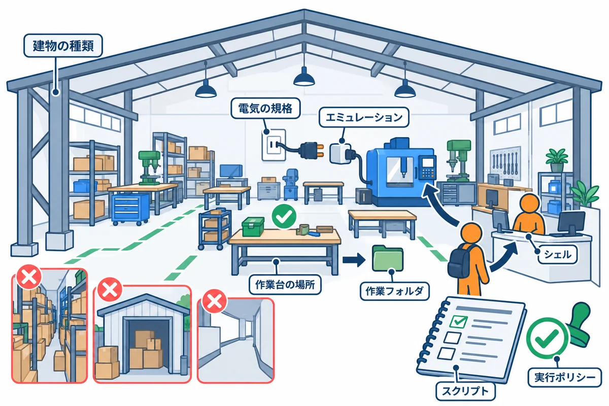
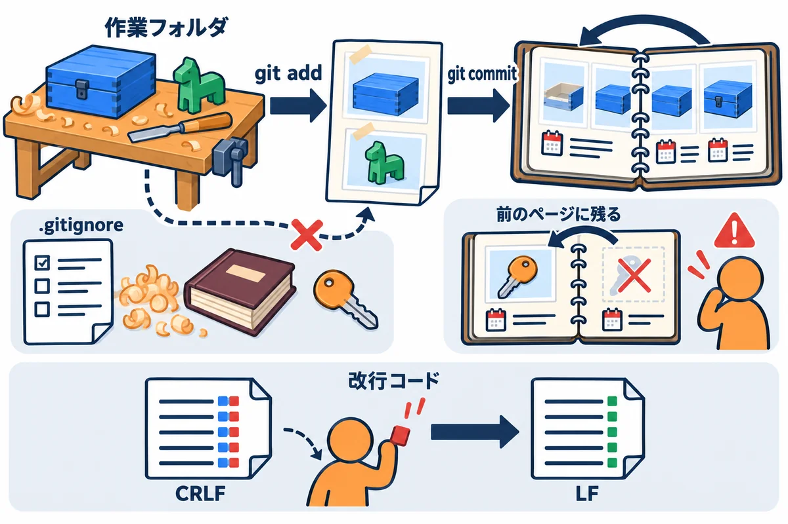
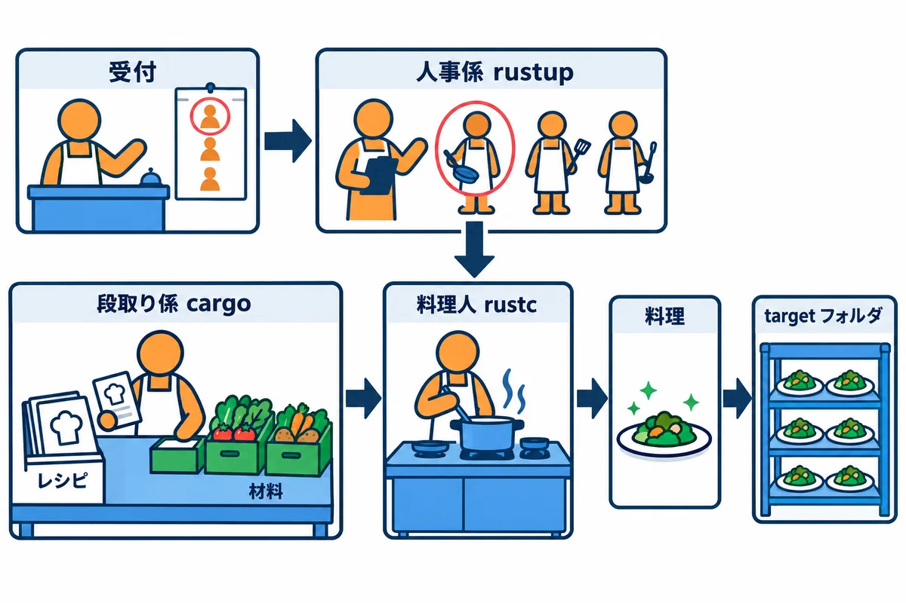
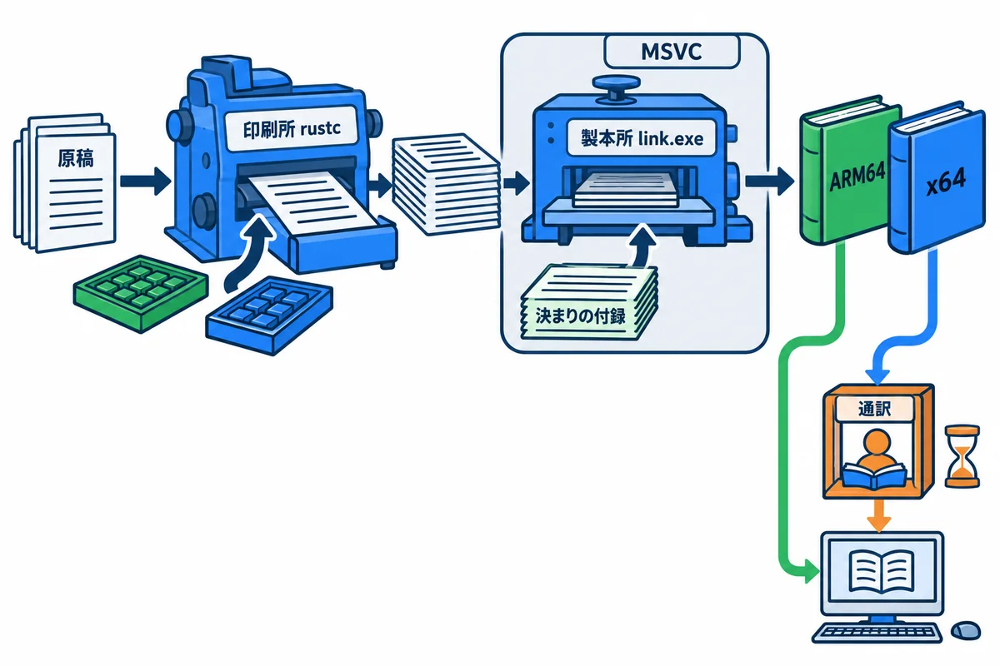
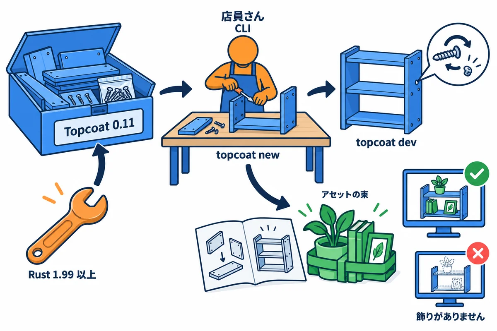

VOLUME 01 / RUST BACKEND MASTERY
環境構築 — Windows・WSL・Rust・Topcoat・Turso・Fly
PowerShell・Git・VS Code から Rust・Topcoat・Turso・Fly.io まで、教材のコードを自分の PC で動かす道具をそろえ、つまずいたときに原因を切り分けられるようになる
色の付いた枠のコードの、右上の「コピー」ボタンを押してください。コピーしたら、ブラウザーの「戻る」で PDF に戻れます。
このシリーズでは、ノートアプリ RustNote を Rust で作り、インターネットに公開します。そのためには、文字を打つ道具（シェル）、変更を記録する道具（Git）、コードを書く道具（VS Code）、Rust そのもの、Web アプリを作る道具（Topcoat）、データベースの道具（Turso）、公開の道具（Fly.io）を、自分の PC にそろえる必要があります。この巻は、その道具をそろえる巻です。
道具を入れる作業は、インストーラーの「次へ」を押すだけに見えます。しかし実際には、次のような事故がよく起きます。
LNK1104 という見慣れないエラーで止まるどれも、道具のつながりを知っていれば防げるものばかりです。「どのシェルで打ったか」「そのコマンドはどこにあるファイルか（PATH）」「PC の CPU は何か」「どの版か」を、自分で確かめられるようになるのが、この巻のいちばんの目標です。
この巻を終えると、次のことができるようになります。
.gitignore でビルドの成果物と秘密のファイルを除外し、.gitattributes で改行コードを決められるcargo fmt・cargo clippy・cargo test を、決まった順番で使える| 単元 | テーマ | ひとことで言うと |
|---|---|---|
| UNIT 01 | 作業フォルダと PowerShell | どのシェルで・どこにいて・どんな PC かを確かめ、作業場所を決める |
| UNIT 02 | Git・改行コード・秘密の除外 | 変更を記録する道具を入れ、改行の方言と秘密のファイルの扱いを最初に決める |
| UNIT 03 | VS Code と rust-analyzer | コードを書く机と、横で間違いを教えてくれる先輩を用意する |
| UNIT 04 | rustup・rustc・Cargo | Rust を入れて、どの版が使われているかを確かめる |
| UNIT 05 | MSVC Build Tools と CPU の種類 | Windows でビルドするためのリンカーを入れ、ARM64 と x64 の食い違いを見分ける |
| UNIT 06 | Cargo の品質コマンド | check・fmt・clippy・test を目的ごとに使い分ける |
| UNIT 07 | WSL2 と Docker | Windows の中で Linux を動かし、アプリを箱（コンテナ）に入れる |
| UNIT 08 | Topcoat 0.11 と CLI | Web フレームワークの道具を版を固定して入れ、開発サーバーを動かす |
| UNIT 09 | Turso CLI と libSQL の確認 | データベースの道具を WSL に入れ、Rust から libSQL につながるか確かめる |
| UNIT 10 | flyctl と環境の診断 | 公開の道具を入れ、ログイン・版・つながりを順番に確かめる |
この巻で入れる道具は、積み木のように重なっています。下の段が無いと、上の段は動きません。
cd・mkdir・ls などの基本のコマンド、絶対パスと相対パス、環境変数と PATH の意味を知っていると、この巻がずっと読みやすくなります。ヒント: 第0巻を読んでいなくても、この巻は読み進められます。知らない言葉が出てきたら、各単元の「用語」の囲みと、巻末の「用語ミニ辞典」を見てください。
ヒント: 第0巻の「はじめに: 手を動かす準備」で、もう Build Tools と Rust を入れた人も、この巻を最初から読んでかまいません。UNIT 04（rustup・rustc・Cargo）と UNIT 05（Build Tools）では、入れ方の手順は「もう入っている」ことを確かめるだけで済み、そのかわり、どこに何が入ったか・版の決め方などの、くわしい仕組みを学べます。
道具を入れる作業は、1つ間違えると、後の道具が全部動かなくなります。各単元では、次の4つの手順を1サイクルとして、1つずつ入れて、1つずつ確かめるように進めてください。
git --version など）を打ってみます。「まだ入っていない」こと、または「もう入っている版」を知るためです。PATH など）は、新しく開いた窓から有効になるからです。注意: この巻のコマンドは、管理者ではない、ふつうの PowerShell で打ちます。インストーラーが管理者の権限を必要とするときは、インストーラー自身が「このアプリがデバイスに変更を加えることを許可しますか？」と尋ねてきます。ふだんの作業を管理者の窓で行うと、作ったファイルの持ち主が変わったり、うっかりシステムの大事なファイルを変えてしまったりする原因になります。
PS C:\...> のようなプロンプト（入力を待っている印）は書いていません。枠の中の行を、1行ずつ打って Enter キーを押してください。# から始まる行は、説明のためのコメントです。打たなくてもかまいません（打っても、何も起きません）。... に置き換えています。たとえば C:\Users\...\rust-study は、あなたの PC では C:\Users\（あなたのユーザー名）\rust-study になります。2.53.0 など）や日付、番号（コミットの d779d78 など）は、あなたの PC では違う値になることがあります。違っていても、形が同じなら問題ありません。この巻の手順と実行結果は、次の環境で確かめています。UNIT 04 以降の道具は、各単元で入れます。
| 道具 | 版（この本で確かめたもの） | 使う単元 |
|---|---|---|
| Windows 11 Home | ARM64 版、ビルド 26200。x64 版の Windows は補足で説明します | すべて |
| Windows PowerShell | 5.1.26100.9711（Windows に最初から入っているもの） | すべて |
| Windows Terminal | Windows 11 に最初から入っているもの | すべて |
| Git for Windows | 2.53.0.windows.2（ARM64 版） | UNIT 02〜 |
| Visual Studio Code | 1.129.1（arm64 版） | UNIT 03〜 |
| rust-analyzer（VS Code の拡張機能） | 0.3.3097 | UNIT 03〜 |
| Rust（rustup・rustc・cargo） | rustup 1.29.2。Rust は 1.99 以上（本書シリーズの基準）、動作確認は 1.99.1 | UNIT 04〜 |
| Build Tools for Visual Studio | MSVC の C++ ビルドツール（ARM64 用）。版と選び方は UNIT 05 で説明します | UNIT 05〜 |
| WSL2 | Ubuntu 24.04.1 LTS | UNIT 07・09 |
| Topcoat / topcoat-cli | 0.11.0（=0.11.0 で固定） |
UNIT 08 |
| Turso CLI | v1.0.34（2026-10-31 の最新。WSL の中で使う。この巻では入れ方の説明だけ） | UNIT 09 |
| flyctl | v0.5.1（Windows 用は x64 版。ARM64 の PC ではエミュレーションで動く） | UNIT 10 |
ヒント: Git for Windows と VS Code は、更新の早い道具です。2026-10-31 に
winget listで確かめると、Git for Windows は 2.56.0.4、VS Code は 1.143.1 が出ていました。この巻の実行結果は、表の版で取ったものです。新しい版では、表示の細かい所が違うことがあります。
注意: このシリーズで使う Topcoat 0.11 は、Rust 1.99 以上でないとビルドできません。古い記事の手順で Rust を入れると、版が足りないことがあります。Rust の版の確かめ方と、プロジェクトごとに版を固定する方法は、UNIT 04 で説明します。
rust-study を、空白・日本語・OneDrive・深すぎる場所を避けて作れる.ps1 ファイル）を作って実行できる。実行ポリシーと文字コード（BOM）のエラーを読んで直せる
新しく工房を借りて、ものづくりを始めるところを想像してください。道具を運び込む前に、まず建物の下見をします。
| 工房の下見 | PC での言葉 | この単元で使うもの |
|---|---|---|
| 建物の種類 | OS | Windows 11 |
| 電気の規格 | CPU の種類（アーキテクチャ） | ARM64 / x64 |
| 変換アダプター | エミュレーション | ARM64 の PC で x64 用のアプリを動かす仕組み |
| 作業台の場所 | 作業フォルダ | C:\Users\（あなたの名前）\rust-study |
| 受付の係員 | シェル | Windows PowerShell 5.1 |
| 手順書 | スクリプト | whereami.ps1 |
| 手順書の決まりと言葉の印 | 実行ポリシーと BOM | RemoteSigned、UTF-8（BOM 付き） |
用語: CPU の種類（アーキテクチャ：命令の体系のこと。Windows の PC では x64（Intel や AMD の CPU）と ARM64（Snapdragon などの CPU）が主に使われている。同じ Windows 11 でも、CPU の種類によって、動かせるプログラムのファイルが違う）
用語: エミュレーション（emulation：ARM64 の PC の上で、x64 用のプログラムを、通訳しながら動かす仕組み。たいていのアプリはそのまま動くが、本来の速さは出ない）
用語: スクリプト（script：シェルに打つコマンドを、ファイルに並べて書いたもの。PowerShell のスクリプトは
.ps1という拡張子を付ける）
教材どおりに打ったのに結果が違うとき、最初に確かめるのは次の4つです。この単元では、この4つをコマンドで確かめる方法を身に付けます。
次は、作業フォルダの置き場所です。Rust のビルドは、プロジェクトのフォルダの中に、長い名前のファイルをたくさん作ります。最初に置き場所を間違えると、あとで原因の分かりにくいエラーになります。
C:\Users\（あなたの名前））の直下に rust-study を作ります。第0巻で練習用のプロジェクトを作った場所と同じです。C:\dev\rust-study のように、C ドライブの直下に短いフォルダを作って使います。Windows 11 の C ドライブの直下には、管理者の権限が無くても新しいフォルダを作れます（この本の PC で icacls C:\ を見て、ふつうのユーザーにフォルダを作る権限があることを確かめました）。target フォルダの中のいちばん長いファイルのパスは、プロジェクトのフォルダから数えて 125〜128 文字でした。場所の部分が長いと、合計がすぐに上限に近づきます。最後に、スクリプトを読むときの文字コードの話です。Windows PowerShell 5.1 は、スクリプトの先頭を見て、どの文字コードで読むかを決めます。
用語: BOM（ボム：Byte Order Mark。ファイルの先頭に置く3バイト
EF BB BFの印で、「このファイルは UTF-8 です」と知らせる。画面には表示されない）
この単元の「最小コード」は、Rust ではなく PowerShell のコマンドです。
▼ この手順がやること（先に日本語で）: Windows Terminal を開き、PowerShell に3つのお願いをします。「あなた（PowerShell）の版は？」「あなたはどの CPU 用のプログラムとして動いていますか？」「今いるフォルダはどこですか？」の3つです。
まず、Windows Terminal（ウィンドウズ ターミナル）を開きます。
ターミナル と入力し、出てきた「ターミナル」を押します。PS C:\Users\（あなたの名前）> という行が出ていれば準備完了です。開いた窓で、次の3行を1行ずつ打って Enter キーを押します。
# PowerShell の版を表示する
$PSVersionTable.PSVersion
# このシェルが、どの CPU 用のプログラムとして動いているかを表示する
$env:PROCESSOR_ARCHITECTURE
# 今いるフォルダを表示する
Get-Location
▼ 実行結果
Major Minor Build Revision
----- ----- ----- --------
5 1 26100 9711
ARM64
Path
----
C:\Users\...
$PSVersionTable.PSVersion は PowerShell の版$PSVersionTable.PSVersion
$PSVersionTable は、PowerShell が自分自身の情報をまとめて入れている変数です（$ で始まる名前は変数です）。その中の PSVersion が版です。Major（大きな版）が 5、Minor（小さな版）が 1 なので、Windows PowerShell 5.1 です。Windows 10・11 に最初から入っているもので、この本はこれを使います。Build と Revision は Windows の更新で増えていくので、あなたの PC では違う数字かもしれません。pwsh）もあります。7 を使っている人は Major が 7 になります。多くのコマンドは同じように動きますが、ファイルを書くときの文字コードの既定などが 5.1 と違うので、この本の結果と食い違うことがあります。迷ったら 5.1 を使ってください。$env:PROCESSOR_ARCHITECTURE は「このシェルの」CPU の種類$env:PROCESSOR_ARCHITECTURE
$env: で始まる名前は、環境変数（第0巻 UNIT 03）を読む書き方です。PROCESSOR_ARCHITECTURE には、このプログラム（シェル）がどの CPU 用として動いているかが入っています。ARM64 なら ARM64 用、AMD64 なら x64 用です。x64 は、AMD という会社が最初に作った仕組みなので、Intel の CPU の PC でも AMD64 と表示されます。AMD64 と表示されます（「よくあるエラー」のエラー4で実際に見ます）。PC そのものの CPU は、例1-3のスクリプトで調べます。Get-Location は今いるフォルダGet-Location
C:\Users\（あなたの名前））にいます。プロンプトの PS C:\Users\...> にも同じ場所が出ています。~（チルダ）という短い書き方でも表せます。cd ~ と打つと、どこにいてもホームフォルダに戻れます。ヒント: x64 の Windows の PC では、
$env:PROCESSOR_ARCHITECTUREはAMD64と表示されます。それで正しい状態です。この本で「ARM64 の PC では」と書いてある注意は、x64 の PC の人は読み飛ばしてかまいません。
▼ この手順がやること（先に日本語で）: ホームフォルダに戻ってから、練習用の作業フォルダ
rust-studyを作り、その中へ移動します。最後に、本当にそこへ移動できたかを確かめます。
# ホームフォルダへ移動する
cd ~
# 作業フォルダ rust-study を作る
mkdir rust-study
# その中へ移動する
cd rust-study
# 今いるフォルダを確かめる
Get-Location
▼ 実行結果
ディレクトリ: C:\Users\...
Mode LastWriteTime Length Name
---- ------------- ------ ----
d----- 2026/10/17 11:49 rust-study
Path
----
C:\Users\...\rust-study
第0巻で rust-study をすでに作った人は、mkdir の行で次のエラーが出ます。フォルダはもうあるので、気にせず次の cd rust-study へ進んでください。
mkdir : 指定された名前 C:\Users\...\rust-study の項目は既に存在します。
発生場所 行:1 文字:1
+ mkdir rust-study
+ ~~~~~~~~~~~~~~~~
+ CategoryInfo : ResourceExists: (C:\Users\...\rust-study:String) [New-Item], IOException
+ FullyQualifiedErrorId : DirectoryExist,Microsoft.PowerShell.Commands.NewItemCommand
mkdir はフォルダを作り、作ったものを一覧で見せるmkdir rust-study は「今いるフォルダの中に rust-study というフォルダを作って」というお願いです。PowerShell は、作ったフォルダを一覧の形で表示します。Mode 列の d は、それがフォルダ（directory）であることの印です。LastWriteTime は作った日時です。C:\Program Files のような場所は、書き込むのに管理者の権限が要ります。C:\Users\山田 太郎 のように日本語や空白が入っていると、一部の道具が正しく扱えないことがあります（日本語と空白が入ったフォルダでの様子は、例1-4で確かめます）。~\rust-study を C:\dev\rust-study に読み替えてください。# C ドライブの直下に dev フォルダを作り、その中に作業フォルダを作る
mkdir C:\dev\rust-study
cd C:\dev\rust-study
ヒント: エクスプローラーでこのフォルダを開くには、PowerShell で
explorer .と打ちます。.は「今いるフォルダ」という意味です。
例1-1で確かめた3つに、OS・PC の CPU・作業フォルダの注意点を加えて、1回で全部を表示するスクリプトを作ります。新しい PC を用意したときや、エラーの相談をするときに、この表示を貼り付ければ、自分の環境を正確に伝えられます。
▼ この手順がやること（先に日本語で）:
rust-studyフォルダに、スクリプトwhereami.ps1を作ります。中身は、シェルの版・今いるフォルダ・OS・PC の CPU・このシェルの CPU を表示し、さらに「今いるフォルダのパスに空白や日本語が入っていないか」「OneDrive の同期フォルダの中ではないか」を調べて、OK か注意かを表示するものです。スクリプトを実行できるように設定を1つ変えてから、実行します。
手順1: スクリプトのファイルを作る。 rust-study フォルダにいることを確かめてから、次のコマンドをまとめて貼り付けて Enter キーを押します。1行目の @' から最後の '@ までが、ファイルに書き込む中身です。
Set-Content -Path whereami.ps1 -Encoding utf8 -Value @'
# いま「どのシェルで・どこにいて・どんな PC か」を1画面にまとめて表示する
$os = Get-CimInstance Win32_OperatingSystem
$cpu = Get-CimInstance Win32_Processor | Select-Object -First 1
# CPU の種類の番号を名前に直す（9 = x64、12 = ARM64）
$machine = switch ($cpu.Architecture) {
9 { "x64" }
12 { "ARM64" }
default { "その他 ($($cpu.Architecture))" }
}
Write-Output "シェル : PowerShell $($PSVersionTable.PSVersion)"
Write-Output "現在のフォルダ : $((Get-Location).Path)"
Write-Output "OS : $($os.Caption) (ビルド $($os.BuildNumber))"
Write-Output "PC の CPU : $machine"
Write-Output "このシェルの種類: $env:PROCESSOR_ARCHITECTURE"
# 作業フォルダのパスに空白や日本語（半角英数字と記号以外の文字）が入っていないかを調べる
$here = (Get-Location).Path
if ($here -match '[^\x21-\x7E]') {
Write-Output "パスの文字 : 注意（空白や日本語が含まれています）"
} else {
Write-Output "パスの文字 : OK（半角英数字と記号だけ）"
}
# OneDrive の同期フォルダの中かどうかを調べる
if ($env:OneDrive -and $here.StartsWith($env:OneDrive)) {
Write-Output "OneDrive : 注意（同期フォルダの中です）"
} else {
Write-Output "OneDrive : OK（同期フォルダの外です）"
}
'@
▶ ここで初めて出てくるコード
Set-Content -Path（PowerShell）:-Path 名前で、書き込むファイルの名前（場所）を指定します。Set-Content memo.txt "…"のように名前を最初に書く時は、-Pathを省けます。Set-Content -Value（PowerShell）:-Value 中身で、ファイルに書く中身を指定します。@' … '@で囲むと、何行もの文章をそのまま中身にできます（ヒア文字列）。Get-CimInstance（PowerShell）: Windows の中の情報（OS・CPU・サービス・ディスクなど）を問い合わせるコマンド。Get-CimInstance Win32_OperatingSystemは OS の情報、Get-CimInstance Win32_Serviceはサービスの一覧（自動で始まるかどうかも分かる）です。Select-Object -First（PowerShell）:-First 1で、結果の最初の 1 つだけを取り出します。-Last 3なら最後の 3 つです。switch（PowerShell）: 値によって、することを分ける書き方。switch ($x) { 'A' { … } 'B' { … } default { … } }。合った所の{ }の中だけが動きます。結果を$machine = switch (…) { … }のように受け取ることもできます。default（PowerShell）: PowerShell のswitchの中で、「どの場合にも合わなかった時」の処理を書く所。Rust のmatchの_ =>に当たります。Write-Output（PowerShell）: 値を「出力」として次へ流す（最後なら画面に出す）コマンド。Write-Output "こんにちは"。文字列を 1 行に書くだけでも同じ働きをしますが、はっきり書く時に使います。if（PowerShell）: PowerShell の条件の書き方。if (条件) { 合う時 } else { 合わない時 }。条件は( )で囲みます。比べる時は-eq（等しい）・-ne（違う）・-gt（大きい）・-match（パターンに合う）のような書き方をします（==や>ではありません）。-match（PowerShell）: 正規表現（文字の形の決まり）に合うかの比べ方。$line -match '^\s*#'は「空白のあと#で始まる行（コメント）か」。合った部分は$Matchesで取り出せます。else（PowerShell）:if (条件) { … } else { … }の、条件に合わなかった時の所。elseif (条件)で、条件をつなげられます。-and（PowerShell）: 「かつ」（両方ともTrueの時だけTrue）。$a -gt 0 -and $b -gt 0のように、条件をつなぎます。
貼り付けている間、行の先頭に >> が表示されます。これは「まだ続きがありますね」という PowerShell の合図です。最後の '@ の行で Enter キーを押すと、ファイルが作られます（成功しても何も表示されません）。
手順2: 自分で作ったスクリプトを実行できるようにする。 何も設定していない Windows では、安全のためにスクリプトの実行が止められています。次のコマンドで、「自分の PC で作ったスクリプトは実行してよい」という設定に変えます。
# 自分のユーザーだけ、実行ポリシーを RemoteSigned にする
Set-ExecutionPolicy -Scope CurrentUser RemoteSigned
▶ ここで初めて出てくるコード
Set-ExecutionPolicy（PowerShell）: PowerShell のスクリプト（.ps1のファイル）を動かしてよいかの決まり（実行ポリシー）を変えるコマンド。Set-ExecutionPolicy -Scope CurrentUser RemoteSignedは、「自分のアカウントだけ、自分のパソコンで作ったスクリプトは動かしてよい」にします。会社のパソコンでは、決まりがある時は勝手に変えません。Set-ExecutionPolicy -Scope（PowerShell）:-Scope CurrentUserで、決まりを「今のユーザーだけ」に当てます（管理者の権限が要りません）。
確認の質問が表示されたら、Y を打って Enter キーを押します。設定できたかは、次のコマンドで確かめます。
# 範囲（Scope）ごとの実行ポリシーを一覧で表示する
Get-ExecutionPolicy -List
▼ 実行結果
Scope ExecutionPolicy
----- ---------------
MachinePolicy Undefined
UserPolicy Undefined
Process Undefined
CurrentUser RemoteSigned
LocalMachine Undefined
▶ ここで初めて出てくるコード
Get-ExecutionPolicy（PowerShell）: 今の実行ポリシー（スクリプトを動かしてよいかの決まり）を見るコマンド。Restrictedはスクリプトを動かせない、RemoteSignedは自分で作った物は動かせる、という意味です。Get-ExecutionPolicy -List（PowerShell）:-Listで、決まりを「どの範囲（全員・自分・この窓など）に、何が決まっているか」の一覧で表示します。
CurrentUser の行が RemoteSigned になっていれば成功です。
手順3: スクリプトを実行する。
# 今いるフォルダ（.）の whereami.ps1 を実行する
.\whereami.ps1
▼ 実行結果
シェル : PowerShell 5.1.26100.9711
現在のフォルダ : C:\Users\...\rust-study
OS : Microsoft Windows 11 Home (ビルド 26200)
PC の CPU : ARM64
このシェルの種類: ARM64
パスの文字 : OK（半角英数字と記号だけ）
OneDrive : OK（同期フォルダの外です）
▶ ここで初めて出てくるコード
.\whereami.ps1（PowerShell）: 今いるフォルダのwhereami.ps1（PowerShell のスクリプト）を動かす書き方。今いるフォルダのファイルを動かす時は、頭に.\（「ここの」）を付ける決まりです。
「PC の CPU」と「このシェルの種類」が同じで、下の2行が両方 OK なら、作業を始める準備ができています。
Set-Content -Encoding utf8 と @' ... '@ でファイルを作るSet-Content -Path whereami.ps1 -Encoding utf8 -Value @'
（中身）
'@
Set-Content は、ファイルに文字を書き込むコマンドです（第0巻 UNIT 03）。-Path が書き込むファイル、-Value が書き込む中身です。@' と '@ ではさんだ部分は、何行あっても、そのまま1つの文字列として扱われます（ヒア文字列と呼びます）。'（シングルクォート）を使ったヒア文字列の中では、$os のような変数も、書いたとおりの文字のまま残ります。スクリプトの中身を書き込むのに、ちょうどよい書き方です。@' は行の最後に、'@ は行の先頭に書く決まりです。'@ の前に空白があると、終わりの印として認識されません。-Encoding utf8 を付けると、Windows PowerShell 5.1 は BOM 付きの UTF-8 でファイルを書きます。図で見たとおり、日本語を含むスクリプトを 5.1 で正しく読ませるには、この BOM が必要です。RemoteSignedSet-ExecutionPolicy -Scope CurrentUser RemoteSigned
Restricted（制限付き）になっていて、スクリプトは1つも実行できません。メールなどで受け取った怪しいスクリプトを、うっかり実行しないための守りです。RemoteSigned（リモート・サインド）は、「自分の PC で作ったスクリプトは実行してよい。インターネットから取ってきたスクリプトは、作った人の署名が付いているものだけ実行してよい」という設定です。開発の作業では、これがよく使われます。-Scope CurrentUser は「今のユーザーだけに設定する」という意味です。PC 全体の設定ではないので、管理者の権限は要りません。Get-ExecutionPolicy -List の表は、上の行ほど優先されます。Undefined は「この範囲では決めていない」という意味です。CurrentUser だけが RemoteSigned なので、結果として RemoteSigned が使われます。注意: インターネットから取ってきたスクリプトを実行するときは、中身を読んで、何をするものかを理解してからにしましょう。実行ポリシーは「うっかり」を防ぐための仕組みで、悪意のあるスクリプトを完全に防ぐものではありません。
.\whereami.ps1 の .\ は「今いるフォルダの」.\whereami.ps1
whereami.ps1 とだけ打っても、今いるフォルダのスクリプトを実行しません。PATH に書かれたフォルダだけを探すからです。同じ名前の別のコマンドと取り違えないための決まりです。.\（今いるフォルダの）を付けて、場所をはっきり書きます。$os = Get-CimInstance Win32_OperatingSystem
$cpu = Get-CimInstance Win32_Processor | Select-Object -First 1
Get-CimInstance は、Windows に PC の情報を問い合わせるコマンドです。Win32_OperatingSystem は OS の情報、Win32_Processor は CPU の情報です。結果を変数 $os と $cpu に入れています。$os.Caption は OS の名前、$os.BuildNumber はビルド番号（Windows の更新の段階を表す番号）です。$cpu.Architecture は、PC の CPU そのものの種類を表す番号です。switch で、9 なら x64、12 なら ARM64 という名前に直しています。シェルがエミュレーションで動いていても、こちらは本物の CPU を表します。if ($here -match '[^\x21-\x7E]') {
-match は「左の文字列が、右のパターンに当てはまるか」を調べる書き方です。[^\x21-\x7E] は「半角の英数字と記号（文字の番号 0x21〜0x7E）以外の文字」というパターンで、空白（0x20）や日本語が1文字でも入っていると当てはまります。$env:OneDrive は、OneDrive を使っている PC で、同期フォルダの場所が入っている環境変数です。今いるフォルダのパスが、その場所から始まっていれば（StartsWith）、同期フォルダの中です。▼ この手順がやること（先に日本語で）: 同じスクリプトを、わざと良くない場所で実行して、「注意」と表示されることを確かめます。1つ目は、空白と日本語を含む名前のフォルダ
Rust の勉強、2つ目は OneDrive の同期フォルダです。
# 空白と日本語を含む名前のフォルダを作って移動し、スクリプトを実行する
mkdir "Rust の勉強"
cd "Rust の勉強"
..\whereami.ps1
▼ 実行結果（mkdir の表示は省いています）
シェル : PowerShell 5.1.26100.9711
現在のフォルダ : C:\Users\...\rust-study\Rust の勉強
OS : Microsoft Windows 11 Home (ビルド 26200)
PC の CPU : ARM64
このシェルの種類: ARM64
パスの文字 : 注意（空白や日本語が含まれています）
OneDrive : OK（同期フォルダの外です）
OneDrive を使っている人は、同期フォルダへ移動して実行してみます。
# OneDrive の同期フォルダへ移動して、rust-study のスクリプトを実行する
cd $env:OneDrive
~\rust-study\whereami.ps1
▼ 実行結果
シェル : PowerShell 5.1.26100.9711
現在のフォルダ : C:\Users\...\OneDrive
OS : Microsoft Windows 11 Home (ビルド 26200)
PC の CPU : ARM64
このシェルの種類: ARM64
パスの文字 : OK（半角英数字と記号だけ）
OneDrive : 注意（同期フォルダの中です）
▶ ここで初めて出てくるコード
~\rust-study\whereami.ps1（PowerShell）: ホームフォルダ（~＝C:\Users\you）から数えた場所で、スクリプトを動かす書き方。どこにいても同じ書き方で動かせます。
確かめたら、作業フォルダに戻って、練習用に作ったフォルダを消しておきます。
# 作業フォルダへ戻り、練習用のフォルダを消す
cd ~\rust-study
Remove-Item "Rust の勉強"
" で囲むmkdir "Rust の勉強" のように、空白を含む名前は " で囲みます。囲まないと、PowerShell は空白でお願いを区切って、Rust と の勉強 の2つの名前だと受け取ってしまいます（「よくあるエラー」のエラー3）。..\whereami.ps1 の ..\ は「1つ上のフォルダの」という意味です。Rust の勉強 の1つ上は rust-study なので、さっき作ったスクリプトを指しています。~\rust-study に置いたまま、今いるフォルダだけを OneDrive に変えて実行しました。スクリプトが調べる「現在のフォルダ」は、スクリプトの置き場所ではなく、実行したときに今いたフォルダです。例1-3の手順2（Set-ExecutionPolicy）を飛ばしてスクリプトを実行すると、次のエラーになります。
.\whereami.ps1 : このシステムではスクリプトの実行が無効になっているため、ファイル C:\Users\...\rust-study\whereami.ps1 を読み込むことができません。詳細については、「about_Execution_Policies」(https://go.microsoft.com/fwlink/?LinkID=135170) を参照してください。
発生場所 行:1 文字:1
+ .\whereami.ps1
+ ~~~~~~~~~~~~~~
+ CategoryInfo : セキュリティ エラー: (: ) []、PSSecurityException
+ FullyQualifiedErrorId : UnauthorizedAccess
Restricted のままなので、PowerShell がスクリプトの実行を断りました。CategoryInfo の セキュリティ エラー と、UnauthorizedAccess（許可されていない操作）が、その理由を表しています。スクリプトの中身が間違っているわけではありません。Set-ExecutionPolicy -Scope CurrentUser RemoteSigned を実行してから、もう一度スクリプトを実行します。ヒント: エラーの長い1行目は、PowerShell の窓の幅で折り返して表示されます。単語の途中で折り返されることもありますが、中身は同じです。
メモ帳や VS Code で新しくスクリプトを書いて、ふつうに保存すると、ファイルは BOM なしの UTF-8 になります。日本語を含むスクリプトを BOM なしで保存して実行すると、次のエラーになります。
発生場所 C:\Users\...\whereami.ps1:6 文字:7
+ 9 { "x64" }
+ ~
式またはステートメントのトークン '{' を使用できません。
発生場所 C:\Users\...\whereami.ps1:7 文字:8
+ 12 { "ARM64" }
+ ~
式またはステートメントのトークン '{' を使用できません。
発生場所 C:\Users\...\whereami.ps1:9 文字:1
+ }
+ ~
式またはステートメントのトークン '}' を使用できません。
発生場所 C:\Users\...\whereami.ps1:28 文字:1
+ }
+ ~
式またはステートメントのトークン '}' を使用できません。
+ CategoryInfo : ParserError: (:) [], ParseException
+ FullyQualifiedErrorId : UnexpectedToken
ParserError：構文の解析のエラー）で失敗しています。BOM が無いので、PowerShell 5.1 はファイルを Shift_JIS（日本語の Windows の古い文字コード）として読みました。） を作るバイトの一部が、次の改行のバイトと組になって、1つの文字として読まれてしまうことです。その結果、6行目の $machine = switch ($cpu.Architecture) { がコメントの続きになって消え、9 { "x64" } の { が「ここにあるはずのない記号」になりました。エラーの 6 文字:7 は「6行目の7文字目」という意味で、行がつながった後の数え方です（この本の PC で、ファイルを Shift_JIS として読み直して、5行目と6行目が1行につながることを確かめました）。Set-Content -Encoding utf8 を使います。VS Code で保存し直す方法は UNIT 03 で説明します。スクリプトの中に日本語を書かない（コメントも英語にする）のも1つの方法です。ヒント: PowerShell 7 は、BOM が無いファイルを UTF-8 として読みます。このエラーは Windows PowerShell 5.1 に特有のものです。
cd C:\Program Files
Set-Location : 引数 'Files' を受け入れる位置指定パラメーターが見つかりません。
発生場所 行:1 文字:1
+ cd C:\Program Files
+ ~~~~~~~~~~~~~~~~~~~
+ CategoryInfo : InvalidArgument: (:) [Set-Location]、ParameterBindingException
+ FullyQualifiedErrorId : PositionalParameterNotFound,Microsoft.PowerShell.Commands.SetLocationCommand
cd に C:\Program と Files の2つを渡したことになりました。cd の正式名は Set-Location で、行き先は1つしか受け取れません。2つ目の Files の置き場所（位置指定パラメーター）が無い、というエラーです。" で囲みます。cd "C:\Program Files"
Get-Location
▼ 実行結果
Path
----
C:\Program Files
ヒント:
cd C:\Progまで打って Tab キーを押すと、PowerShell が残りを補って、空白を含むパスを自動で'で囲んでくれます。打ち間違いも防げるので、パスはなるべく Tab キーで補いましょう。
ARM64 の PC で、x64 用のアプリから PowerShell を起動すると、PowerShell もエミュレーションで動きます。次は、この本の PC で、x64 用のプログラムである Git Bash（UNIT 02 で入る、Git に付いてくる bash）から powershell と打って起動し、同じスクリプトを実行した結果です。
シェル : PowerShell 5.1.26100.9711
現在のフォルダ : C:\Users\...\rust-study
OS : Microsoft Windows 11 Home (ビルド 26200)
PC の CPU : ARM64
このシェルの種類: AMD64
パスの文字 : OK（半角英数字と記号だけ）
OneDrive : OK（同期フォルダの外です）
ARM64 なのに、「このシェルの種類」が AMD64 になっています。エラーは出ませんが、PowerShell が x64 のエミュレーションで動いている状態です。この PowerShell から起動したプログラムも、x64 の世界の中で動きます。$env:PROCESSOR_ARCHITECTURE で、PC と同じ ARM64 と表示されることを確かめてから作業しましょう。注意: Git for Windows の ARM64 版でも、Git Bash の bash そのものは x64 用のプログラムでした（この本の PC で、
C:\Program Files\Git\usr\bin\bash.exeが x64 用のファイルであることを確かめました）。この本では Git Bash は使わず、PowerShell と、UNIT 07 で入れる WSL の bash を使います。
LNK1104: ファイル ... を開くことができません（長すぎるパス）このエラーは、UNIT 04 で Rust を入れた後、ビルドしたときに出るものです。原因が「作業フォルダの場所」にあるので、ここで紹介しておきます。今は読むだけで大丈夫です。
Cargo（Rust のビルドの道具）には、ビルドの結果を置くフォルダ（ふだんはプロジェクトの中の target）を、環境変数 CARGO_TARGET_DIR で別の場所に変える仕組みがあります。この本の PC で、それを使って結果の置き場所をわざと深い場所にし、小さなプログラム hello-rust をビルドしたところ、次のエラーになりました（パスはとても長いので、途中を ... に置き換えています）。
Compiling hello-rust v0.1.0 (...\hello-rust)
error: linking with `link.exe` failed: exit code: 1104
|
= note: "C:\\Program Files (x86)\\Microsoft Visual Studio\\2022\\BuildTools\\VC\\Tools\\MSVC\\14.44.35207\\bin\\HostARM64\\arm64\\link.exe" "/NOLOGO" ...
= note: some arguments are omitted. use `--verbose` to show all linker arguments
= note: LINK : fatal error LNK1104: ファイル '...\debug\deps\hello_rust.exe' を開くことができません。
error: could not compile `hello-rust` (bin "hello-rust") due to 1 previous error
link.exe：部品をつないで実行ファイルを作る道具。UNIT 05 で入れます）が、作ろうとした実行ファイル hello_rust.exe を開けませんでした。LNK1104 は、リンカーのエラーの番号です。| 実行ファイルのパスの長さ | 結果 |
|---|---|
| 255 文字 | 成功 |
| 259 文字 | 成功 |
| 260 文字 | LNK1104 で失敗 |
| 261 文字 | LNK1104 で失敗 |
LongPathsEnabled）があり、この本の PC ではその設定が有効（1）でしたが、それでもリンカーは長いパスを開けませんでした。設定を変えても、道具の側が対応していなければ効かないのです。C:\Users\（あなたの名前）\rust-study なら、プロジェクトの中の長いファイルを足しても、上限まで十分な余裕があります。ヒント: 長いパスの設定がどうなっているかは、
(Get-ItemProperty -Path HKLM:\SYSTEM\CurrentControlSet\Control\FileSystem -Name LongPathsEnabled).LongPathsEnabledで確かめられます。この本の PC では1と表示されました。ただし上のとおり、この設定に頼らず、短い場所で作業するのがいちばん確実です。
この単元で学んだ「今いるフォルダ」は、RustNote を動かすときにも、そのまま効いてきます。RustNote のフォルダ（Rust/rustnote）には rust-toolchain.toml というファイルがあり、中には次のように書かれています。
# このフォルダの中で cargo を実行すると、Rust 1.99.1 が使われる
# （既定のツールチェーンは変更しない）
[toolchain]
channel = "1.99.1"
components = ["rustfmt", "clippy"]
このファイルがあると、RustNote のフォルダの中で実行したときだけ、Rust 1.99.1 が使われます。この本の PC で、RustNote のフォルダとホームフォルダで、それぞれ「今使われる Rust の版」を表示すると、次のようになりました（Rust を入れるのは UNIT 04 です。ここでは結果だけ見てください）。
# RustNote のフォルダ（Rust/rustnote）の中で、使われる Rust の版を表示する
rustup show active-toolchain
cargo --version
# ホームフォルダで、同じことをする
cd ~
rustup show active-toolchain
cargo --version
▼ 実行結果
1.99.1-aarch64-pc-windows-msvc (overridden by 'C:\Users\...\rustnote\rust-toolchain.toml')
cargo 1.99.1 (5f94df478 2026-08-27)
stable-aarch64-pc-windows-msvc (default)
cargo 1.99.1 (5f94df478 2026-08-27)
▶ ここで初めて出てくるコード
rustup show（Rust の道具）: 入っている Rust の版と、今使っている版を表示します。rustup show active-toolchainは、今このフォルダで使われる版だけを表示します。
rust-toolchain.toml によって 1.99.1 が選ばれています（overridden by は「このファイルで上書きされています」という意味です）。stable。(default) は「既定なので選ばれました」という意味）が使われました。今は stable も 1.99.1 なので、版の数字は同じですが、選ばれた理由が違います。stable は、新しい版が出たあとに rustup update をすると上がります（UNIT 04）。そのときも、RustNote のフォルダの中だけは 1.99.1 のままです。cargo というコマンドでも、今いるフォルダによって、動く Rust の版が変わるのです。RustNote のコマンドは、必ず RustNote のフォルダに cd してから打ちます。RustNote の README（説明書）にも「PowerShell で、このフォルダ（Rust/rustnote）に移動して実行します」と書かれています。RustNote は、待ち受けるポートなどの設定を環境変数から読みます（第0巻 UNIT 03）。PowerShell で $env:PORT = "3001" のように設定すると、その窓から起動した RustNote にだけ効きます。窓を閉じると消え、ほかの窓には影響しません。設定がうまく効かないときは、「設定した窓と、起動した窓が同じか」を確かめましょう。
問1: ある人が whereami.ps1 を実行したら、次のように表示されました。このまま作業を始めてよいでしょうか。直したほうがよい点を2つ挙げて、それぞれどうすればよいか答えてください。
シェル : PowerShell 5.1.26100.9711
現在のフォルダ : C:\Users\...\OneDrive\Rust 勉強
OS : Microsoft Windows 11 Home (ビルド 26200)
PC の CPU : ARM64
このシェルの種類: AMD64
パスの文字 : 注意（空白や日本語が含まれています）
OneDrive : 注意（同期フォルダの中です）
問2: ホームフォルダの中に My Projects というフォルダがあります。PowerShell で、そのフォルダへ移動して、移動できたことを確かめるコマンドを書いてください。また、cd ~\My Projects と打つとどうなるか、理由とともに答えてください。
問3: 作業フォルダの候補が4つあります。いちばんよいものを選び、ほかの3つがよくない理由を、それぞれ1つずつ答えてください（ユーザー名は taro とします）。
C:\Program Files\rust-studyC:\Users\taro\rust-studyC:\Users\taro\OneDrive\デスクトップ\rust-studyC:\Users\taro\Documents\work\2026\october\study\rust\practice\projects\rust-study問1の解答: このまま作業を始めないほうがよいです。直す点は次の2つです。
ARM64、「このシェルの種類」が AMD64）。スタートメニューから Windows Terminal を開き直し、$env:PROCESSOR_ARCHITECTURE が ARM64 になる PowerShell で作業します。cd ~ でホームフォルダに戻り、mkdir rust-study で作業フォルダを作り直して、そこで作業します。直したら、もう一度 .\whereami.ps1 を実行して、「このシェルの種類」が ARM64 になり、下の2行が両方 OK になることを確かめましょう。
問2の解答:
# 空白を含むパスは " で囲む
cd "~\My Projects"
Get-Location
cd ~\My Projects と囲まずに打つと、PowerShell は空白で区切って ~\My と Projects の2つを cd に渡すので、エラー3と同じ「引数 'Projects' を受け入れる位置指定パラメーターが見つかりません」というエラーになります。cd ~\My まで打って Tab キーで補うと、自動で ' で囲んでくれるので確実です。問3の解答: いちばんよいのは 2 の C:\Users\taro\rust-study です。
C:\Program Files の中に書き込むのに管理者の権限が要ります。名前に空白も入っています。デスクトップ という日本語も入っています）。$env:PROCESSOR_ARCHITECTURE が ARM64 になる PowerShell で作業する。rust-study のように、短く・半角英数字だけで・OneDrive の外に置く。空白を含むパスは " で囲み、パスが 260 文字に近づく深い場所は避ける。.ps1 は BOM 付きの UTF-8 で保存し、実行ポリシーは Set-ExecutionPolicy -Scope CurrentUser RemoteSigned で「自分で作ったスクリプトは実行してよい」にする。--show-origin）を確かめられる.gitignore で、ビルドの成果物・データベースのファイル・秘密の値を書いた .env を、Git に入れないようにできるLF will be replaced by CRLF という警告の意味を説明し、.gitattributes で改行コードを決められる
Git（ギット）は、工房の「作業日誌つきの写真アルバム」です。
git add（ステージに載せる）です。git commit（コミット）です。アルバムを後からめくれば、どの日に何がどう変わったかが分かり、昔の状態に戻すこともできます。.gitignore です。もう1つ、改行コードは「文の区切り方の方言」です。Windows では行の終わりを「CR と LF」の2文字で、Linux や macOS では「LF」の1文字で書くのが流儀です。Windows の方言のまま書いた手順書を Linux の係員に渡すと、行の最後に余計な CR がくっついた、知らない言葉に聞こえてしまいます。
| アルバムのたとえ | Git の言葉 | この単元で使うもの |
|---|---|---|
| 作業台の上 | 作業フォルダ（ワーキングツリー） | ~\rust-study\hello-git |
| 台紙に並べる | ステージ（インデックス）に載せる | git add |
| アルバムに貼る | コミット | git commit -m "…" |
| アルバムそのもの | リポジトリ | hello-git\.git フォルダ |
| 貼らない物リスト | 無視するファイルの一覧 | .gitignore |
| 文の区切りの方言 | 改行コード（CRLF / LF） | .gitattributes |
用語: リポジトリ（repository：Git が変更の記録をしまっておく場所。プロジェクトのフォルダの中の
.gitという隠しフォルダがその正体）
用語: コミット（commit：ある時点のファイルの状態を、メッセージ・作った人・日時と一緒に記録したもの。1つずつに
d779d78のような番号（ハッシュ）が付く）
用語: 改行コード（行の終わりを表す見えない文字。CR（キャリッジ・リターン、
\r、16進数で0D）と LF（ライン・フィード、\n、0A）がある。Windows の流儀は CR+LF の2文字で CRLF、Linux や macOS の流儀は LF の1文字）
まず、Git がファイルを記録するまでの流れです。ファイルは、作業フォルダ → ステージ → リポジトリ、の順に進みます。
次に、改行コードです。同じ pwd という1行でも、Windows の流儀と Linux の流儀では、ファイルの中身（バイト）が違います。
\r（0D）が、コマンドの名前の一部として扱われます。pwd は pwd\r という知らないコマンドになってしまいます（「よくあるエラー」のエラー2で実際に見ます）。最後に、秘密の値の扱いです。
この単元の「最小コード」も、PowerShell のコマンドです。Git を入れて、最初の設定をし、練習用のリポジトリを作るところまで進めます。
▼ この手順がやること（先に日本語で）: Git for Windows（Windows 用の Git）をインストールします。新しく開いた PowerShell で、Git の版・Git の本体の場所・インストーラーが書き込んだ設定を表示して、正しく入ったことを確かめます。
手順1: インストールする前に確かめる。 PowerShell で git --version と打ちます。版が表示されたら、Git はもう入っています（手順2は飛ばしてかまいません）。第0巻 UNIT 03 で見た「用語 'git' は、…認識されません」のエラーになったら、まだ入っていません。
手順2: インストーラーで入れる。 ブラウザで Git の公式サイト（https://git-scm.com/）を開き、Windows 用のダウンロードのページから、インストーラーを入手します。
| 画面の名前 | 既定の選択 | この本での扱い |
|---|---|---|
| Choosing the default editor used by Git | Use Vim (the ubiquitous text editor) as Git's default editor | 既定のままでよい。VS Code に変える方法は UNIT 03 で説明します |
| Adjusting the name of the initial branch in new repositories | Let Git decide | 既定のままでよい。例2-2 で main に設定します |
| Adjusting your PATH environment | Git from the command line and also from 3rd-party software | 既定のまま（PowerShell から git を使えるようにする選択） |
| Configuring the line ending conversions | Checkout Windows-style, commit Unix-style line endings | 既定のままでよい。改行コードは例2-5 で、リポジトリごとに決めます |
ヒント: winget（ウィンゲット：Windows に入っている、コマンドでアプリを入れる道具）を使う方法もあります。
winget install --id Git.Git -e --source wingetと打つと、画面を出さずに既定の設定で入ります。この本の PC では winget での入れ方は試していないので、入れた後に、次の手順3で版と置き場所を必ず確かめてください。
手順3: 新しい窓で確かめる。 インストールが終わったら、PowerShell の窓をいったん閉じて、新しく開き直します。そして次のコマンドを打ちます。
# Git の版を表示する
git --version
# git というコマンドの本体が、どこにあるかを表示する
where.exe git
# インストーラーが書き込んだ、PC 全体（system）の設定を一覧で表示する
git config --system --list
▼ 実行結果
git version 2.53.0.windows.2
C:\Program Files\Git\cmd\git.exe
diff.astextplain.textconv=astextplain
filter.lfs.clean=git-lfs clean -- %f
filter.lfs.smudge=git-lfs smudge -- %f
filter.lfs.process=git-lfs filter-process
filter.lfs.required=true
http.sslbackend=schannel
core.autocrlf=true
core.fscache=true
core.symlinks=false
pull.rebase=false
credential.helper=manager
credential.https://dev.azure.com.usehttppath=true
init.defaultbranch=master
▶ ここで初めて出てくるコード
git（Git）: ファイルの変更の記録を残す道具（Git）の本体のコマンド。git --versionで版を確かめられます。git status・git add・git commitのように、後ろに「何をするか」を付けて使います（この巻の UNIT 04）。where.exe（コマンド）: コマンドの本体（.exe）が、パソコンのどこにあるかを探すコマンド。where.exe gitで、git.exeの場所が分かります。PowerShell ではwhereだけだと別の命令になるので、.exeまで付けて打ちます。git config（Git）: Git の設定を見る・変えるコマンド。git config --global user.name "名前"で、記録に残す名前を決めます。--listで、今の設定を一覧で見られます。
git --version の windows.22.53.0 が Git そのものの版、.windows.2 は「Git 2.53.0 をもとにした、Windows 用の2回目の版」という Git for Windows の印です。あなたの PC では、もっと新しい版かもしれません。where.exe git は「どこの git が動くか」where.exe は、PATH（第0巻 UNIT 03）に書かれたフォルダを順に探して、その名前のプログラムがどこにあるかを教えてくれます。C:\Program Files\Git\cmd\git.exe が、PowerShell から git と打ったときに動く入口です。where とだけ打つと、Where-Object（一覧から条件に合うものを選ぶコマンド）の別名として扱われてしまいます。場所を調べるときは、必ず .exe まで付けて where.exe と打ちます。PATH に Git のフォルダが入っていません。窓を開き直したか確かめましょう。ヒント: ARM64 版の Git が入っているかは、
Test-Path "C:\Program Files\Git\clangarm64"で確かめられます。この本の PC（ARM64 版の Git）ではTrueと表示されました。
git config --system --list は、PC の全員に効く設定の一覧です。インストーラーを既定のまま進めると、この内容が C:\Program Files\Git\etc\gitconfig というファイルに書き込まれます。| 設定 | 意味 |
|---|---|
core.autocrlf=true |
ファイルを取り出すときに改行を CRLF に、記録するときに LF に変換する（インストーラーの「Checkout Windows-style, commit Unix-style line endings」） |
credential.helper=manager |
GitHub などにログインした情報を、Windows に安全に覚えておく係（Git Credential Manager）を使う |
init.defaultbranch=master |
新しいリポジトリの最初のブランチの名前を master にする（インストーラーの「Let Git decide」） |
--show-origin を付けると分かります。# core.autocrlf の値と、それが書かれているファイルを表示する
git config --show-origin --get core.autocrlf
▼ 実行結果
file:C:/Program Files/Git/etc/gitconfig true
▼ この手順がやること（先に日本語で）: コミットに記録される「作った人の名前とメールアドレス」を設定します。さらに、新しいリポジトリの最初のブランチの名前を
mainにします。どれも、あなたのユーザーだけに効く設定（global）です。
# コミットに記録する名前（ローマ字がおすすめ）
git config --global user.name "Taro Yamada"
# コミットに記録するメールアドレス
git config --global user.email "taro@example.com"
# 新しいリポジトリの最初のブランチの名前を main にする
git config --global init.defaultBranch main
Taro Yamada と taro@example.com は、あなたの名前とメールアドレスに置き換えてください。3行とも、成功すると何も表示されません。設定した内容は、次のコマンドで確かめます。
# あなたのユーザーの設定（global）を一覧で表示する
git config --global --list
一覧の中に、user.name=…・user.email=…・init.defaultbranch=main の3行があれば成功です（この本の PC には別の名前が設定されているので、ここの表示は載せていません）。
--system・--global・--local の3つの段| 段 | 効く範囲 | 書かれているファイル |
|---|---|---|
--system |
PC の全員 | C:\Program Files\Git\etc\gitconfig |
--global |
あなたのユーザー | C:\Users\（あなたの名前）\.gitconfig |
--local |
そのリポジトリだけ | リポジトリの中の .git\config |
init.defaultbranch=master が書かれています。global に main を書いたので、あなたが作るリポジトリでは main が使われます。init.defaultBranch のように、名前の大文字・小文字は区別されません。一覧では小文字（init.defaultbranch）で表示されます。main にするのかmain なので、手元もそろえておくと、後で GitHub につなぐときに迷いません。このシリーズでも main を使います。▼ この手順がやること（先に日本語で）:
rust-studyの中に練習用のフォルダhello-gitを作り、Git のリポジトリにします。その中に、Rust のプロジェクトによくあるファイル（設定のファイル・プログラム・環境変数の見本と本物・データベースのファイル・ビルドの成果物）の代わりになる小さなファイルを作り、Git から見た状態を表示します。
手順1: フォルダを作って、リポジトリにする。
# 作業フォルダへ移動して、練習用のフォルダを作る
cd ~\rust-study
mkdir hello-git
cd hello-git
# このフォルダを Git のリポジトリにする
git init
▼ 実行結果（mkdir の表示は省いています）
Initialized empty Git repository in C:/Users/.../rust-study/hello-git/.git/
▶ ここで初めて出てくるコード
git init（Git）: 今いるフォルダで、Git の記録を始めるコマンド。フォルダの中に、記録を入れる.gitという隠しフォルダができます（cargo newは、これを自動でしてくれます）。
手順2: 練習用のファイルを作る。 Rust のプロジェクトは UNIT 04 で cargo new を使って作りますが、ここでは同じ形のファイルを手で作ります。まず、ファイルを作るための小さな関数（いくつかのコマンドをまとめて名前を付けたもの）を、PowerShell に覚えさせます。
# 1行ずつの文字列を LF（`n）でつないで、最後にも LF を付け、UTF-8（BOM なし）で書き出す関数
function New-LfFile($Path, [string[]]$Lines) {
$text = ($Lines -join "`n") + "`n"
New-Item -Path $Path -Value $text -Force | Out-Null
}
▶ ここで初めて出てくるコード
function（PowerShell）: PowerShell で、自分の関数を作る書き方。function New-LfFile($Path, $Lines) { … }と書くと、New-LfFileをコマンドのように呼べます。-join（PowerShell）: 並びの中身を、区切り文字でつないで 1 つの文字列にする演算子。$lines -join "n"は「改行でつなぐ」、@("a","b") -join ","は"a,b"`。New-Item（PowerShell）: 新しいファイルやフォルダを作るコマンド。New-Item memo.txtでファイル、New-Item -ItemType Directory 名前でフォルダを作ります。New-Item -Path（PowerShell）:-Path 場所で、作るファイルやフォルダの場所（名前）を指定します。New-Item -Value（PowerShell）:-Value 中身で、作るファイルに最初から書いておく中身を指定します。New-Item -Force（PowerShell）:-Forceで、同じ名前のファイルがあっても上書きして作ります（無いと、エラーで止まります）。上書きするので、使う時は名前をよく確かめます。Out-Null（PowerShell）: コマンドの結果を、画面に出さずに捨てるコマンド。… | Out-Nullのように後ろに付けると、表示が出なくなります。
続けて、この関数でファイルを作ります。'…' で囲んだ1つずつが、ファイルの1行になります。
# Rust のプロジェクトの設定ファイルの代わり
New-LfFile Cargo.toml '[package]', 'name = "hello-git"', 'version = "0.1.0"', 'edition = "2024"', '', '[dependencies]'
# プログラムの代わり（src フォルダも一緒に作られる）
New-LfFile src\main.rs 'fn main() {', ' println!("Hello, world!");', '}'
# 環境変数の見本（値は空のまま）
New-LfFile .env.example 'HOST=127.0.0.1', 'PORT=3000', 'DATABASE_URL=rustnote.db', 'DATABASE_AUTH_TOKEN='
# 本物の値を書いた環境変数のファイル（練習用の偽物のトークン）
New-LfFile .env 'HOST=127.0.0.1', 'PORT=3000', 'DATABASE_URL=libsql://rustnote-taro.turso.io', 'DATABASE_AUTH_TOKEN=eyJhbGciOi...secret'
# データベースのファイルの代わり
New-LfFile rustnote.db 'db'
# ビルドの成果物の代わり（空のファイル。target\debug フォルダも一緒に作られる）
New-Item target\debug\hello-git.exe -Force | Out-Null
手順3: Git から見た状態を表示する。
# 作業フォルダ・ステージ・リポジトリの違いを表示する
git status
▼ 実行結果
On branch main
No commits yet
Untracked files:
(use "git add <file>..." to include in what will be committed)
.env
.env.example
Cargo.toml
rustnote.db
src/
target/
nothing added to commit but untracked files present (use "git add" to track)
▶ ここで初めて出てくるコード
git status（Git）: 今の状態（変わったファイル・記録に入れる予定のファイル・Git がまだ知らないファイル）を表示します。迷ったら、まずこれを打ちます。
git init で、フォルダがリポジトリになるgit init は、今いるフォルダの中に .git という隠しフォルダを作ります。これがリポジトリ（アルバム）の正体です。中身を手で触る必要はありません。C:/Users/... のように / で区切られているのは、Git が Linux 生まれの道具だからです。Windows でも / のパスはたいてい通じます。New-LfFile 関数で、LF のファイルを作るfunction New-LfFile($Path, [string[]]$Lines) {
$text = ($Lines -join "`n") + "`n"
New-Item -Path $Path -Value $text -Force | Out-Null
}
function 名前(引数) { … } で、PowerShell に新しいコマンドを覚えさせます。$Path にファイルの名前、$Lines に行の並び（[string[]] は「文字列の並び」という意味）を受け取ります。覚えさせたコマンドは、その窓を閉じるまで使えます。"`n" は、PowerShell で LF（改行の1文字）を表す書き方です。`（バッククォート）は、日本語のキーボードでは Shift キーを押しながら @ のキーを押すと打てます。-join で行の並びを LF でつなぎ、最後にも LF を1つ足しています。New-Item -Path … -Value … は、受け取った文字列をそのまま UTF-8（BOM なし）でファイルに書きます。-Force は「フォルダが無ければ作り、ファイルがあれば上書きする」という指定です。| Out-Null は、作ったファイルの一覧の表示を消しています。Set-Content で書くと、改行が CRLF になり、-Encoding utf8 では BOM も付くからです。Rust のプロジェクトのファイルは、cargo new が作るのと同じ「LF・BOM なし」にしておきたいのです。UNIT 03 で VS Code を LF で保存する設定にした後は、エディタで作れば済むので、この関数は使いません。ヒント: この本の PC で、この関数で作ったファイルを1バイトずつ比べ、後の例の実行結果を取ったときのファイルと、中身が完全に同じであることを確かめています。
git status の読み方On branch main は「今は main というブランチにいます」、No commits yet は「まだコミットが1つもありません」という意味です。Untracked files（追跡していないファイル）は、「作業フォルダにあるけれど、Git がまだ記録の対象にしていないファイル」の一覧です。フォルダは中身をまとめて src/ のように表示されます。.env（秘密）・rustnote.db（データベース）・target/（ビルドの成果物）まで並んでいます。このまま git add .（全部をステージに載せる）とすると、これらも記録されてしまいます。次の「もう一歩」で、これを防ぎます。注意:
.envのトークンeyJhbGciOi...secretは、練習用の偽物です。本物のトークンは、絶対にこの本の手順のように画面に出したり、人に見せたりしないでください。
▼ この手順がやること（先に日本語で）: 「Git に入れないファイル」の一覧
.gitignoreを作ります。作った後のgit statusで、秘密・データベース・ビルドの成果物が一覧から消えたことを確かめます。どの行の決まりで外されたのかも表示し、最後に.envを無理に追加しようとして、Git に止められることを確かめます。
# Git に入れないファイルの一覧を作る
New-LfFile .gitignore @(
'# ビルドの成果物（cargo build が作る）'
'/target/'
''
'# ローカルの SQLite / libSQL データベース'
'*.db'
'*.db-shm'
'*.db-wal'
''
'# 秘密の値を書いた環境変数ファイル（見本の .env.example だけを共有する）'
'.env'
)
# もう一度、状態を表示する
git status
@( の後で Enter キーを押すと、行の先頭に >> が出て、続きを入力できます。最後の ) の行で Enter キーを押すと、ファイルが作られます。
▼ 実行結果
On branch main
No commits yet
Untracked files:
(use "git add <file>..." to include in what will be committed)
.env.example
.gitignore
Cargo.toml
src/
nothing added to commit but untracked files present (use "git add" to track)
.env・rustnote.db・target/ が一覧から消えました。どの決まりで外されたのかは、git check-ignore -v で確かめられます。
# 3つのファイルが、.gitignore のどの行で外されたかを表示する
git check-ignore -v .env rustnote.db target/debug/hello-git.exe
▼ 実行結果
.gitignore:10:.env .env
.gitignore:5:*.db rustnote.db
.gitignore:2:/target/ target/debug/hello-git.exe
▶ ここで初めて出てくるコード
git check-ignore（Git）: そのファイルが.gitignore（記録しないファイルの一覧）で外されているかを調べるコマンド。-vを付けると、.gitignoreの何行目の決まりで外されたかも表示します。
最後に、.env を名指しで追加しようとしてみます。
# 無視しているファイルを、名指しで追加しようとする
git add .env
▼ 実行結果
The following paths are ignored by one of your .gitignore files:
.env
hint: Use -f if you really want to add them.
hint: Disable this message with "git config set advice.addIgnoredFile false"
▶ ここで初めて出てくるコード
git add（Git）: 次の記録（コミット）に入れるファイルを選ぶコマンド。git add ファイル名、全部ならgit add .です。選んだだけで、まだ記録はされていません。
.gitignore の書き方| 書き方 | 意味 | この例で外れるもの |
|---|---|---|
/target/ |
先頭の / は「リポジトリのいちばん上の」、最後の / は「フォルダ」 |
target フォルダの中身全部 |
*.db |
* は「何文字でもよい」。拡張子が .db のファイル全部 |
rustnote.db |
.env |
この名前のファイル | .env |
# で始まる行 |
コメント（説明のメモ） | なし |
*.db-shm と *.db-wal は、SQLite や libSQL（第7巻）がデータベースのファイルの横に作る、作業用のファイルです。まだ無くても、先に書いておきます。.gitignore そのものは、Git に入れて共有します。一緒に作業する人の PC でも、同じファイルが外されるようにするためです。git check-ignore -v の読み方.gitignore:10:.env .env は、「.gitignore の10行目の .env という決まりで、.env が外されています」という意味です。左から「ファイル名:行番号:決まり」、空白（タブ）をはさんで「調べたパス」です。git add .env が止められた.gitignore で無視されています」と教えてくれて、追加しません。hint: Use -f if you really want to add them.（本当に追加したいなら -f を使って）と書かれていますが、秘密のファイルで -f を使ってはいけません。使うとどうなるかは、「よくあるエラー」のエラー3で見ます。▼ この手順がやること（先に日本語で）: まず、残ったファイルを全部ステージに載せ、Git が改行コードについて出す警告を読みます。次に、改行コードの決まり
.gitattributesと、Windows 専用のスクリプトの例check.ps1を作って、ステージの中の改行コードがどうなっているかを比べます。最後に、最初のコミットをします。
手順1: ステージに載せて、警告を読む。
# 今いるフォルダの、無視していないファイルを全部ステージに載せる
git add .
▼ 実行結果
warning: in the working copy of '.env.example', LF will be replaced by CRLF the next time Git touches it
warning: in the working copy of '.gitignore', LF will be replaced by CRLF the next time Git touches it
warning: in the working copy of 'Cargo.toml', LF will be replaced by CRLF the next time Git touches it
warning: in the working copy of 'src/main.rs', LF will be replaced by CRLF the next time Git touches it
ステージに載ったファイルの改行コードを、git ls-files --eol で表示します。
# ステージのファイルと作業フォルダのファイルの、改行コードを並べて表示する
git ls-files --eol
▼ 実行結果
i/lf w/lf attr/ .env.example
i/lf w/lf attr/ .gitignore
i/lf w/lf attr/ Cargo.toml
i/lf w/lf attr/ src/main.rs
▶ ここで初めて出てくるコード
git ls-files（Git）: Git が記録しているファイルの一覧を出すコマンド。--eolを付けると、各ファイルの改行の形（LF か CRLF か）も表示します。
手順2: 改行コードの決まりを作る。
# 改行コードの決まりを作る
New-LfFile .gitattributes @(
'# テキストファイルは、リポジトリにも作業フォルダにも LF で置く'
'* text=auto eol=lf'
''
'# Windows 専用のスクリプトは CRLF で置く'
'*.ps1 text eol=crlf'
'*.bat text eol=crlf'
'*.cmd text eol=crlf'
''
'# 画像やデータベースは文字ではないので、改行の変換をしない'
'*.png binary'
'*.jpg binary'
'*.db binary'
)
# Windows 専用のスクリプトの例を作る
New-LfFile check.ps1 'Write-Output "check"'
# もう一度、全部をステージに載せる
git add .
▼ 実行結果
warning: in the working copy of 'check.ps1', LF will be replaced by CRLF the next time Git touches it
git ls-files --eol
▼ 実行結果
i/lf w/lf attr/text=auto eol=lf .env.example
i/lf w/lf attr/text=auto eol=lf .gitattributes
i/lf w/lf attr/text=auto eol=lf .gitignore
i/lf w/lf attr/text=auto eol=lf Cargo.toml
i/lf w/lf attr/text eol=crlf check.ps1
i/lf w/lf attr/text=auto eol=lf src/main.rs
手順3: 最初のコミットをする。
# ステージに載せた内容を、メッセージを付けて記録する
git commit -m "最初のコミット"
▼ 実行結果
[main (root-commit) d779d78] 最初のコミット
6 files changed, 36 insertions(+)
create mode 100644 .env.example
create mode 100644 .gitattributes
create mode 100644 .gitignore
create mode 100644 Cargo.toml
create mode 100644 check.ps1
create mode 100644 src/main.rs
▶ ここで初めて出てくるコード
git commit（Git）: 選んだ変更を、1 つの記録（コミット）として残すコマンド。git commit -m "何をしたか"の-mの後ろに、変更の説明を書きます。
.env.example の LF は、次に Git がこのファイルに触るとき（取り出し直すときなど）、CRLF に置き換えられます」です。今すぐファイルが変わるわけではありません。core.autocrlf=true です。この設定は「記録するときは LF、取り出すときは CRLF」という変換をします。私たちのファイルは LF で作ったので、「取り出すときには CRLF になりますよ」と前もって知らせてくれたのです。\r がくっつく」問題が起きます。git ls-files --eol の読み方i/lf は「ステージ（index）の中は LF」、w/lf は「作業フォルダ（working tree）のファイルは LF」、attr/ は「.gitattributes で決めた決まり」です。attr/ の後ろが空でした。決まりが無いので、取り出すときの改行は、それぞれの PC の core.autocrlf しだいです。attr/text=auto eol=lf が付きました。これで、どの PC で取り出しても、作業フォルダのファイルは LF になります。.gitattributes の決まりは、core.autocrlf より優先されるからです。check.ps1 だけは attr/text eol=crlf です。今の作業フォルダのファイルはまだ LF（w/lf）ですが、次に取り出したときに CRLF になります。手順2の警告は、そのことを知らせています。.gitattributes の書き方| 書き方 | 意味 |
|---|---|
* text=auto eol=lf |
すべてのファイルについて、文字のファイルかどうかを Git に判断させ（text=auto）、文字のファイルなら作業フォルダでも LF にする（eol=lf） |
*.ps1 text eol=crlf |
.ps1 は文字のファイルとして扱い、作業フォルダでは CRLF にする。後に書いた決まりが優先される |
*.png binary |
文字のファイルではない（binary）。改行の変換も、差分の表示もしない |
.bat や .cmd（コマンドプロンプト用のスクリプト）は、LF だと正しく動かないことがあるので、CRLF にしておきます。core.autocrlf）は既定のまま変えず、リポジトリごとに .gitattributes で決めます。.gitattributes はリポジトリに入るので、一緒に作業する人の PC でも、CI（自動テストの仕組み）や Docker の中でも、同じ決まりが使われるからです。[main (root-commit) d779d78] は、「main ブランチに、最初の（root）コミット d779d78 を作りました」という意味です。d779d78 はコミットの番号の先頭7文字で、あなたの PC では違う番号になります。6 files changed, 36 insertions(+) は「6つのファイルが変わり、36行が増えました」、create mode 100644 は「ふつうのファイルとして新しく記録しました」という意味です。記録された名前とメールアドレスは、git log で確かめられます。
# コミットの番号・作った人・メッセージを1行ずつ表示する
git log --format="%h %an <%ae> %s"
▼ 実行結果（例2-5のすぐ後なら、この1行だけが表示されます）
d779d78 Taro Yamada <taro@example.com> 最初のコミット
▶ ここで初めて出てくるコード
git log（Git）: これまでの記録（コミット）の一覧を、新しい順に出すコマンド。--onelineで 1 行ずつ短く、--format="…"で表示の形を自分で決められます。
例2-2で設定した名前とメールアドレスが、コミットと一緒に記録されています。
例2-2を飛ばして git commit すると、次のエラーになります。
Author identity unknown
*** Please tell me who you are.
Run
git config --global user.email "you@example.com"
git config --global user.name "Your Name"
to set your account's default identity.
Omit --global to set the identity only in this repository.
fatal: unable to auto-detect email address (got '...@...(none)')
... の部分には Windows のユーザー名と PC の名前が入ります。git config --global user.email "…" と git config --global user.name "…" を実行してから、もう一度 git commit します。Omit --global（--global を付けないと、このリポジトリだけの設定になります）とも書かれていますが、ふつうは --global で設定します。ヒント:
-m "…"を付けずにgit commitと打つと、メッセージを書くためのエディタが開きます。既定のエディタは Vim（ヴィム）で、画面の左に~が並んだ黒い画面になります。慣れないうちは、Escキーを押してから:q!と打って Enter キーを押し、いったん抜けてください（コミットは中止されます）。この本では、いつも-mを付けてコミットします。
$'\r': command not found」（CRLF のシェルスクリプトを Linux で動かす）Windows のエディタで作ったり、core.autocrlf=true の Git で取り出したりして、CRLF になったシェルスクリプト（bash の手順書）を、WSL の bash で動かした場合です。WSL は UNIT 07 で入れるので、今は結果を見るだけで大丈夫です。
使ったスクリプト crlf.sh は、次の5行です（中身は LF の lf.sh と同じで、改行だけが CRLF です）。
#!/bin/bash
set -e
echo "hello from WSL"
cd /tmp
pwd
▶ ここで初めて出てくるコード
set（WSL・bash）: bash の設定を変える命令。set -eは「途中のコマンドが失敗したら、そこでスクリプトを止める」。echo（コマンド）: 後ろに書いた文字を、そのまま画面に出すコマンド。echo "hello"。bash（WSL）でも PowerShell でも使えます。pwd（コマンド）: 今いるフォルダを表示するコマンド（print working directory）。bash（WSL）では/home/youのような Linux の形で、PowerShell ではC:\Users\youのような形で出ます。
WSL の bash で、見えない文字も表示するように（cat -v）して実行した結果です。
# エラーも一緒に流して（2>&1）、見えない文字を ^M のように表示する（cat -v）
bash crlf.sh 2>&1 | cat -v
▼ 実行結果
crlf.sh: line 2: set: -^M: invalid option
set: usage: set [-abefhkmnptuvxBCEHPT] [-o option-name] [--] [-] [arg ...]
hello from WSL^M
crlf.sh: line 4: cd: $'/tmp\r': No such file or directory
crlf.sh: line 5: $'pwd\r': command not found
▶ ここで初めて出てくるコード
bash（WSL・bash）: Linux でよく使われるシェル（文字で命令する画面）。bash ファイル.shで、bash のスクリプトを動かします。WSL の中や、Git for Windows に付いています。
^M と \r は、どちらも CR（0D）のことです。bash は行の終わりを LF だけで判断するので、行の最後の CR を、コマンドの一部として読みました。set -e が set -e\r になり、「-\r という知らないオプションです」と断られました。cd /tmp が /tmp\r というフォルダへの移動になり、「そんなフォルダはありません」と言われました。pwd が pwd\r という知らないコマンドになりました。$'pwd\r' は、bash が「見えない文字を含む名前」を表示するときの書き方です。\r が見えたら、改行コードを疑う、と覚えておきましょう。hello from WSL と /tmp が表示されることを、この本の PC で確かめました。# 各行の最後の \r（CR）を取り除いて、ファイルを上書きする
sed -i 's/\r$//' crlf.sh
▶ ここで初めて出てくるコード
sed（WSL・bash）: 文字を置きかえるコマンド（Linux）。sed -i 's/\r$//' ファイルは、各行の最後の\r（Windows の改行の印）を消して、ファイルを書きかえます（-iは「そのファイルを直接書きかえる」）。
.gitattributes（* text=auto eol=lf）をリポジトリに入れておき、UNIT 03 で VS Code を LF で保存する設定にします。.env をコミットしてしまったいちばん怖いのは、エラーが出ずに秘密が記録されてしまう事故です。ここでは、例2-4の注意を無視して -f で .env を追加し、コミットしてしまった場面を、わざと作って確かめます。
# わざと失敗する実験: 無視しているはずの .env を、-f で無理やり追加してコミットする
git add -f .env
git commit -m "うっかり .env を入れた"
気づいて、.env を Git の管理から外します。--cached は「作業フォルダのファイルは消さずに、Git の記録からだけ外す」という指定です。
# .env を Git の記録から外す（作業フォルダの .env は残る）
git rm --cached .env
git status --short
▼ 実行結果
rm '.env'
D .env
▶ ここで初めて出てくるコード
git rm（Git）: ファイルを、Git の記録から外すコマンド。git rm --cached .envは、ファイルそのものは残したまま、記録からだけ外します（間違えて記録した秘密のファイルを外す時に使います）。
D は「次のコミットで、このファイルを消します（Delete）」という印です。このままコミットします。
git commit -m ".env を Git の管理から外す"
これで、最新のコミットには .env がありません。ところが、履歴を調べると、.env は残っています。
# コミットの一覧を表示する
git log --oneline
# .env に関わるコミットだけを表示する
git log --oneline -- .env
# 1つ前のコミット（HEAD~1）の中の .env を表示する
git show HEAD~1:.env
▼ 実行結果
50956ca .env を Git の管理から外す
45dbcd4 うっかり .env を入れた
d779d78 最初のコミット
50956ca .env を Git の管理から外す
45dbcd4 うっかり .env を入れた
HOST=127.0.0.1
PORT=3000
DATABASE_URL=libsql://rustnote-taro.turso.io
DATABASE_AUTH_TOKEN=eyJhbGciOi...secret
▶ ここで初めて出てくるコード
git show（Git）: 記録の中身を見るコマンド。git show HEAD~1:.envは「1 つ前の記録の時の.envの中身」を表示します。一度記録した物は、こうして後からでも見えてしまう、という例です。
git rm --cached で外したのは、「これからのコミット」からだけです。45dbcd4 のコミットには、.env の中身がそのまま残っていて、git show コミット:ファイル名 で誰でも読めます。図で見た「前のページに残った鍵の写真」です。.gitignore に .env を書くのは、最初のコミットより前にします。そして、-f は使いません。RustNote のフォルダ（Rust/rustnote）の .gitignore は、この単元で作ったものとほとんど同じです。
# ビルドの成果物（cargo build / topcoat asset bundle が作る）
/target/
# ローカルの SQLite / libSQL データベース（WAL などの付属ファイルも含む）
*.db
*.db-shm
*.db-wal
*.db-journal
# 秘密の値を書いた環境変数ファイル（.env.example だけを共有する）
.env
# OS やエディタが作るファイル
.DS_Store
Thumbs.db
*.db-journal は、データベースのもう1つの作業用ファイルです。.DS_Store（macOS）と Thumbs.db（Windows）は、OS がフォルダの中に勝手に作るファイルです。.env.example は Git に入っていて、RustNote の README では、使う人が Copy-Item .env.example .env でコピーして使う手順になっています（手元で動かすだけなら、中身はそのままで動きます）。本番の Turso のトークンのような本物の値は、コピーした .env にだけ書くのです。.env.example の最後は次のようになっていて、トークンの欄は空です。DATABASE_URL=rustnote.db
# 本番（Turso）の例:
# DATABASE_URL=libsql://rustnote-<あなたの組織名>.turso.io
# DATABASE_AUTH_TOKEN=<turso db tokens create で作ったトークン>
DATABASE_AUTH_TOKEN=
一方、RustNote のフォルダには .gitattributes がありません。この本のリポジトリで、RustNote のファイルの改行コードを表示すると、次のようになります（最初の5つだけ載せています）。
git ls-files --eol Rust/rustnote
▼ 実行結果（抜粋）
i/lf w/lf attr/ Rust/rustnote/.dockerignore
i/lf w/lf attr/ Rust/rustnote/.env.example
i/lf w/lf attr/ Rust/rustnote/.gitignore
i/lf w/lf attr/ Rust/rustnote/Cargo.lock
i/lf w/lf attr/ Rust/rustnote/Cargo.toml
attr/ が空なので、core.autocrlf=true の Windows の PC で取り出すと、作業フォルダでは CRLF になります。.gitattributes をいちばん上のフォルダに置いておくと、Dockerfile や fly.toml のような Linux の世界で使うファイルを、LF のまま保てます。問1: Rust のプロジェクトのフォルダに、次のファイルがあります。Git に入れる（コミットする）ものと、入れないものに分けてください。入れないものは、.gitignore のどの書き方で外せるかも答えてください。
Cargo.toml・Cargo.lock・src/main.rs・target/debug/rustnote.exe・.env・.env.example・rustnote.db・rustnote.db-wal・README.md
問2: 例2-5の手順1の git ls-files --eol では、どのファイルも i/lf w/lf attr/ でした。
i/lf・w/lf・attr/ は、それぞれ何を表していますか。.gitattributes が無い）でコミットしたリポジトリを、core.autocrlf=true の別の Windows の PC で取り出すと、作業フォルダのファイルの改行は何になりますか。そのファイルを WSL の bash で使うと、何が起きる可能性がありますか。問3: Turso のトークンを書いた .env をコミットして、GitHub に上げてしまったことに気づきました。何を、どの順番でしますか。
問1の解答:
| 入れる | 入れない（.gitignore の書き方） |
|---|---|
Cargo.toml・Cargo.lock・src/main.rs・.env.example・README.md |
target/debug/rustnote.exe（/target/）・.env（.env）・rustnote.db（*.db）・rustnote.db-wal（*.db-wal） |
Cargo.lock は、使った部品（クレート）の正確な版を記録したファイルです（UNIT 04 で出てきます）。RustNote のようなアプリでは、誰が・いつビルドしても同じ版の部品が使われるように、Git に入れます。RustNote のフォルダにも Cargo.lock が入っています。target の中は、cargo build でいつでも作り直せるので、入れません。データベースのファイルは、中身が毎回変わり、利用者のデータが入るので入れません。問2の解答:
i/lf はステージ（index）の中が LF、w/lf は作業フォルダ（working tree）のファイルが LF、attr/ は .gitattributes の決まりが何も無いことを表します。core.autocrlf=true に従って、作業フォルダのファイルは CRLF になります。例2-5の手順1の警告「LF will be replaced by CRLF the next time Git touches it」が、まさにこのことを言っていました。そのファイルがシェルスクリプトなら、WSL の bash で動かしたときに、エラー2のように $'\r': command not found などのエラーになる可能性があります。問3の解答:
.env を Git の管理から外す。 git rm --cached .env をして、.gitignore に .env があることを確かめ、コミットします。新しいトークンは .env にだけ書きます。git add（ステージ）→ git commit（リポジトリ）の順に記録する。最初に名前・メールアドレス・init.defaultBranch main を global に設定し、設定の場所は --show-origin で確かめる。.gitignore には、最初のコミットより前に、/target/・*.db・.env を書く。一度コミットした秘密は、外しても履歴に残るので、上げてしまったら、まずトークンを取り替える。.gitattributes（* text=auto eol=lf）で LF に決める。\r や ^M が見えたら、CRLF を疑う。code --version で版と CPU の種類を確かめられるcode . でフォルダを開き、VS Code の中のターミナル（統合ターミナル）で PowerShell を使えるsettings.json に「改行は LF」「保存のたびに整形」「clippy でチェック」の設定を書ける。ユーザーの設定とワークスペースの設定の違いを説明できるVS Code は、工房の作業机です。机の上には、ファイルの棚（エクスプローラー）、作業中の書類（エディタ）、受付の係員と話す窓口（ターミナル）が、1つにまとめて置かれています。
その机の横に、Rust にとても詳しい先輩に座ってもらいます。これが rust-analyzer（ラスト・アナライザー）です。
Cargo.toml）を見て、どこからどこまでが1つの仕事かを判断します。表紙の無い引き出しを渡しても、先輩は仕事を始めません。机の使い方の決まり（「改行は LF で書く」「保存したら清書する」）は、ルール表（settings.json）に書いて、机に貼っておきます。
| 工房のたとえ | VS Code の言葉 | この単元で使うもの |
|---|---|---|
| 作業机 | VS Code の窓 | Visual Studio Code 1.129.1 |
| 机の上の窓口 | 統合ターミナル | PowerShell 5.1 |
| 横に座る先輩 | 拡張機能 rust-analyzer | rust-analyzer 0.3.3097 |
| 先輩の辞書と道具箱 | Rust の本体（cargo・rustc・rustfmt・clippy） | UNIT 04 で入れる |
| 書類の束の表紙 | Cargo.toml |
開いたフォルダの中にある必要がある |
| 机に貼るルール表 | 設定ファイル settings.json |
ユーザーの設定・ワークスペースの設定 |
用語: 拡張機能（extension：VS Code にあとから足す部品。言語ごとの補完やチェック、表示の日本語化などがある）
用語: rust-analyzer（ラスト・アナライザー：Rust のための拡張機能。打っている間の補完・型の表示・定義へのジャンプ・エラーの表示をする。中で
cargoを呼び出して、プロジェクトの形を調べている）
まず、VS Code の画面の部分の名前です。この本では、次の名前で場所を指します。
UTF-8 は今のファイルの文字コード、LF は改行コードです。ここを押すと、文字コードや改行コードを変えられます（例3-4で使います）。次に、rust-analyzer がどうやって仕事をしているかです。
rust-analyzer.exe）が入っています。ただし、プロジェクトの形を調べたり、チェックしたりするのには、Rust の本体の cargo を呼び出します。だから、Rust を入れる UNIT 04 までは、rust-analyzer は本当の力を出せません。最後に、設定の段です。UNIT 02 の Git の設定と同じように、VS Code の設定も段になっていて、下の段ほど優先されます。
この単元の「最小コード」も、コマンドと画面の操作です。VS Code を入れて、拡張機能を入れて、UNIT 02 の hello-git を開くところまで進めます。
▼ この手順がやること（先に日本語で）: VS Code の公式サイトからインストーラーを入手して、VS Code を入れます。新しく開いた PowerShell で、VS Code の版と、どの CPU 用の VS Code が入ったかを表示します。
手順1: インストーラーを入手する。 ブラウザで VS Code の公式サイト（https://code.visualstudio.com/）を開き、ダウンロードのページから、Windows 用の User Installer（ユーザー用のインストーラー）を選びます。ARM64 の PC では Arm64 用、x64 の PC では x64 用を選びます。
手順2: インストールする。 インストーラーを実行すると、次の順に画面が出ます（画面の名前は、この本の PC に入っている VS Code のインストーラーのものです）。
| 項目 | 選び方 |
|---|---|
| デスクトップ上にアイコンを作成する | どちらでもよい |
| エクスプローラーのファイル コンテキスト メニューに [Code で開く] アクションを追加する | 入れておくと便利 |
| エクスプローラーのディレクトリ コンテキスト メニューに [Code で開く] アクションを追加する | 入れておくと便利 |
| サポートされているファイルの種類のエディターとして、Code を登録する | どちらでもよい |
| PATH への追加（再起動後に使用可能） | 必ず入れる |
「PATH への追加」は、PowerShell から code というコマンドで VS Code を動かせるようにする項目です。この本では、code コマンドを何度も使います。
手順3: 新しい窓で確かめる。 PowerShell の窓をいったん閉じて、新しく開き直してから、次のコマンドを打ちます。
# VS Code の版を表示する
code --version
# code というコマンドの本体が、どこにあるかを表示する
where.exe code
▼ 実行結果
1.129.1
8a7abeba6e03ea3af87bfbce9a1b7e48fed567b8
arm64
C:\Users\...\AppData\Local\Programs\Microsoft VS Code\bin\code
C:\Users\...\AppData\Local\Programs\Microsoft VS Code\bin\code.cmd
▶ ここで初めて出てくるコード
code（コマンド）: VS Code を動かすコマンド。code .で今のフォルダを開き、code --versionで版を確かめます。
code --version の3行arm64 なら、正しい版が入っています。x64 と表示されたら、x64 用を入れてしまっています。動きはしますが、エミュレーションになり、その VS Code の中で開くターミナルも x64 になることがあります（UNIT 01 のエラー4と同じ問題）。いったんアンインストールして、Arm64 用を入れ直しましょう。where.exe code の結果のとおり、User Installer は VS Code を C:\Users\（あなたの名前）\AppData\Local\Programs\Microsoft VS Code に入れます。あなたのユーザーのフォルダの中なので、インストールにも更新にも管理者の権限が要りません。bin フォルダの code と code.cmd が、PowerShell から code と打ったときに動く入口です。「PATH への追加」で、このフォルダが PATH に足されました。ヒント: 表示を日本語にするには、拡張機能「Japanese Language Pack for Visual Studio Code」を入れます。PowerShell で
code --install-extension MS-CEINTL.vscode-language-pack-jaと打ってから VS Code を開き直します。それでも英語のままなら、コマンド パレット（例3-4）でConfigure Display Languageを実行してjaを選びます。この本の VS Code の画面の名前（「ターミナル」「拡張機能」など）は、この日本語化を入れた状態のものです。
▼ この手順がやること（先に日本語で）: PowerShell から、VS Code に拡張機能 rust-analyzer を入れます。入った拡張機能の名前と版を、一覧で表示して確かめます。
# 拡張機能 rust-analyzer を入れる
code --install-extension rust-lang.rust-analyzer
▼ 実行結果
Installing extensions...
(node:160520) [DEP0169] DeprecationWarning: `url.parse()` behavior is not standardized and prone to errors that have security implications. Use the WHATWG URL API instead. CVEs are not issued for `url.parse()` vulnerabilities.
(Use `Code --trace-deprecation ...` to show where the warning was created)
Installing extension 'rust-lang.rust-analyzer'...
Extension 'rust-lang.rust-analyzer' v0.3.3097 was successfully installed.
# 入っている拡張機能の名前と版を一覧で表示する
code --list-extensions --show-versions
▼ 実行結果
rust-lang.rust-analyzer@0.3.3097
ほかの拡張機能（日本語化など）を入れている人は、それも一緒に表示されます。
rust-lang.rust-analyzer は「作った人.名前」作った人の ID.拡張機能の ID という形の名前が付いています。rust-lang は、Rust の開発チーム（The Rust Programming Language）の ID です。Ctrl + Shift + X）を開いて rust-analyzer で検索し、作った人が The Rust Programming Language になっているものの「インストール」を押します。DeprecationWarning（非推奨の警告）は、VS Code のコマンドの内部で使われている部品についての、開発者向けのお知らせです。最後の行に was successfully installed（正しくインストールされました）と出ていれば成功です。node:160520 の数字は、実行するたびに変わります。rust-analyzer.exe が入っているので、CPU の種類ごとに別のものが配られています。この本の PC では、入った拡張機能のフォルダの名前が rust-lang.rust-analyzer-0.3.3097-win32-arm64 で、Windows の ARM64 用が自動で選ばれていました。code --version の3行目を確かめたのは、このためでもあります。C:\Users\（あなたの名前）\.vscode\extensions の中に、作った人.名前-版 のフォルダとして入ります。本体のプログラムを含む拡張機能は、この本の PC では、フォルダの名前の最後に -win32-arm64 が付いていました。拡張機能の調子がおかしいときに、どの CPU 用のものが入っているかを確かめる手がかりになります。▼ この手順がやること（先に日本語で）: UNIT 02 で作った
hello-gitフォルダを、PowerShell から VS Code で開きます。VS Code の中のターミナルを開いて、UNIT 01 のスクリプトで、そのターミナルが「どのシェルで・どこにいて・どの CPU か」を確かめます。
# hello-git フォルダへ移動して、そのフォルダを VS Code で開く
cd ~\rust-study\hello-git
code .
VS Code が開き、次の順に進みます。
src・.gitattributes・.gitignore・Cargo.toml などが並びます。.env や target のように .gitignore で外したものは、薄い色で表示されます。統合ターミナルで、UNIT 01 のスクリプトを実行します。
# 1つ上のフォルダ（rust-study）にある whereami.ps1 を実行する
..\whereami.ps1
「現在のフォルダ」が ...\rust-study\hello-git で、「PC の CPU」と「このシェルの種類」が同じ（ARM64 の PC なら両方 ARM64）なら、統合ターミナルは正しく使えています。
code . の . は「今いるフォルダ」code . は「今いるフォルダ（.）を VS Code で開いて」というお願いです。code src\main.rs のようにファイルの名前を渡すと、そのファイルを開きます。Cargo.toml を探して仕事を始めるからです（「よくあるエラー」のエラー3）。hello-git）を「今いるフォルダ」として始まります。cd しなくても、すぐにそのプロジェクトのコマンドを打てます。ヒント: よく使う操作には、キーボードの近道があります。最初は次の5つだけ覚えておけば十分です。
キー やること Ctrl + Shift + Pコマンド パレットを開く（操作を名前で探す） Ctrl + Pファイルを名前で探して開く Ctrl + S保存する Ctrl + Shift + Eエクスプローラーを開く Ctrl + Shift + X拡張機能の画面を開く
▼ この手順がやること（先に日本語で）: VS Code のユーザーの設定のファイル
settings.jsonを開き、「新しいファイルの改行は LF」「ファイルの最後に改行を1つ入れる」「行の最後の空白を消す」「保存のたびに整形する」「Rust の整形は rust-analyzer に任せる」「保存のたびのチェックを clippy で行う」「PowerShell のスクリプトは BOM 付きの UTF-8 で保存する」という決まりを書きます。
手順1: settings.json を開く。 VS Code で Ctrl + Shift + P を押すと、画面の上にコマンド パレット（VS Code のすべての操作を、名前で探して実行できる入力欄）が開きます。ユーザー設定を開く と入力し、「基本設定: ユーザー設定を開く (JSON)」を選びます。
手順2: 次の内容にする。 初めて開いたときは {} だけか、空のことがあります。そのときは、全体を次の内容に置き換えます。すでに何か書かれているときは、{ と } の内側に、次の行を書き足します（行と行の間は , で区切ります）。
{
"files.eol": "\n",
"files.insertFinalNewline": true,
"files.trimTrailingWhitespace": true,
"editor.formatOnSave": true,
"[rust]": {
"editor.defaultFormatter": "rust-lang.rust-analyzer"
},
"rust-analyzer.check.command": "clippy",
"[powershell]": {
"files.encoding": "utf8bom"
}
}
手順3: 保存して、確かめる。 Ctrl + S で保存します。確かめ方は次のとおりです。
LF と表示されることを確かめます。test.ps1 という名前のファイルを作って開き、ステータスバーに UTF-8 with BOM と表示されることを確かめます（確かめたら、test.ps1 は消してかまいません）。| 設定 | 値 | 意味（既定の値） |
|---|---|---|
files.eol |
"\n" |
新しく作るファイルの改行を LF にする（既定は "auto" で、Windows では CRLF になる） |
files.insertFinalNewline |
true |
保存するとき、ファイルの最後に改行を1つ入れる（既定は false） |
files.trimTrailingWhitespace |
true |
保存するとき、行の最後の余分な空白を消す（既定は false） |
files.eol は、UNIT 02 の .gitattributes と同じ考え方を、エディタの側でも守るための設定です。既定の "auto" は「OS 固有の改行文字を使用します」という意味で、Windows では CRLF になってしまいます。CRLF を押して出てくる「改行コードの選択」で LF を選び、保存し直します。"auto" が既定であること、"\n"・"\r\n"・"auto" の3つから選べること）は、この本の PC の VS Code 1.129.1 の中身で確かめました。editor.formatOnSave を true にすると、保存のたびに整形（決まった形に、字下げや空白を直すこと）が走ります。"[rust]": { … } のように、[言語の名前] で囲んだ中に書いた設定は、その言語のファイルにだけ効きます。ここでは「Rust のファイルの整形は、rust-analyzer に任せる」（editor.defaultFormatter）と決めています。rust-analyzer は、Rust の標準の整形の道具 rustfmt（ラスト・フォーマット。UNIT 04 で Rust と一緒に入ります）を使って整形します。cargo check（コンパイルできるかの確認）を実行して、エラーを赤い波線で表示します。rust-analyzer.check.command を "clippy" にすると、代わりに cargo clippy（よくある書き間違いや、もったいない書き方も指摘する道具。UNIT 06）が使われます。"check" であることは、rust-analyzer 0.3.3097 の拡張機能の設定の一覧（package.json）で確かめました。.ps1 の日本語を正しく読めません。VS Code の既定の文字コード（files.encoding）は utf8（BOM なし）なので、VS Code で新しく作った .ps1 に日本語を書いて保存すると、同じ問題が起きます（「よくあるエラー」のエラー4）。"[powershell]": { "files.encoding": "utf8bom" } は、「PowerShell のファイルだけ、BOM 付きの UTF-8 で保存する」という設定です。UTF-8 を押し、「エンコード付きで保存」→「UTF-8 with BOM」を選ぶと、BOM 付きで保存し直せます。注意:
settings.jsonは、JSON（ジェイソン）という形式で書きます。文字列は"で囲み、項目と項目の間は,で区切ります。,の付け忘れや、"の閉じ忘れがあると、その部分に波線が出て、設定が読み込まれません。
▼ この手順がやること（先に日本語で）:
hello-gitの中に.vscodeフォルダを作り、「このプロジェクトでは rust-analyzer を使ってください」というおすすめの拡張機能の一覧（extensions.json）と、このプロジェクトだけの設定（settings.json）を置きます。最後に、Git から見るとどう見えるかを確かめます。
VS Code の左のエクスプローラーで、HELLO-GIT の右に出るアイコンの「新しいファイル...」を押し、.vscode/extensions.json と打って Enter キーを押します（/ で区切ると、.vscode フォルダも一緒に作られます）。中身を次のようにして保存します。
{
"recommendations": [
"rust-lang.rust-analyzer"
]
}
同じようにして、.vscode/settings.json を作ります。
{
"files.eol": "\n",
"rust-analyzer.check.command": "clippy"
}
統合ターミナルで、Git から見た状態を確かめます。
git status
▼ 実行結果
On branch main
Untracked files:
(use "git add <file>..." to include in what will be committed)
.vscode/
nothing added to commit but untracked files present (use "git add" to track)
extensions.json は「このプロジェクトのおすすめ」.vscode/extensions.json の recommendations に拡張機能の名前を並べておくと、このフォルダを開いた人の VS Code の「拡張機能」の画面に、「ワークスペースの推奨事項」という欄ができて、そこに並びます。チームの全員が、同じ道具をそろえやすくなります。.vscode/settings.json は、図で見た「ワークスペースの設定」です。ユーザーの設定より優先されるので、このプロジェクトでは、誰の VS Code でも「改行は LF・clippy でチェック」になります。git status に .vscode/ が出ているとおり、このフォルダは .gitignore で外していないので、git add してコミットすれば、チームと共有できます。git commit を -m なしで打つと Vim が開く、という話をしました。次の設定をすると、代わりに VS Code が開くようになります。# Git がメッセージを書いてもらうエディタを、VS Code にする
git config --global core.editor "code --wait"
--wait は、「VS Code でそのファイルを閉じるまで、コマンドを待たせる」という指定です。メッセージを書いて保存し、タブを閉じると、コミットが続きます。成功しても何も表示されません。▼ この手順がやること（先に日本語で）:
src/main.rsの表示の文字を1か所だけ変えて保存し、VS Code の「ソース管理」の画面で、どこが変わったかを確かめます。同じことを、統合ターミナルのgit status --shortとgit diffでも確かめ、最後に変更を元に戻します。
src/main.rs を開き、"Hello, world!" を "Hello, Rust!" に書き換えて、Ctrl + S で保存します。Ctrl + Shift + G でも開きます）。「変更」の一覧に main.rs が並び、右に M（Modified：変更あり）の印が付きます。main.rs を押すと、変更前と変更後が左右に並んで表示され、変わった行に色が付きます。同じことを、統合ターミナルで確かめます。
# 変わったファイルを短い形で表示する
git status --short
# 変わった中身（差分）を表示する
git diff
▼ 実行結果（例3-5の .vscode フォルダを作った後の状態です）
M src/main.rs
?? .vscode/
warning: in the working copy of 'check.ps1', LF will be replaced by CRLF the next time Git touches it
diff --git a/src/main.rs b/src/main.rs
index e7a11a9..66449d7 100644
--- a/src/main.rs
+++ b/src/main.rs
@@ -1,3 +1,3 @@
fn main() {
- println!("Hello, world!");
+ println!("Hello, Rust!");
}
▶ ここで初めて出てくるコード
git diff（Git）: まだ記録していない変更の中身を見るコマンド。-で始まる行が前の内容、+で始まる行が新しい内容です。
確かめたら、変更を元に戻しておきます。
# src/main.rs を、最後のコミットの状態に戻す（成功しても何も表示されない）
git restore src/main.rs
▶ ここで初めて出てくるコード
git restore（Git）: 保存したけれど記録していない変更を捨てて、最後の記録の状態に戻すコマンド。git restore src/main.rs。捨てた変更は戻せないので、確かめてから使います。
git status --short の印--short を付けると、1つのファイルを1行で表示します。左の2文字が状態の印です。M（左が空白で右が M）は「作業フォルダで変更したが、まだステージに載せていない」、?? は「Git がまだ追跡していない」という意味です。UNIT 02 のエラー3で見た D は「削除をステージに載せた」でした。左の文字がステージ、右の文字が作業フォルダの状態を表します。git diff の読み方--- の行が変更前（a/）、+++ の行が変更後（b/）のファイルです。@@ -1,3 +1,3 @@ は「変更前の1行目から3行、変更後の1行目から3行の範囲を表示します」という意味です。- が消えた行、+ が増えた行、空白が変わっていない行です。VS Code のソース管理の左右の表示は、これを見やすく並べたものです。git diff の最初に出た check.ps1 の警告は、UNIT 02 の例2-5の手順2と同じものです。.gitattributes で check.ps1 を CRLF にすると決めたのに、作業フォルダの check.ps1 がまだ LF のままなので、Git が中を調べるたびに知らせてくれています。害はありません。git restore は、作業フォルダのファイルを、最後のコミットの状態に戻すコマンドです。保存していない変更ではなく、保存済みの変更を捨てる操作なので、本当に戻してよいかを確かめてから打ちましょう。code : 用語 'code' は、コマンドレット、関数、スクリプト ファイル、または操作可能なプログラムの名前として認識されません。名前が正しく記述されていることを確認し、パスが含まれている場合はそのパスが正しいことを確認してから、再試行してください。
発生場所 行:1 文字:1
+ code --version
+ ~~~~
+ CategoryInfo : ObjectNotFound: (code:String) [], CommandNotFoundException
+ FullyQualifiedErrorId : CommandNotFoundException
PATH のフォルダを探しましたが、code が見つかりませんでした。この本の PC で、PATH から VS Code の bin フォルダを抜いた PowerShell で code --version を打つと、このエラーになりました。PATH は、インストールの後に新しく開いた窓から有効になります（インストーラーの項目の名前が「再起動後に使用可能」になっているのは、このためです）。
2. 「PATH への追加」を選んだか。 選び忘れたときは、もう一度インストーラーを実行して、「追加タスクの選択」でこの項目を選び直します。
3. 開き直しても直らないときは、PC を再起動してみます。rust-analyzer を入れて、Rust を入れる前に Cargo.toml のあるフォルダを開くと、rust-analyzer はプロジェクトを読み込めずにエラーになります。VS Code の画面では、rust-analyzer failed to load workspace のような知らせが出ます。何が起きているかを、rust-analyzer の本体をコマンドで直接動かして確かめると、次のようになりました（この本の PC で、cargo が見つからない状態にして、hello-git で実行したものです。長いので、最後の部分だけ載せています）。
Error: Failed to load the project at ...\hello-git\.\Cargo.toml
Caused by:
0: Failed to read Cargo metadata from Cargo.toml file ...\hello-git\.\Cargo.toml, None
1: Failed to run `"cargo" "metadata" "--format-version" "1" "--manifest-path" "...\\hello-git\\.\\Cargo.toml"`
2: program not found
program not found（プログラムが見つかりません）が根っこの原因で、その上の行が「cargo metadata を実行できませんでした」、さらに上が「Cargo のメタデータ（プロジェクトの情報）を読めませんでした」、いちばん上が「プロジェクトを読み込めませんでした」です。Caused by:（原因は）の下に、原因の原因が順に並んでいます。cargo を呼び出します。Rust がまだ入っていないので、cargo が見つからなかったのです。rust-analyzer: Restart server」を実行すると、rust-analyzer が読み込み直します。ヒント: このエラーの読み方（
Caused by:の下から読む）は、Rust の多くのツールや、Rust で書いたアプリのエラーで同じです。RustNote の起動のエラーも、同じ形で表示されます（第4巻で使う anyhow というクレートの表示の形です）。
Cargo.toml の無いフォルダを開くと、rust-analyzer はエラーも出さずに、何もしません。
package.json）を見ると、動き始める条件は「開いたフォルダの中に Cargo.toml がある」か「1つ下のフォルダに Cargo.toml がある」ことになっています（workspaceContains:Cargo.toml と workspaceContains:*/Cargo.toml）。C:\Users\（あなたの名前） をまるごと開くと、Cargo.toml は rust-study\hello-git\Cargo.toml のように2つ下にあるので、rust-analyzer は動き始めません。cd でプロジェクトのフォルダ（Cargo.toml があるフォルダ）へ移動してから、code . で開きます。「ファイル」→「フォルダーを開く...」で開くときも、Cargo.toml があるフォルダそのものを選びます。例3-4の [powershell] の設定を書く前の VS Code で、新しく .ps1 のファイルを作り、日本語のコメントや表示の文字を書いて保存したとします。実行すると、UNIT 01 のエラー2と同じ「式またはステートメントのトークン '{' を使用できません」のようなエラーになります。
UTF-8 with BOM ではなく UTF-8 と表示されているはずです。UTF-8 を押し、「エンコード付きで保存」→「UTF-8 with BOM」を選んで保存し直します。例3-4の設定を入れておけば、新しく作る .ps1 は、最初から BOM 付きで保存されます。Set-Content -Encoding utf8 で作った whereami.ps1 のように、もともと BOM 付きのファイルは、VS Code が開いたときに BOM に気づき（ステータスバーに UTF-8 with BOM と出ます）、同じ形で保存し直します。RustNote を VS Code で開くときは、Cargo.toml がある RustNote のフォルダ（Rust/rustnote）そのものを開きます。PowerShell で、そのフォルダへ cd で移動してから code . と打つのが確実です。
rust-toolchain.toml（UNIT 01）があるので、rust-analyzer が呼び出す cargo も、そのフォルダで決めた Rust 1.99.1 になります。VS Code の赤い波線と、ターミナルの cargo build の結果が食い違わないのは、両方が同じ版の Rust を使うからです。Rust/rustnote/ci.yml）では、次のように clippy を「警告もエラーとして扱う」設定で実行しています。 - name: Clippy（警告もエラーとして扱う）
run: cargo clippy --all-targets --locked -- -D warnings
例3-4で rust-analyzer.check.command を "clippy" にしておくと、自動チェックで指摘されるのと同じ種類の注意を、保存するたびに VS Code の中で先に見られます。
- RustNote のフォルダには rustfmt.toml（整形の決まり）があり、edition = "2024" と書かれています。保存のたびの整形（editor.formatOnSave）でも、この決まりが使われます。
- RustNote のフォルダには .vscode フォルダはありません。自分のリポジトリで RustNote を管理するときは、例3-5の extensions.json と settings.json を置いておくと、別の PC で開いたときにも同じ環境をすぐに作れます。
問1: 例3-4の settings.json を書いた VS Code で、次の3つの操作をしました。それぞれ、どうなるでしょうか。
.gitattributes を開いて、最後の行の後ろに空白を3つ打ってから保存したときの、その空白hello.ps1 に、日本語のコメントを書いて保存したときの、ファイルの先頭の BOM問2: 次のフォルダを VS Code で開いたとき、rust-analyzer が動き始めるのはどれですか（hello-git の中に Cargo.toml があります）。理由も答えてください。
C:\Users\taro\rust-study\hello-gitC:\Users\taro\rust-studyC:\Users\taroC:\Users\taro\rust-study\hello-git\src問3: ユーザーの設定に "rust-analyzer.check.command": "check"、ワークスペースの設定（.vscode/settings.json）に "rust-analyzer.check.command": "clippy" と書かれています。このワークスペースを開いたとき、保存のたびに使われるのはどちらですか。また、ほかのフォルダを開いたときはどうなりますか。
問1の解答:
files.eol を "\n" にしたので、新しく作るファイルは LF です。ステータスバーに LF と表示されます。files.trimTrailingWhitespace を true にしたので、保存するときに行の最後の空白が消されます。"[powershell]": { "files.encoding": "utf8bom" } を書いたので、PowerShell のファイルは BOM 付きの UTF-8 で保存されます。この設定が無ければ BOM なしで保存され、エラー4のとおり、Windows PowerShell 5.1 で実行するとエラーになります。問2の解答: 動き始めるのは 1 と 2 です。
Cargo.toml があるときに動き始めます。Cargo.toml があります。いちばんおすすめの開き方です。hello-git に Cargo.toml があるので動き始めます。ただし、rust-study の中のほかのフォルダも一緒に開くことになるので、ふつうはプロジェクトのフォルダ（1）を開きます。Cargo.toml が2つ下（rust-study\hello-git）にあるので、動き始めません。Cargo.toml が1つ上にあるので、動き始めません。問3の解答: このワークスペースでは clippy が使われます。ワークスペースの設定は、ユーザーの設定より優先されるからです。ほかのフォルダ（.vscode/settings.json に書いていないフォルダ）を開いたときは、ユーザーの設定の check が使われます。
code --version の3行目で確かめる。拡張機能は code --install-extension rust-lang.rust-analyzer で入れる。cd してから code . で、Cargo.toml のあるフォルダそのものを開く。rust-analyzer は cargo を呼び出して働くので、本当に動くのは UNIT 04 で Rust を入れてから。エラーは Caused by: の下から読む。files.eol・editor.formatOnSave・rust-analyzer.check.command などを書き、プロジェクトの決まりは .vscode に入れて共有する。rustup・rustc・cargo の3つの役目の違いを説明できるrustup-init.exe で Rust を入れ、新しい窓で rustc --version・rustup show を使って、どの版がどこに入ったかを確かめられるcargo new・cargo run で最初のプログラムを作って動かし、できたファイルの役目を言えるrust-toolchain.toml でフォルダごとに版を決め、rustup update・rustup install で版を新しくしたり、足したりできる
レストランの厨房を考えます。
rustc）は、レシピ（ソースコード）を読んで、料理（実行ファイル）を作ります。cargo）は、どのレシピを、どの順番で料理人に渡すかを決め、材料（ほかの人が作った部品）を取り寄せ、できた料理を決まった棚（target フォルダ）に並べます。私たちがふだん話しかけるのは、この段取り係です。rustup）は、料理人を雇い、いろいろな年の料理人（版）をそろえておきます。厨房の入口に「この厨房では 1.99.1 年の料理人を使う」と貼り紙（rust-toolchain.toml）があれば、その料理人を呼びます。貼り紙が無ければ、いつもの料理人（stable）を呼びます。.cargo\bin）に「料理人さん」と声をかけると、受付は人事係に「どの料理人を呼ぶか」を聞いてから、その人につなぎます。| 厨房 | Rust の道具 |
|---|---|
| 料理人 | rustc（コンパイラ） |
| 段取り係 | cargo（ビルドと部品の管理） |
| 人事係 | rustup（Rust の版の管理） |
| いろいろな年の料理人 | ツールチェーン（stable-aarch64-pc-windows-msvc・1.99.1-… など） |
| 厨房の入口の貼り紙 | rust-toolchain.toml |
| 受付 | C:\Users\（名前）\.cargo\bin の rustc.exe・cargo.exe |
| 料理を並べる棚 | target フォルダ |
用語: ツールチェーン（toolchain：ある版の Rust の道具一式。
rustc・cargo・標準ライブラリなどが入っている。stable-aarch64-pc-windows-msvcのように「版-CPU-OS-道具の種類」の名前が付く）
用語: コンパイラ（compiler：人が書いたソースコードを、CPU が実行できる形（機械語）に変える道具。Rust のコンパイラが
rustc）
rustc と打ったとき、どの版の rustc が動くかは、こう決まります。
cargo run と打ったときに、中で起きることです。
▼ この手順がやること（先に日本語で）: 公式サイトから、PC の CPU に合った
rustup-init.exeを入手して動かし、Rust を入れます。
手順1: 入手する。 ブラウザで https://rustup.rs/ を開きます。Windows では、CPU ごとに3つの rustup-init.exe が並んでいます（2026-10-31 に確かめたもの）。
| PC の CPU（UNIT 01 で確かめたもの） | 選ぶもの | 入手先 |
|---|---|---|
| ARM64（Snapdragon など） | Windows on Arm | https://win.rustup.rs/aarch64 |
| x64（Intel・AMD） | Windows 64-bit | https://win.rustup.rs/x86_64 |
| 32 ビットの PC | Windows 32-bit | https://win.rustup.rs/i686 |
手順2: 動かす。 ダウンロードした rustup-init.exe を、エクスプローラーでダブルクリックするか、PowerShell で動かします。
# ダウンロードのフォルダにある rustup-init.exe を動かす
cd ~\Downloads
.\rustup-init.exe
▶ ここで初めて出てくるコード
.\rustup-init.exe（PowerShell）: ダウンロードした Rust のインストーラー（rustup-init.exe）を、今いるフォルダから動かす書き方。
この本では、PC にもともと入っている Rust を変えないように、Rust の置き場を別のフォルダ（rust-try）にして試しました（RUSTUP_HOME と CARGO_HOME で場所を変え、--no-modify-path で PATH を変えないようにしています）。ふつうに入れると、置き場は C:\Users\（あなたの名前）\.rustup と .cargo になり、modify PATH variable は yes になります。途中で聞かれたら、1（標準のインストール）を選んで Enter キーを押します。
▼ 実行結果
Welcome to Rust!
This will download and install the official compiler for the Rust
programming language, and its package manager, Cargo.
Rustup metadata and toolchains will be installed into the Rustup
home directory, located at:
C:\Users\...\rust-try\rustup
This can be modified with the RUSTUP_HOME environment variable.
The Cargo home directory is located at:
C:\Users\...\rust-try\cargo
This can be modified with the CARGO_HOME environment variable.
The cargo, rustc, rustup and other commands will be added to
Cargo's bin directory, located at:
C:\Users\...\rust-try\cargo\bin
This path needs to be in your PATH environment variable,
but will not be added automatically.
You can uninstall at any time with rustup self uninstall and
these changes will be reverted.
Current installation options:
default host tuple: aarch64-pc-windows-msvc
default toolchain: stable (default)
profile: default
modify PATH variable: no
1) Proceed with standard installation (default - just press enter)
2) Customize installation
3) Cancel installation
>
info: profile set to default
info: default host tuple is aarch64-pc-windows-msvc
info: syncing channel updates for stable-aarch64-pc-windows-msvc
info: latest update on 2026-10-15 for version 1.99.1 (58cf8f9c3 2026-10-13)
info: downloading 6 components
info: default toolchain set to stable-aarch64-pc-windows-msvc
stable-aarch64-pc-windows-msvc installed - rustc 1.99.1 (58cf8f9c3 2026-10-13)
Rust is installed now. Great!
To get started you need Cargo's bin directory (C:\Users\...\rust-try\cargo
\bin) in your PATH
environment variable. This has not been done automatically.
Press the Enter key to continue.
.rustup）は、人事係の棚です。いろいろな版のツールチェーンが、ここにしまわれます。.cargo）の中の bin が受付です。rustc.exe・cargo.exe・rustup.exe がここに置かれ、ここが PATH に足されます。default host tuple: aarch64-pc-windows-msvc は、「この PC は ARM64 の Windows で、MSVC（UNIT 05）の道具を使う」という意味です。x64 の PC では x86_64-pc-windows-msvc になります。default toolchain: stable は、「いつもの版は、いちばん新しい安定版（stable）」という意味です。2026-10-31 の stable は 1.99.1 でした。downloading 6 components は、rustc・cargo・標準ライブラリ・rustfmt（整形）・clippy（注意）・説明書の6つです（例4-2で確かめます）。Rust is installed now. Great! と出れば成功です。PATH が変わったのは、これから開く窓だけです。今開いている PowerShell の窓は、いったん閉じて、新しく開き直します。▼ この手順がやること（先に日本語で）: 新しく開いた PowerShell で、3つの道具の版と、どこにあるかを表示します。そのあと、
rustup showで、入っているツールチェーンと、今どれが選ばれているかを表示します。
rustc --version
cargo --version
rustup --version
where.exe rustc cargo rustup
▼ 実行結果
rustc 1.99.1 (58cf8f9c3 2026-10-13)
cargo 1.99.1 (5f94df478 2026-08-27)
rustup 1.29.2 (d8c92c676 2026-10-21)
info: This is the version for the rustup toolchain manager, not the rustc compiler.
info: the currently active `rustc` version is `rustc 1.99.1 (58cf8f9c3 2026-10-13)`
C:\Users\...\rust-try\cargo\bin\rustc.exe
C:\Users\...\rust-try\cargo\bin\cargo.exe
C:\Users\...\rust-try\cargo\bin\rustup.exe
▶ ここで初めて出てくるコード
rustup（Rust の道具）: Rust そのもの（rustc・cargo）を入れる・新しくする・版を切りかえる道具。rustup --versionで版を確かめられます。
# 入っているツールチェーンと、今どれが選ばれているか
rustup show
# 入っている部品
rustup component list --installed
# 受付の3つの .exe の中身を比べる（ハッシュの先頭 16 文字）
Get-ChildItem ~\.cargo\bin\rustup.exe, ~\.cargo\bin\rustc.exe, ~\.cargo\bin\cargo.exe |
ForEach-Object { "{0,-10} {1}" -f $_.Name, (Get-FileHash $_.FullName).Hash.Substring(0, 16) }
▼ 実行結果
Default host: aarch64-pc-windows-msvc
rustup home: C:\Users\...\rust-try\rustup
installed toolchains
--------------------
stable-aarch64-pc-windows-msvc (active, default)
active toolchain
----------------
name: stable-aarch64-pc-windows-msvc
active because: it's the default toolchain
installed targets:
aarch64-pc-windows-msvc
▶ ここで初めて出てくるコード
rustup component（Rust の道具）: Rust の部品（rustfmt・clippyなど）を見る・足すコマンド。rustup component list --installedで、入っている部品の一覧を出します。Get-ChildItem（PowerShell）: フォルダの中の一覧を出すコマンド（短い呼び名はls・dir）。Get-ChildItem フォルダでそのフォルダの中身、-Recurseで中のフォルダまで全部を出します。ForEach-Object（PowerShell）:|で流れてきた物を、1 つずつ処理するコマンド。{ }の中の$_が「今の 1 つ」を表します。… | ForEach-Object { $_.Name }は、1 つずつ名前を取り出します。-f（PowerShell）: 書式（形）を決めて文字列を作る演算子。"{0,-10} {1}" -f $name, $hashは、{0}に 1 つ目、{1}に 2 つ目を入れます（,-10は「10 文字分の幅で左に寄せる」）。Get-FileHash（PowerShell）: ファイルの中身から、ハッシュ（指紋のような長い英数字）を計算するコマンド。中身が 1 文字でも違えば、まったく違う値になります。ダウンロードしたファイルが壊れていないか確かめる時に使います。
cargo-aarch64-pc-windows-msvc
clippy-aarch64-pc-windows-msvc
rust-docs-aarch64-pc-windows-msvc
rust-std-aarch64-pc-windows-msvc
rustc-aarch64-pc-windows-msvc
rustfmt-aarch64-pc-windows-msvc
rustup.exe 58005A321C5DCB9C
rustc.exe 58005A321C5DCB9C
cargo.exe 58005A321C5DCB9C
rustc 1.99.1 と cargo 1.99.1 は、同じツールチェーンの中の道具なので、版がそろっています。rustup 1.29.2 は人事係そのものの版で、Rust の版とは別に数えます（info: の2行が、そう教えてくれています）。where.exe の結果は、3つとも同じ cargo\bin のフォルダでした。ここが受付です。rustup.exe・rustc.exe・cargo.exe は、ハッシュ（中身から計算した指紋）が同じでした。どれも中身は rustup で、「自分がどの名前で呼ばれたか」を見て、選んだツールチェーンの本物の rustc や cargo を呼び出します（図の受付）。rustup show の読み方installed toolchains が棚に入っている版の一覧、active toolchain が今いるフォルダで選ばれる版です。active because: it's the default toolchain は「既定の版なので選ばれた」という意味です。installed targets は、「どの CPU・OS 用の実行ファイルを作れるか」の一覧です（UNIT 05 で足します）。▼ この手順がやること（先に日本語で）: UNIT 01 で作った作業フォルダ
rust-studyの中に、cargo newでhelloというプロジェクトを作ります。できたファイルを見たあと、cargo runを2回続けて打ちます。
cd ~\rust-study
cargo new hello
cd hello
cargo run
cargo run
▼ 実行結果（cargo new hello）
Creating binary (application) `hello` package
note: see more `Cargo.toml` keys and their definitions at https://doc.rust-lang.org/cargo/reference/manifest.html
できたファイルです（.git の中は除いています）。
./.gitignore
./Cargo.toml
./src/main.rs
（.git フォルダもある）
Cargo.toml:
[package]
name = "hello"
version = "0.1.0"
edition = "2024"
[dependencies]
src\main.rs:
fn main() {
println!("Hello, world!");
}
▼ 実行結果（1回目の cargo run）
Compiling hello v0.1.0 (C:\Users\...\rust-study\hello)
Finished `dev` profile [unoptimized + debuginfo] target(s) in 0.48s
Running `target\debug\hello.exe`
Hello, world!
▼ 実行結果（2回目の cargo run）
Finished `dev` profile [unoptimized + debuginfo] target(s) in 0.01s
Running `target\debug\hello.exe`
Hello, world!
# できた実行ファイルを見て、直接動かす
Get-ChildItem target\debug -Filter *.exe | Select-Object Name, Length
.\target\debug\hello.exe
▼ 実行結果
Name Length
---- ------
hello.exe 131584
Hello, world!
▶ ここで初めて出てくるコード
Get-ChildItem -Filter（PowerShell）:-Filter *.exeで、名前が合う物（ここでは.exeで終わる物）だけを一覧にします。*は「何文字でもよい」という意味です。.\target\debug\hello.exe（PowerShell）:cargo buildが作った実行ファイルを、直接動かす書き方。
cargo new が作るものCargo.toml は、プロジェクトの表紙です。名前（hello）・版（0.1.0）・Rust の書き方の年版（edition = "2024"）と、使う部品の一覧（[dependencies]。今は空）が書かれています。src\main.rs が、プログラムの本体です。fn main() から始まり、println! で1行表示します。.gitignore も一緒に作られ、cargo new は Git のリポジトリも作ります（.git フォルダ。UNIT 02）。.gitignore には /target が書かれていて、できた実行ファイルを Git に入れないようにしています。Compiling hello と出て、作るのに 0.48 秒かかりました。Finished の行の dev profile は「開発用の作り方（速く作れるが、実行は遅め）」という意味です（本番用の作り方は第12巻 UNIT 01）。Compiling の行が無く、0.01 秒でした。cargo は、ソースが変わっていなければ作り直さず、前に作った target\debug\hello.exe をすぐ動かします。target フォルダtarget\debug\hello.exe（131,584 バイト）でした。cargo run を使わずに、直接動かすこともできます。target には、作る途中のファイルもたくさん置かれます。消しても、次の cargo build でまた作られます（cargo clean で消せます）。▼ この手順がやること（先に日本語で）:
rust-studyの中にoldというフォルダを作り、「このフォルダでは Rust 1.98.0 を使う」と書いたrust-toolchain.tomlを置きます。1.98.0 はまだ入っていません。そのフォルダでrustc --versionを打つと、どうなるかを見ます。
cd ~\rust-study
mkdir old
cd old
# 「このフォルダでは 1.98.0 を使う」という貼り紙を作る
Set-Content -Encoding ascii rust-toolchain.toml "[toolchain]`nchannel = `"1.98.0`""
rustup show active-toolchain
rustc --version
▼ 実行結果（mkdir が表示する、できたフォルダの一覧は省いています）
info: syncing channel updates for 1.98.0-aarch64-pc-windows-msvc
info: latest update on 2026-08-20 for version 1.98.0 (88d9e12ae 2026-08-18)
info: downloading 6 components
warn: the missing active toolchain `1.98.0-aarch64-pc-windows-msvc` has been auto-installed
warn: auto-installation is deprecated for most `rustup` commands
warn: scripts relying on this behavior in `rustup` may stop working in the future
warn: to install the active toolchain, use `rustup install` instead
warn: see <https://github.com/rust-lang/rustup/issues/4836> for more info
1.98.0-aarch64-pc-windows-msvc (overridden by 'C:\Users\...\rust-study\old\rust-toolchain.toml')
rustc 1.98.0 (88d9e12ae 2026-08-18)
（かかった時間: 65 秒）
hello と old で、選ばれる版を比べました。
stable-aarch64-pc-windows-msvc (default)
1.98.0-aarch64-pc-windows-msvc (overridden by 'C:\Users\...\rust-study\old\rust-toolchain.toml')
overridden by '…\old\rust-toolchain.toml'（このファイルで上書きされた）と、rustc 1.98.0 が表示されました。warn: の行のとおり、この「自動で入れる」動きは、rustup 1.29.2 では非推奨（いずれ無くなる予定）です。ふつうのコマンドの途中で、急に大きなダウンロードが始まるのを避けるためです。これからは、フォルダに入ったら、先に rustup install（貼り紙に書かれた版を入れる）を打つ習慣にします。hello では stable（既定）、old では 1.98.0（貼り紙）が選ばれました。フォルダを移るだけで、使う Rust が変わります。UNIT 01 の「RustNote のフォルダでは 1.99.1」と同じしくみです。▼ この手順がやること（先に日本語で）: この本の PC のいつもの Rust（stable）は 1.97.1 のままでした。
rustup updateで、いちばん新しい stable にします。
rustup update stable
▼ 実行結果（この本の PC の、いつもの Rust）
info: syncing channel updates for stable-aarch64-pc-windows-msvc
info: latest update on 2026-10-15 for version 1.99.1 (58cf8f9c3 2026-10-13)
info: removing previous version of component rust-std for target x86_64-pc-windows-msvc
info: removing previous version of component rust-std for target wasm32-unknown-unknown
info: removing previous version of component cargo
info: removing previous version of component clippy
info: removing previous version of component rust-docs
info: removing previous version of component rust-std
info: removing previous version of component rustc
info: removing previous version of component rustfmt
info: downloading 8 components
stable-aarch64-pc-windows-msvc updated - rustc 1.99.1 (58cf8f9c3 2026-10-13) (from rustc 1.97.1 (8bab26f4f 2026-07-14))
info: checking for self-update (current version: 1.29.2)
▶ ここで初めて出てくるコード
rustup update（Rust の道具）: 入っている Rust を、新しい版にするコマンド。rustup update stableで、安定版を最新にします。
rustup toolchain list
▼ 実行結果
stable-aarch64-pc-windows-msvc (active, default)
1.90.0-aarch64-pc-windows-msvc
1.99.0-aarch64-pc-windows-msvc
1.99.1-aarch64-pc-windows-msvc
▶ ここで初めて出てくるコード
rustup toolchain（Rust の道具）: 入っている Rust の版（ツールチェーン）を見る・足す・消すコマンド。rustup toolchain listで一覧を出します。
x86_64-pc-windows-msvc）と WebAssembly 用（wasm32-unknown-unknown）の部品も入っていたので、それも一緒に新しくなりました。rustup toolchain list には、stable のほかに、貼り紙のために入れた版（1.90.0・1.99.0・1.99.1）が並びます。使わなくなった版は、rustup toolchain uninstall 1.90.0 のように消せます。rustup update で上がります（だいたい6週ごと）。一方、rust-toolchain.toml で決めたフォルダの版は変わりません。RustNote を、決めた版で確かめ続けられるのは、このためです。rustc : The term 'rustc' is not recognized as the name of a cmdlet, function, script file, or operable program. Check t
he spelling of the name, or if a path was included, verify that the path is correct and try again.
At line:1 char:140
+ ... ;') | Where-Object { $_ -notmatch 'cargo' }) -join ';'; rustc --versi ...
+ ~~~~~
+ CategoryInfo : ObjectNotFound: (rustc:String) [], CommandNotFoundException
+ FullyQualifiedErrorId : CommandNotFoundException
rustc が見つかりませんでした。この本の PC で、PATH から .cargo\bin を抜いた PowerShell で打つと、このエラーになりました。modify PATH variable を no にした。$env:Path -split ';' で、C:\Users\（名前）\.cargo\bin が入っているかを確かめます。rust-toolchain.toml のあるフォルダで初めてコマンドを打つと、急にダウンロードが始まることがあります。ネットにつながっていないと、ここで失敗します。rustup install で、貼り紙の版を入れておきます。この本で、Rust の置き場（RUSTUP_HOME）を、とても深いフォルダにして cargo run をしたときの、最後の行です（パスの途中は ... で縮めています）。
= note: LINK : fatal error LNK1104: ファイル '...\sb\rustup\toolchains\stable-aarch64-pc-windows-msvc\lib\rustlib\aarch64-pc-windows-msvc\lib\libpanic_unwind-2c26c6f32d00640e.rlib' を開くことができません。
C:\Users\（名前）\.rustup）なら問題ありませんが、RUSTUP_HOME を自分で決めるときは、短い場所にします。rust-toolchain.toml には、channel = "1.99.1" と components = ["rustfmt", "clippy"] が書かれています（UNIT 01）。RustNote のフォルダに入ったら、最初に rustup install を打つと、1.99.1 と、整形・注意の道具がそろいます。Cargo.toml には rust-version = "1.99" と書かれています。Topcoat 0.11 が Rust 1.99 以上を求めるからです（UNIT 08）。cargo run で RustNote を動かすのは、UNIT 08 です。問1: 友だちの PC で rustup show を打つと、Default host: x86_64-pc-windows-msvc と表示されました。友だちの PC の CPU は、何でしょうか。この本の PC と、どこが違いますか。
問2: rust-study\old の中で cargo new pinned をして、pinned の中で rustc --version を打つと、どの版になるでしょうか。
問3: hello の src\main.rs の Hello, world! を こんにちは に変えて cargo run をしました。1回目と2回目の cargo run で、表示はどう違うでしょうか。
問1の解答:
x86_64 なので、x64（Intel や AMD）の CPU の PC です。この本の PC は aarch64（ARM64）でした。pc-windows-msvc は同じで、どちらも「Windows で、MSVC の道具を使う」という意味です（UNIT 05）。問2の解答:
rust-toolchain.toml が無ければ、その上のフォルダを順に探します。pinned には貼り紙がありませんが、1つ上の old に貼り紙があるので、それが使われます（図の①）。問3の解答:
Compiling hello の行が出て作り直され、こんにちは と表示されます。2回目は、ソースが変わっていないので Compiling が無く、すぐに こんにちは と表示されます。rustup は版を管理する人事係、rustc はコンパイラ、cargo はビルドと部品の段取り係。受付（.cargo\bin）の rustc.exe・cargo.exe は、中身が rustup で、フォルダの rust-toolchain.toml か既定の stable から版を選ぶ。rustup-init.exe は CPU に合ったものを https://rustup.rs/ から入れる。入れたら新しい窓で rustc --version・rustup show を確かめる。2026-10-31 の stable は 1.99.1。cargo new で Cargo.toml・src\main.rs・.gitignore ができ、cargo run で target\debug\hello.exe が作られて動く。2回目は作り直さない。rustup install で先に入れる。stable は rustup update で新しくする。link.exe）が要る理由を説明できるvswhere.exe とフォルダで確かめられるstd」「linker not found」を読んで直せる
本の印刷所と製本所を考えます。
rustc は印刷所です。原稿（ソースコード）を読んで、ページ（機械語の部品）を刷ります。link.exe）が、刷ったページと、Windows が用意している決まりの部品（kernel32.lib などの付録）を綴じて、1冊の本（.exe）にします。link.exe）。| 印刷と製本 | Rust と Windows |
|---|---|
| 印刷所 | rustc |
| 製本所 | link.exe（MSVC のリンカー） |
| 決まりの付録 | kernel32.lib などの Windows の部品（Windows SDK） |
| 言葉の版 | CPU の種類（ARM64・x64） |
| 通訳 | エミュレーション（UNIT 01） |
| 活字のセット | target の標準ライブラリ（rustup target add） |
用語: MSVC（エム・エス・ブイ・シー。Microsoft Visual C++：Microsoft の C/C++ の道具一式。リンカー
link.exeが入っている。Rust の Windows 版は、これを使って実行ファイルを作る）
用語: target（ターゲット：作る実行ファイルが、どの CPU・どの OS 用か。
aarch64-pc-windows-msvcのような名前で表す）
cargo build の最後に、リンカーが実行ファイルを綴じます。
target の名前は、4つの部分に分かれています。
▼ この手順がやること（先に日本語で）: Visual Studio の道具を探す
vswhere.exeで、入っている Build Tools の名前と版を表示します。MSVC の道具のフォルダを開いて、ARM64 の PC で動く道具（Hostarm64）の中に、どの CPU 用の道具があるかを見ます。
入れ方（まだ入っていないとき）: Rust の公式のドキュメント（rustup の「Windows の MSVC の準備」）では、次の2つの方法が案内されています（2026-10-31 に確かめたもの）。
rustup-init.exe を動かしたときに Visual Studio が見つからないと、rustup が準備（Visual Studio Community）を入れるかを聞いてくれます。この本の PC には、Visual Studio Build Tools 2022 が入っていました。
$vs = "${env:ProgramFiles(x86)}\Microsoft Visual Studio\Installer\vswhere.exe"
& $vs -products * -property displayName
& $vs -products * -property installationVersion
$msvc = "${env:ProgramFiles(x86)}\Microsoft Visual Studio\2022\BuildTools\VC\Tools\MSVC\"
Get-ChildItem $msvc -Name
Get-ChildItem "$msvc\14.44.35207\bin\Hostarm64" -Name
Test-Path "$msvc\14.44.35207\bin\Hostarm64\arm64\link.exe"
▼ 実行結果
Visual Studio Build Tools 2022
17.14.37502.11
14.44.35207
arm64
x64
x86
True
▶ ここで初めて出てくるコード
Get-ChildItem -Name（PowerShell）:-Nameで、日付や大きさを出さずに、名前だけを一覧にします。Test-Path（PowerShell）: ファイルやフォルダがあるかを調べるコマンド。あればTrue、無ければFalseを返します。
14.44.35207 が、中の MSVC の道具の版です。vswhere.exe は、Visual Studio Installer と一緒に入る道具で、「この PC に、どの Visual Studio が入っているか」を答えます。-products * は、Build Tools も探す、という意味です。Hostarm64 の中の3つbin\Hostarm64 は「ARM64 の PC で動く道具」の置き場です。その中の arm64・x64・x86 は、どの CPU 用の実行ファイルを作るかで分かれています。Hostarm64\arm64\link.exe も見つかりました（True）。ARM64 の PC で ARM64 用を作るのは、この link.exe です。▼ この手順がやること（先に日本語で）:
rustc -vVで、rustc が動いている PC の種類（host）を表示します。そのあと、UNIT 04 のhelloをcargo buildでビルドし（ソースが変わっていないので、作り直しはしません）、できたhello.exeがどの CPU 用かを、ファイルの先頭の印から読みます。
.exe のファイルには、先頭の近くに「どの CPU 用か」の印が書かれています。それを読む小さなスクリプト machine.ps1 を、rust-study に置きました（BOM 付きの UTF-8 で保存します。UNIT 01）。
machine.ps1:
# 実行ファイル（.exe）が、どの CPU 用に作られたかを表示する。
# 使い方: .\machine.ps1 ファイル1 ファイル2 …
foreach ($path in $args) {
# 今いるフォルダからの道のりを、フルパスに直してから読む
$full = (Resolve-Path $path).Path
$bytes = [System.IO.File]::ReadAllBytes($full)
# 0x3C の位置に「PE の見出しの場所」が書いてある。見出しの 4 バイト目から 2 バイトが CPU の種類
$pe = [BitConverter]::ToInt32($bytes, 0x3C)
$machine = [BitConverter]::ToUInt16($bytes, $pe + 4)
$name = switch ($machine) {
0xAA64 { "ARM64" }
0x8664 { "x64" }
0x014C { "x86（32 ビット）" }
default { "そのほか" }
}
"{0,-6} 0x{1:X4} {2}" -f $name, $machine, $path
}
▶ ここで初めて出てくるコード
foreach（PowerShell）: PowerShell のくり返し。foreach ($path in $args) { … }は、$args（スクリプトに渡された値の並び）から 1 つずつ$pathに入れて、中を動かします。Resolve-Path（PowerShell）: 相対の場所（..\a.txtなど）を、C:\から始まる絶対の場所に変えるコマンド。(Resolve-Path 場所).Pathで文字列として取り出せます。
rustc -vV
cd ~\rust-study\hello
cargo build
& ..\machine.ps1 target\debug\hello.exe
▼ 実行結果
rustc 1.99.1 (58cf8f9c3 2026-10-13)
binary: rustc
commit-hash: 58cf8f9c35b355199727627d07ae34a4e2846d67
commit-date: 2026-10-13
host: aarch64-pc-windows-msvc
release: 1.99.1
LLVM version: 23.1.1
Finished `dev` profile [unoptimized + debuginfo] target(s) in 0.01s
ARM64 0xAA64 target\debug\hello.exe
host: の行が、rustc が動いている PC の target です。何も指定しないと、cargo はこの host 用の実行ファイルを作ります。LLVM version: 23.1.1 は、rustc の中で機械語を作る部品（LLVM）の版です。0xAA64 は ARM64 の印hello.exe の印は 0xAA64 で、ARM64 用でした。x64 用なら 0x8664 です。▼ この手順がやること（先に日本語で）:
--target x86_64-pc-windows-msvcを付けて、x64 用のhello.exeを作ります。最初は x64 用の標準ライブラリが無いので失敗します（エラー1）。rustup target addで足してから作り直し、ARM64 用と x64 用の印を比べ、x64 用を動かします。
cd ~\rust-study\hello
rustup target add x86_64-pc-windows-msvc
cargo build --target x86_64-pc-windows-msvc
& ..\machine.ps1 target\debug\hello.exe target\x86_64-pc-windows-msvc\debug\hello.exe
.\target\x86_64-pc-windows-msvc\debug\hello.exe
▼ 実行結果
info: downloading component rust-std
▶ ここで初めて出てくるコード
rustup target（Rust の道具）: ほかの種類のパソコン（CPU・OS）向けに翻訳するための部品を足すコマンド。rustup target add x86_64-pc-windows-msvcで、x64 の Windows 用の実行ファイルを作れるようになります。.\target\x86_64-pc-windows-msvc\debug\hello.exe（PowerShell）:--target x86_64-pc-windows-msvcを付けて翻訳した時の実行ファイルを、直接動かす書き方。ほかの種類向けに翻訳した物は、target\（種類の名前）\の下にできます。
Compiling hello v0.1.0 (C:\Users\...\rust-study\hello)
Finished `dev` profile [unoptimized + debuginfo] target(s) in 0.60s
ARM64 0xAA64 target\debug\hello.exe
x64 0x8664 target\x86_64-pc-windows-msvc\debug\hello.exe
Hello, world!
Get-ChildItem target -Directory -Name
rustup target list --installed
▼ 実行結果
debug
x86_64-pc-windows-msvc
▶ ここで初めて出てくるコード
Get-ChildItem -Directory（PowerShell）:-Directoryで、フォルダだけを一覧にします（ファイルだけなら-File）。
aarch64-pc-windows-msvc
x86_64-pc-windows-msvc
rustup target add は、x64 用の標準ライブラリ（rust-std）を足しました。リンカーは、例5-1の Hostarm64\x64 の道具が使われます。target\x86_64-pc-windows-msvc\debug\ に分けて置かれ、印は 0x8664 でした。ARM64 の PC でも、通訳を通して Hello, world! と動きました。▼ この手順がやること（先に日本語で）:
machine.ps1で、この巻で使う道具の実行ファイルの印を、まとめて読みます。
# 行末の ` は「次の行へ続く」という印
& ~\rust-study\machine.ps1 (Get-Command rustc).Source `
"$env:LOCALAPPDATA\Programs\Microsoft VS Code\Code.exe" (Get-Command git).Source `
'C:\Program Files\Git\usr\bin\bash.exe' (Get-Command docker).Source "$HOME\.fly\bin\fly.exe"
▼ 実行結果
ARM64 0xAA64 C:\Users\...\.cargo\bin\rustc.exe
ARM64 0xAA64 C:\Users\...\AppData\Local\Programs\Microsoft VS Code\Code.exe
ARM64 0xAA64 C:\Program Files\Git\clangarm64\bin\git.exe
x64 0x8664 C:\Program Files\Git\usr\bin\bash.exe
ARM64 0xAA64 C:\Program Files\Docker\Docker\resources\bin\docker.exe
x64 0x8664 C:\Users\...\.fly\bin\fly.exe
▶ ここで初めて出てくるコード
Get-Command（PowerShell）: コマンドがどこにあるか・何なのかを調べるコマンド。(Get-Command rustc).Sourceは、rustc.exeの場所を返します。入っているかを確かめる時に使います。
usr\bin\bash.exe（Git Bash）は x64 用です。UNIT 01 で、Git Bash から開いた PowerShell が AMD64 と答えたのは、このためです。fly.exe。UNIT 10）は x64 用です。Windows 用の公式の配布が x64 版だけなので、ARM64 の PC では通訳を通して動きます。can't find crate for std（target の部品が無い）例5-3で、rustup target add の前に --target x86_64-pc-windows-msvc で作ったときです。
Compiling hello v0.1.0 (C:\Users\...\rust-study\hello)
error[E0463]: can't find crate for `std`
|
= note: the `x86_64-pc-windows-msvc` target may not be installed
= help: consider downloading the target with `rustup target add x86_64-pc-windows-msvc`
For more information about this error, try `rustc --explain E0463`.
error: could not compile `hello` (bin "hello") due to 1 previous error
std）が見つかりませんでした。note: に「その target が入っていないかもしれない」、help: に直し方が書かれています。help: のとおり、rustup target add x86_64-pc-windows-msvc を打ちます。linker ... not found（Build Tools が無い）Build Tools が入っていない PC では、リンカーが見つからず、次のようなエラーになります。この本の PC には Build Tools があるので、わざと「無い名前のリンカーを使う」設定（-C linker=link-missing.exe）にして、同じ「見つからない」状態を作りました。
$env:RUSTFLAGS = "-C linker=link-missing.exe"
cargo build
Compiling hello v0.1.0 (C:\Users\...\rust-study\hello)
error: linker `link-missing.exe` not found
|
= note: program not found
note: the msvc targets depend on the msvc linker but `link.exe` was not found
note: please ensure that Visual Studio 2017 or later, or Build Tools for Visual Studio were installed with the Visual C++ option
note: VS Code is a different product, and is not sufficient
error: could not compile `hello` (bin "hello") due to 1 previous error
program not found）。note: の3行が、MSVC の target のときの説明です。「msvc の target は msvc のリンカーを使うが、link.exe が見つからない」「Visual Studio 2017 以降か、Build Tools を Visual C++ 付きで入れたか確かめて」「VS Code は別の製品で、それだけでは足りない」。$env:RUSTFLAGS を消すか、窓を閉じます。cargo build すると、ARM64 用の rustnote.exe ができます。リンカーは、例5-1の Hostarm64\arm64\link.exe です。rustc -vV の host: と、実行ファイルの印を比べます。問1: x64 の PC で rustc -vV を打つと、host: の行には何と表示されると考えられますか。
問2: 例5-3のあとで cargo run を打つと、動くのは ARM64 用と x64 用のどちらでしょうか。
問3: 友だちが「VS Code を入れたのに、cargo build で link.exe が見つからないと言われる」と困っています。何を伝えればよいでしょうか。
問1の解答:
host: x86_64-pc-windows-msvc と考えられます。CPU の部分が x86_64 になり、OS（windows）と道具（msvc）は同じです（図の target の読み方）。問2の解答:
--target を付けない cargo run は、host（aarch64-pc-windows-msvc）用の target\debug\hello.exe を作って動かします。x64 用を動かしたいときは、cargo run --target x86_64-pc-windows-msvc と打ちます。問3の解答（例）:
note: にも「VS Code is a different product」と書かれています。cargo build をしてもらいます。*-pc-windows-msvc）は、MSVC の link.exe で実行ファイルを綴じる。link.exe と Windows の部品は Build Tools で入れる。VS Code だけでは足りない。Hostarm64 の中に、ARM64・x64・x86 用の道具がある。0xAA64、x64 が 0x8664。rustc・VS Code・Git は ARM64 用、Git Bash の bash.exe と fly.exe は x64 用で、通訳を通して動く。rustup target add で足して --target で作る。足していないと can't find crate for std。cargo check・cargo fmt・cargo clippy・cargo test の4つを、目的ごとに使い分けられるcargo fmt --check の差分、cargo clippy の注意、cargo test の失敗を読んで、コードを直せる-D warnings（注意をエラーとして扱う）と終了コードの意味を説明できるrustup component add で足せるレポートを提出する前の、4つの見直しを考えます。
cargo check は、誤字脱字の見直しです。文として成り立っているか（型が合っているか）だけを、急いで確かめます。清書（実行ファイル作り）はしません。cargo fmt は、体裁を整える係です。字下げや空白を、決まりの形にそろえます。中身は変えません。cargo clippy は、先生の赤ペンです。「間違いではないけれど、こう書く方が分かりやすい」という所に、印を付けてくれます。cargo test は、答え合わせです。「この問題には、この答えになるはず」というテストを動かして、本当に合っているかを確かめます。この4つは、得意なことが違います。誤字脱字が無くても（check が通っても）、答えが間違っていることはあります（test で見つかる）。
| レポートの見直し | Cargo のコマンド | 見るもの |
|---|---|---|
| 誤字脱字 | cargo check |
型と文法（実行ファイルは作らない） |
| 体裁 | cargo fmt |
字下げ・空白・改行の形 |
| 赤ペン | cargo clippy |
よくある書き方の注意 |
| 答え合わせ | cargo test |
動かした結果が、期待どおりか |
用語: rustfmt（ラスト・フォーマット：Rust の整形の道具。
cargo fmtで呼ぶ）
用語: 終了コード（exit code：コマンドが終わるときに返す数。0 なら成功、0 以外なら失敗。PowerShell では
$LASTEXITCODEで読める）
▼ この手順がやること（先に日本語で）:
rust-studyに、ライブラリ（ほかから使われる部品）のプロジェクトqualityを作ります。src\lib.rsを、わざと3つの問題を入れた次のコードに書き換えて、まずcargo checkをかけます。
cd ~\rust-study
cargo new --lib quality
cd quality
Creating library `quality` package
note: see more `Cargo.toml` keys and their definitions at https://doc.rust-lang.org/cargo/reference/manifest.html
src\lib.rs（わざと問題を入れたもの）:
/// ノートの題の文字数を数える
pub fn title_length(title:&str)->usize{
return title.len();
}
/// 題が空（空白だけ）かどうか
pub fn is_blank(title: &str) -> bool {
title.trim().len() == 0
}
#[cfg(test)]
mod tests {
use super::*;
#[test]
fn counts_japanese_title() {
assert_eq!(title_length("買い物"), 3);
}
#[test]
fn blank_title() {
assert!(is_blank(" "));
assert!(!is_blank("メモ"));
}
}
▶ ここで初めて出てくるコード
pub（モジュール）: 「外から使ってよい」（公開）という印。pub fn title_length(…)は、ほかのファイル（モジュール）からも呼べる関数になります。付けないと、同じモジュールの中からしか使えません。
cargo check
▼ 実行結果
Checking quality v0.1.0 (C:\Users\...\rust-study\quality)
Finished `dev` profile [unoptimized + debuginfo] target(s) in 0.37s
▶ ここで初めて出てくるコード
cargo check（cargo のコマンド）: コードに間違いがないかだけを調べて、実行ファイルは作らないコマンド。cargo buildより速いので、書きながら何度も打ちます。
Checking quality と出て、0.37 秒ほどで終わりました。exit=0（終了コード 0）は成功です。この本では、終了コードを 'exit=' + $LASTEXITCODE で表示しています。# 整っていない所を表示するだけ（ファイルは変えない）
cargo fmt --check
# 整える（ファイルを書き換える）
cargo fmt
cargo fmt --check
▼ 実行結果（1回目の cargo fmt --check）
Diff in \\?\C:\Users\...\rust-study\quality\src\lib.rs:1:
/// ノートの題の文字数を数える
-pub fn title_length(title:&str)->usize{
+pub fn title_length(title: &str) -> usize {
return title.len();
}
▶ ここで初めて出てくるコード
cargo fmt（cargo のコマンド）: コードの書き方（字下げ・空白・改行）を、決まった形に自動で整えるコマンド。cargo fmt --checkは、整っているかを調べるだけで、ファイルは書きかえません。
▼ 実行結果（cargo fmt のあとの cargo fmt --check）
整えたあとの src\lib.rs の先頭です。
/// ノートの題の文字数を数える
pub fn title_length(title: &str) -> usize {
return title.len();
}
/// 題が空（空白だけ）かどうか
pub fn is_blank(title: &str) -> bool {
title.trim().len() == 0
}
--check は、-（今の形）と +（整えた形）を並べて見せ、整っていなければ終了コード 1 で終わります。Diff in のパスの前の \\?\ は、Windows の長いパスの書き方で、気にしなくて大丈夫です。cargo fmt は、title:&str)->usize{ を title: &str) -> usize { に整えました。中身（return title.len();）は変えていません。 体裁の係なので、書き方の良し悪しは見ません。cargo clippy
cargo clippy -- -D warnings
▼ 実行結果（cargo clippy）
Checking quality v0.1.0 (C:\Users\...\rust-study\quality)
warning: unneeded `return` statement
--> src\lib.rs:3:5
|
3 | return title.len();
| ^^^^^^^^^^^^^^^^^^
|
= help: for further information visit https://rust-lang.github.io/rust-clippy/rust-1.99.0/index.html#needless_return
= note: `#[warn(clippy::needless_return)]` on by default
help: remove `return`
|
3 - return title.len();
3 + title.len()
|
warning: length comparison to zero
--> src\lib.rs:8:5
|
8 | title.trim().len() == 0
| ^^^^^^^^^^^^^^^^^^^^^^^ help: using `is_empty` is clearer and more explicit: `title.trim().is_empty()`
|
= help: for further information visit https://rust-lang.github.io/rust-clippy/rust-1.99.0/index.html#len_zero
= note: `#[warn(clippy::len_zero)]` on by default
warning: `quality` (lib) generated 2 warnings (run `cargo clippy --fix --lib -p quality -- ` to apply 2 suggestions)
Finished `dev` profile [unoptimized + debuginfo] target(s) in 0.36s
▼ 実行結果（cargo clippy -- -D warnings）
Checking quality v0.1.0 (C:\Users\...\rust-study\quality)
error: unneeded `return` statement
--> src\lib.rs:3:5
|
3 | return title.len();
| ^^^^^^^^^^^^^^^^^^
|
= help: for further information visit https://rust-lang.github.io/rust-clippy/rust-1.99.0/index.html#needless_return
= note: `-D clippy::needless-return` implied by `-D warnings`
= help: to override `-D warnings` add `#[allow(clippy::needless_return)]`
help: remove `return`
|
3 - return title.len();
3 + title.len()
|
error: length comparison to zero
--> src\lib.rs:8:5
|
8 | title.trim().len() == 0
| ^^^^^^^^^^^^^^^^^^^^^^^ help: using `is_empty` is clearer and more explicit: `title.trim().is_empty()`
|
= help: for further information visit https://rust-lang.github.io/rust-clippy/rust-1.99.0/index.html#len_zero
= note: `-D clippy::len-zero` implied by `-D warnings`
= help: to override `-D warnings` add `#[allow(clippy::len_zero)]`
error: could not compile `quality` (lib) due to 2 previous errors
warning: unneededreturnstatement は、「最後の式なら return は要らない」という注意です。--> の行が場所（src\lib.rs の 3 行目 5 文字目）、help: removereturn`` の下が、直した形です。length comparison to zero は、「長さを 0 と比べるより、is_empty() の方が分かりやすい」という注意です。help: for further information visit … の URL を開くと、その注意の説明（なぜそう書くのか）が読めます。注意の名前（needless_return・len_zero）で検索することもできます。cargo clippy は、注意があっても exit=0 でした。注意は「失敗」ではないからです。-- -D warnings（-- のうしろは clippy への指示。-D は deny＝許さない）を付けると、注意が error になり、exit=101 で失敗しました。CI（第11巻）では、注意を残したまま先へ進まないように、こちらを使います。cargo test
▼ 実行結果
Compiling quality v0.1.0 (C:\Users\...\rust-study\quality)
Finished `test` profile [unoptimized + debuginfo] target(s) in 0.72s
Running unittests src\lib.rs (target\debug\deps\quality-c31da7b9e94c39ed.exe)
running 2 tests
test tests::blank_title ... ok
test tests::counts_japanese_title ... FAILED
failures:
---- tests::counts_japanese_title stdout ----
thread 'tests::counts_japanese_title' (69460) panicked at src\lib.rs:17:9:
assertion `left == right` failed
left: 9
right: 3
note: run with `RUST_BACKTRACE=1` environment variable to display a backtrace
failures:
tests::counts_japanese_title
test result: FAILED. 1 passed; 1 failed; 0 ignored; 0 measured; 0 filtered out; finished in 0.02s
error: test failed, to rerun pass `--lib`
counts_japanese_title が FAILED になりました。left: 9（実際の値）、right: 3（期待した値）です。title.len() はバイト数を返します。日本語の1文字は UTF-8 で 3 バイトなので、「買い物」は 9 でした。文字数を数えるには title.chars().count() を使います（第2巻）。3つの問題を直した src\lib.rs です。
/// ノートの題の文字数を数える
pub fn title_length(title: &str) -> usize {
title.chars().count()
}
/// 題が空（空白だけ）かどうか
pub fn is_blank(title: &str) -> bool {
title.trim().is_empty()
}
#[cfg(test)]
mod tests {
use super::*;
#[test]
fn counts_japanese_title() {
assert_eq!(title_length("買い物"), 3);
}
#[test]
fn blank_title() {
assert!(is_blank(" "));
assert!(!is_blank("メモ"));
}
}
▶ ここで初めて出てくるコード
.is_empty()（文字列）: 空（長さが 0）ならtrueを返すメソッド。文字列にもVecにも使えます。title.trim().is_empty()は「空白を取ったら何も残らないか」を調べます。
cargo fmt --check; 'fmt: ' + $LASTEXITCODE
cargo clippy -q -- -D warnings; 'clippy: ' + $LASTEXITCODE
cargo test -q; 'test: ' + $LASTEXITCODE
▼ 実行結果
fmt: 0
clippy: 0
running 2 tests
..
test result: ok. 2 passed; 0 failed; 0 ignored; 0 measured; 0 filtered out; finished in 0.00s
running 0 tests
test result: ok. 0 passed; 0 failed; 0 ignored; 0 measured; 0 filtered out; finished in 0.00s
test: 0
-q（quiet＝静かに）を付けると、Compiling などの途中の行が出ず、結果だけが表示されます。テストは2つとも通り（.. の1つの点が1つのテスト）、2つ目の running 0 tests は、説明の中の例（ドキュメントテスト）の分です。RustNote で、何も作っていない（target が空の）状態から、cargo check と cargo build の時間を測りました（この本の PC のいつもの Rust。測った時間は、PC によって違います）。
Finished `dev` profile [unoptimized + debuginfo] target(s) in 59.49s
cargo check: 61.3 s
Finished `dev` profile [unoptimized + debuginfo] target(s) in 1m 04s
cargo build: 64.9 s
rustnote.exe in check target: 0
rustnote.exe in build target: 2
続けて、src\main.rs を保存し直して（中身は変えずに）、もう一度それぞれをかけました。
--- cargo check（src\main.rs を保存し直したあと）
Finished `dev` profile [unoptimized + debuginfo] target(s) in 0.95s
--- cargo build（src\main.rs を保存し直したあと）
Finished `dev` profile [unoptimized + debuginfo] target(s) in 3.40s
target には rustnote.exe が1つもできず、build の方には2つ（target\debug と、途中の置き場の deps）できました。'cargo-fmt.exe' is not installed（部品が入っていない）rustup で、いちばん小さい組み合わせ（--profile minimal）で入れた Rust には、rustfmt と clippy が入っていません。この本で、1つ前の版の 1.99.0 をそうやって入れ、cargo +1.99.0 fmt --check を打ったときです。
rustup toolchain install 1.99.0 --profile minimal
cargo +1.99.0 fmt --check
cargo +1.99.0 clippy
▼ 実行結果
info: syncing channel updates for 1.99.0-aarch64-pc-windows-msvc
info: latest update on 2026-10-01 for version 1.99.0 (b940084d7 2026-09-28)
info: downloading 3 components
1.99.0-aarch64-pc-windows-msvc installed - rustc 1.99.0 (b940084d7 2026-09-28)
info: checking for self-update (current version: 1.29.2)
▶ ここで初めて出てくるコード
cargo +1.99.0（cargo のコマンド）:+版を付けると、その版の Rust で cargo を動かします。cargo +1.99.0 fmt --checkは、Rust 1.99.0 のrustfmtで調べます（その版がrustupで入っている必要があります）。
error: 'cargo-fmt.exe' is not installed for the toolchain '1.99.0-aarch64-pc-windows-msvc'.
help: run `rustup component add --toolchain 1.99.0-aarch64-pc-windows-msvc rustfmt` to install it
error: 'cargo-clippy.exe' is not installed for the toolchain '1.99.0-aarch64-pc-windows-msvc'.
help: run `rustup component add --toolchain 1.99.0-aarch64-pc-windows-msvc clippy` to install it
downloading 3 components（rustc・cargo・標準ライブラリだけ）で、整形の cargo-fmt.exe と、注意の cargo-clippy.exe がありませんでした。cargo +1.99.0 の +1.99.0 は、「この版で動かす」という指定です（UNIT 04 の図）。help: のとおり、rustup component add で足します。rustup component add rustfmt clippy --toolchain 1.99.0
cargo +1.99.0 fmt --check
▼ 実行結果
info: downloading 2 components
rust-toolchain.toml には components = ["rustfmt", "clippy"] と書かれています（UNIT 01）。RustNote のフォルダで使う 1.99.1 には、この2つが必ずそろうので、このエラーにはなりません。ci.yml）は、cargo fmt --check・cargo clippy --all-targets --locked -- -D warnings・cargo test --locked を順に動かします（第11巻）。clippy は check の確かめも一緒にするので、check は別には動かしていません。rust-analyzer.check.command を clippy にしたのは（UNIT 03）、保存のたびに、この赤ペンを見るためです。問1: cargo check が通ったのに、cargo test が失敗することはあるでしょうか。例を挙げて答えてください。
問2: cargo fmt をかけたら、コードの意味が変わってしまうことはあるでしょうか。
問3: 例6-3の2つの注意のうち、1つだけを「このプロジェクトでは気にしない」ことにしたいとき、どうすればよいでしょうか。注意の出力の中に、手がかりがあります。
問1の解答:
title.len() がそうです。型も文法も正しいので check は通りますが、文字数ではなくバイト数を返すので、テストで期待した 3 にならず、失敗しました。問2の解答:
return title.len(); という中身は、そのまま残っていました。書き方そのものを良くするのは clippy の仕事です。問3の解答:
-D warnings のときの出力に、help: to override-D warningsadd#[allow(clippy::needless_return)]` と書かれていました。その関数の上に#[allow(clippy::needless_return)]` を書くと、そこでは、その注意を出さなくなります。cargo check（型と文法）・cargo fmt（体裁）・cargo clippy（書き方の注意）・cargo test（答え合わせ）は、見ている物が違う。3つの問題を入れたコードも、check は通った。cargo fmt --check は差分を見せて終了コード 1、cargo clippy -- -D warnings は注意をエラーにして終了コード 101、cargo test は left（実際）と right（期待）を見せて失敗する。'cargo-fmt.exe' is not installed。rustup component add rustfmt clippy で足す。wsl --version・wsl -l -v で確かめられる/mnt/c・\\wsl.localhost）を説明でき、Linux の作業のファイルを Linux 側に置く理由を、測った数で言えるhello-world を動かし、コンテナの CPU の種類（arm64・amd64）を確かめられる一軒の家の中の、離れを考えます。
/mnt/c と \\wsl.localhost）でつながっています。離れから母屋の部屋へも行けますが、渡り廊下は遠回りなので、行き来が多い仕事は遅くなります。離れの仕事の書類は、離れに置くのが速いです。| 家のたとえ | この単元の言葉 |
|---|---|
| Linux の離れ | WSL2 と Ubuntu |
| 渡り廊下 | /mnt/c（Linux から Windows へ）・\\wsl.localhost（Windows から Linux へ） |
| 離れの書類は離れに置く | Linux の作業のファイルは、Linux 側（~）に置く（例7-3） |
| お弁当箱 | コンテナ（イメージから作る） |
| 電子レンジ | Docker Desktop |
| 箱の言葉の版 | イメージの CPU の種類（linux/arm64・linux/amd64） |
用語: WSL2（Windows Subsystem for Linux 2：Windows の中で、本物の Linux を動かすしくみ。この本では Ubuntu を入れる）
用語: コンテナ（container：アプリと、その動きに要る物をまとめて、ほかから切り分けて動かす箱。箱の設計図をイメージと呼ぶ）
▼ この手順がやること（先に日本語で）: WSL の版と、入っている Linux の一覧を表示します。そのあと、Ubuntu の中でコマンドを1つずつ動かし、CPU の種類・Ubuntu の版・CPU の数・メモリを見ます。
入れ方（まだ入っていないとき）: Microsoft の公式のドキュメントでは、管理者として開いた PowerShell で、次のコマンドを打ち、PC を再起動するように案内されています（2026-10-31 に確かめたもの）。既定で Ubuntu が入ります。初めて Ubuntu を開いたときに、Linux 側のユーザー名とパスワードを決めます。
wsl --install
▶ ここで初めて出てくるコード
wsl（WSL・bash）: WSL（Windows の中で Linux を動かす仕組み）を操作するコマンド。wsl --installで入れ、wslだけで Linux の画面（bash）に入ります。
この本の PC には、WSL2 と Ubuntu 24.04 が入っていました。
# wsl の表示が文字化けしないようにする
$env:WSL_UTF8 = "1"
wsl --version
wsl -l -v
wsl -d Ubuntu -- uname -m
wsl -d Ubuntu -- bash -c 'head -4 /etc/os-release; nproc; free -h | head -2'
▼ 実行結果
WSL バージョン: 2.6.3.0
カーネル バージョン: 6.6.87.2-1
WSLg バージョン: 1.0.71
MSRDC バージョン: 1.2.6353
Direct3D バージョン: 1.611.1-81528511
DXCore バージョン: 10.0.26100.1-240331-1435.ge-release
Windows バージョン: 10.0.26200.9711
NAME STATE VERSION
* Ubuntu Running 2
docker-desktop Running 2
docker-desktop-data Running 2
aarch64
PRETTY_NAME="Ubuntu 24.04.1 LTS"
NAME="Ubuntu"
VERSION_ID="24.04"
VERSION="24.04.1 LTS (Noble Numbat)"
12
total used free shared buff/cache available
Mem: 15Gi 2.6Gi 1.9Gi 162Mi 11Gi 12Gi
wsl -l -v の3つUbuntu が、この本で使う Linux です。* は既定（wsl とだけ打ったときに開く物）、VERSION の 2 は WSL2 で動いているという意味です。docker-desktop と docker-desktop-data は、Docker Desktop が自分で使うための Linux です。自分で開いて使うことはありません（図の黄色）。wsl -d Ubuntu -- コマンド で、PowerShell から Ubuntu の中のコマンドを1つ動かせます。-- のうしろが Linux のコマンドです。uname -m は aarch64 でした。Windows が ARM64 なので、Linux も ARM64 で動いています。WSL_UTF8 を付ける理由wsl.exe は、表示を UTF-16 という文字コードで出すので、PowerShell の設定によっては文字化けします。$env:WSL_UTF8 = "1" を付けると UTF-8 で出すので、日本語も読めます（この窓の中だけに効きます。UNIT 01）。▼ この手順がやること（先に日本語で）:
rust-studyから Ubuntu のコマンドを動かし、Linux から見た「今いるフォルダ」を表示します。次に、Linux のホームフォルダと、それを Windows から見たときの名前を表示します。
cd ~\rust-study
wsl -d Ubuntu -- pwd
wsl -d Ubuntu -- bash -c 'cd ~ && pwd && wslpath -w ~'
▼ 実行結果
/mnt/c/Users/.../rust-study
/home/...
\\wsl.localhost\Ubuntu\home\...
C:\Users\（名前）\rust-study は、Linux からは /mnt/c/Users/（名前）/rust-study に見えます。/mnt/c が、Windows の C ドライブへの渡り廊下です。/home/（Linux のユーザー名） は、Windows からは \\wsl.localhost\Ubuntu\home\（Linux のユーザー名） で見えます。エクスプローラーのアドレス欄に打つと、開けます。wslpath -w は、Linux のパスを Windows の書き方に直す道具です。▼ この手順がやること（先に日本語で）: 小さなファイルを 2000 個作る時間を、Windows 側のフォルダ（
/mnt/c/…/rust-study）と、Linux 側のホームフォルダ（~）で比べるスクリプトをrust-studyに置き、Ubuntu の中で3回動かします。
speed.sh（改行は LF で保存します。CRLF だと Linux の bash で動きません。UNIT 02・03）:
#!/usr/bin/env bash
# 小さなファイルを 2000 個作る時間を、Windows 側のフォルダと、Linux 側のフォルダで比べる
count() {
rm -rf "$1/many" && mkdir -p "$1/many" && cd "$1/many" || return
s=$(date +%s%N)
for i in $(seq 1 2000); do echo x > "f$i"; done
e=$(date +%s%N)
echo "$2: $(( (e - s) / 1000000 )) ms"
cd / && rm -rf "$1/many"
}
count "$PWD" "Windows 側（$PWD）"
count "$HOME" "Linux 側（$HOME）"
▶ ここで初めて出てくるコード
rm（WSL・bash）: ファイルやフォルダを消すコマンド（Linux）。rm -rf フォルダは、中身ごと、確かめずに消します（-rは中まで、-fは聞かずに）。とても強いので、名前をよく確かめて使います。return（PowerShell）: 関数やスクリプトを、そこで終える命令。return $nullのように、返す値を書けます。s=$（WSL・bash）: bash で変数に値を入れる書き方。s=$(date +%s%N)は、$( )の中のコマンド（今の時刻）を動かした結果を、変数sに入れます。=の前後に空白を入れてはいけません。date（WSL・bash）: 今の日時を表示するコマンド（Linux）。date +%s%Nは「1970 年からの秒数＋ナノ秒」の形で出します（時間を測るのに使います）。for（WSL・bash）: bash のくり返し。for i in $(seq 1 2000); do … ; doneは、1〜2000 をiに入れて、doからdoneまでをくり返します。seq（WSL・bash）: 数の並びを出すコマンド（Linux）。seq 1 2000は 1 から 2000 まで、1 行に 1 つずつ出します。do（WSL・bash）: bash のくり返しfor 変数 in 並び; do … ; doneの一部。doからdoneまでが、くり返す中身です。done（WSL・bash）: bash のくり返し（for … do … done）の終わりの印。e=$（WSL・bash）:s=$(…)と同じく、bash で変数に値を入れる書き方。ここでは終わりの時刻をeに入れ、sとの差で、かかった時間を計算します。
cd ~\rust-study
wsl -d Ubuntu -- bash speed.sh
wsl -d Ubuntu -- bash speed.sh
wsl -d Ubuntu -- bash speed.sh
▼ 実行結果
Windows 側（/mnt/c/Users/.../rust-study）: 3816 ms
Linux 側（/home/...）: 139 ms
Windows 側（/mnt/c/Users/.../rust-study）: 3638 ms
Linux 側（/home/...）: 97 ms
Windows 側（/mnt/c/Users/.../rust-study）: 3559 ms
Linux 側（/home/...）: 65 ms
/mnt/c のファイルを触るたびに、渡り廊下を通るからです。~ の下）に置きます。逆に、Windows の道具（rustc・VS Code）で作業するプロジェクトは、Windows 側に置きます。道具と同じ側に置くのが決まりです。▼ この手順がやること（先に日本語で）: Docker の版を表示してから、練習用のイメージ
hello-worldを動かします。次に、Debian のイメージでuname -mを動かし、コンテナの CPU の種類を見ます。最後に、x64 用（linux/amd64）を指定して、同じことをします。
入れ方（まだ入っていないとき）: Docker の公式サイトから Docker Desktop のインストーラーを入手して入れ、スタートメニューから Docker Desktop を起動します（入れたあと、自動では起動しません、と公式のドキュメントにあります）。公式のページの Arm 版（早期アクセス）の必要条件には、Windows の Enterprise・Pro・Education が挙げられていますが、この本の PC（Windows 11 Home の ARM64）でも、Docker Desktop 4.68.0 は動きました。動かないときは、公式のページの条件を確かめてください。また、大きな会社（従業員 250 人より多い、または売り上げが年 1,000 万ドルより多い）で仕事に使うときは、有料の契約が要ります（2026-10-31 に公式のページで確かめたもの）。
docker version --format 'Client: {{.Client.Version}} {{.Client.Os}}/{{.Client.Arch}}'
docker version --format 'Server: {{.Server.Version}} {{.Server.Os}}/{{.Server.Arch}}'
docker run --rm hello-world
▼ 実行結果
Client: 29.3.1 windows/arm64
Server: 29.3.1 linux/arm64
▶ ここで初めて出てくるコード
docker version（Docker）: Docker（アプリを、決まった環境ごと箱に入れて動かす道具）の版を表示します。表示されれば、Docker が動いています。docker run（Docker）: イメージ（箱の設計図）から、コンテナ（動いている箱）を作って動かすコマンド。docker run --rm hello-worldは、試しの箱を動かして、終わったら消します（--rm）。
Unable to find image 'hello-world:latest' locally
latest: Pulling from library/hello-world
58dee6a49ef1: Pulling fs layer
c3bdf82c34d1: Download complete
58dee6a49ef1: Download complete
58dee6a49ef1: Pull complete
Digest: sha256:c567b231f65614688711a75f31518a064258a51d442117a3e771a3a8fdba78ef
Status: Downloaded newer image for hello-world:latest
Hello from Docker!
This message shows that your installation appears to be working correctly.
To generate this message, Docker took the following steps:
1. The Docker client contacted the Docker daemon.
2. The Docker daemon pulled the "hello-world" image from the Docker Hub.
(arm64v8)
3. The Docker daemon created a new container from that image which runs the
executable that produces the output you are currently reading.
4. The Docker daemon streamed that output to the Docker client, which sent it
to your terminal.
To try something more ambitious, you can run an Ubuntu container with:
$ docker run -it ubuntu bash
Share images, automate workflows, and more with a free Docker ID:
https://hub.docker.com/
For more examples and ideas, visit:
https://docs.docker.com/get-started/
docker run --rm debian:trixie-slim uname -m
docker run --rm --platform linux/amd64 debian:trixie-slim uname -m
docker image ls --format '{{.Repository}}:{{.Tag}} {{.Size}}' hello-world
▼ 実行結果
aarch64
▶ ここで初めて出てくるコード
docker image（Docker）: 手元にあるイメージ（箱の設計図）を見る・消すコマンド。docker image lsで一覧を出します。
Unable to find image 'debian:trixie-slim' locally
trixie-slim: Pulling from library/debian
6fc242d221a6: Pulling fs layer
f74f9762bc2a: Download complete
6fc242d221a6: Download complete
6fc242d221a6: Pull complete
Digest: sha256:f6b08b09a05725f9431502d3b5714f5c4576e82c1a84fa1debe0c24a7e0c3ec4
Status: Image is up to date for debian:trixie-slim
x86_64
hello-world:latest 22.6kB
docker コマンド（Client）は Windows 用（windows/arm64）、コンテナを動かす係（Server）は Linux 用（linux/arm64）でした。Server は、docker-desktop の Linux の中で動いています（図）。hello-world の説明のとおり、Client が Server に頼み、Server がイメージを Docker Hub から取ってきて（Pulling）、コンテナを作って動かし、表示を Client に送り返しました。2. の行の (arm64v8) は、ARM64 用のイメージが選ばれたという意味です。--rm は、終わったコンテナを自動で消す指定です。aarch64、--platform linux/amd64 を付けると x86_64 でした。x64 用のコンテナも、通訳を通して動きます。ただし、遅くなることがあるので、ふだんは PC と同じ arm64 のイメージを使います。linux/arm64 のイメージができました。wsl -d Ubuntu -- bash -lc 'command -v docker && docker version --format {{.Server.Version}}'
/usr/bin/docker
29.3.1
docker コマンドが使えます。この本の PC では有効でした。つながる先は、同じ Docker Desktop の Server です。wsl -d Ubunt -- uname -m
指定された名前のディストリビューションはありません。
エラー コード: Wsl/Service/WSL_E_DISTRO_NOT_FOUND
-d のうしろの名前（Ubunt）の Linux がありませんでした。名前の打ち間違いです。wsl -l -v で、入っている名前を確かめます。名前は Ubuntu のように、一覧の NAME のとおりに打ちます。port is already allocated（ポートが、もう使われている）コンテナを2つ、同じポート 18099 で動かそうとしました。
docker run -d --name u07a -p 18099:80 debian:trixie-slim sleep 60 | Out-Null
docker run -d --name u07b -p 18099:80 debian:trixie-slim sleep 60
692e8b85753e5f7295404607e0bc8af0f2c9fbb5783cbbc5d95f43d5f9f8d074
docker: Error response from daemon: failed to set up container networking: driver failed programming external connectivity on endpoint u07b (d7a77560b802647f9ceeba9e1efd3d3a81cd7375dc0578d387af0a1408c98e91): Bind for 0.0.0.0:18099 failed: port is already allocated
Run 'docker run --help' for more information
-p 18099:80 は「PC のポート 18099 を、コンテナの 80 につなぐ」という指定です。1つ目のコンテナ（u07a）が、もう 18099 を使っていたので、2つ目は Bind for 0.0.0.0:18099 failed: port is already allocated で作れませんでした（1行目は、1つ目のコンテナの ID です）。-p 18100:80）、前のコンテナを止めます（docker rm -f u07a）。docker ps で、動いているコンテナと、使っているポートが分かります。linux/arm64 のイメージになりました。手元で docker run -p 18080:8080 … のように動かして確かめます。問1: Ubuntu の中で cd /mnt/c/Users/（名前）/rust-study/hello && cargo build のようにビルドすると、遅くなりそうなのはなぜでしょうか。
問2: エクスプローラーで Ubuntu のホームフォルダを開くには、アドレス欄に何と打てばよいでしょうか。
問3: docker run --rm --platform linux/amd64 … のコンテナが、この PC で動いたのに、遅く感じました。なぜでしょうか。
問1の解答:
/mnt/c は、Linux から Windows のフォルダへの渡り廊下で、ファイルを触るたびに行き来が起きるからです。例7-3では、小さなファイル 2000 個で、Linux 側の 30 倍以上の時間がかかりました。ビルドは小さなファイルをたくさん読み書きするので、Linux でビルドするなら、プロジェクトを Linux 側に置きます。問2の解答:
\\wsl.localhost\Ubuntu\home\（Linux のユーザー名） です。Ubuntu の中で wslpath -w ~ を打つと、この名前が表示されます。問3の解答:
linux/amd64（x64 用）のコンテナは、通訳（エミュレーション）を通して動くからです（UNIT 05 と同じ）。ふだんは、PC と同じ linux/arm64 のイメージを使います。wsl --install で入れ、wsl --version・wsl -l -v で確かめる。この本の PC は WSL 2.6.3.0・Ubuntu 24.04.1（aarch64）。表示が化けるときは $env:WSL_UTF8 = "1"。C:\ は Linux から /mnt/c、Linux の ~ は Windows から \\wsl.localhost\Ubuntu\home\…。行き来は遅く、小さなファイル 2000 個で約 3.6 秒と 0.1 秒の差。道具と同じ側にファイルを置く。windows/arm64、Server は linux/arm64）で hello-world が動いた。--platform linux/amd64 で x64 用も動くが、通訳になる。port is already allocated。topcoat）を、版を決めて cargo install … --locked で入れ、topcoat --version で確かめられるtopcoat new で新しいアプリを作り、できたファイルの役目を言えるtopcoat dev（開発用のサーバー）で動かし、ファイルを保存すると作り直されることを確かめられる。cargo run だけでは動かない理由（アセットの束）を説明できる
組み立て家具のお店を考えます。
Cargo.toml に「Topcoat 0.11.0 を使う」と書くと、cargo が取り寄せます。topcoat コマンド）は、お店の店員さんです。「新しい家具を作りたい」と言うと、最初の形を用意してくれます（topcoat new）。組み立て中に、ねじを1本替えると、すぐに組み直して見せてくれます（topcoat dev）。topcoat dev・topcoat asset bundle）は、この束も作ってくれます。| 家具のお店 | この単元の言葉 |
|---|---|
| 部品の箱 | Topcoat（ライブラリ。Cargo.toml の topcoat = …） |
| 店員さん | Topcoat の CLI（topcoat。cargo install topcoat-cli で入れる） |
| 最初の形を用意する | topcoat new |
| すぐ組み直して見せる | topcoat dev |
| 説明書と飾りの束 | アセットの束（target\debug\assets） |
| 新しい工具 | Rust 1.99 以上 |
用語: Topcoat（トップコート：Rust で Web アプリを作るためのライブラリ。このシリーズの RustNote は Topcoat 0.11 で作る。くわしくは第6巻）
用語: アセット（asset：CSS・画像・フォントなど、ページと一緒に配るファイル。Topcoat は、ビルドのときに束（bundle）にまとめる）
▼ この手順がやること（先に日本語で）:
cargo installで、Topcoat の CLI（パッケージの名前はtopcoat-cli）の 0.11.0 を入れます。--lockedは、CLI を作った人が確かめた部品の版（Cargo.lock）のとおりに作る、という指定です。
cargo install topcoat-cli --version 0.11.0 --locked
topcoat --version
where.exe topcoat
topcoat --help
▶ ここで初めて出てくるコード
cargo install（cargo のコマンド）: Rust で作られた道具（コマンド）を、パソコンに入れるコマンド。cargo install topcoat-cli --version 0.11.0 --lockedは、Topcoat の道具topcoatを、決まった版で入れます。topcoat（Topcoat）: Topcoat の道具のコマンド（cargo install topcoat-cliで入る）。topcoat dev（コードを直すと自動で作り直して読み直す開発用の起動）・topcoat asset bundle（CSS などの束を作る）などがあります（第6巻）。
この本では、PC のいつもの Rust とは別の置き場（rsb）の Rust で試しました（UNIT 04 の rust-try と同じ考え方です）。
▼ 実行結果（cargo install。最初と最後の行だけ）
Updating crates.io index
Downloading crates ...
Downloaded topcoat-cli v0.11.0
Installing topcoat-cli v0.11.0
（ここに、部品をダウンロードする行と、243 個の部品の Compiling の行が続く）
Finished `release` profile [optimized] target(s) in 1m 43s
Installing C:\Users\...\rsb\cargo\bin\cargo-topcoat.exe
Installing C:\Users\...\rsb\cargo\bin\topcoat.exe
Installed package `topcoat-cli v0.11.0` (executables `cargo-topcoat.exe`, `topcoat.exe`)
exit=0
（かかった時間: 107 秒）
topcoat 0.11.0
C:\Users\...\rsb\cargo\bin\topcoat.exe
Usage: topcoat.exe <COMMAND>
Commands:
new Create a new Topcoat application
dev Start a development server
fmt Format Topcoat macro bodies
asset Inspect assets embedded in the binary
l10n Check the app's translations
ui Manage premade UI components in your project
help Print this message or the help of the given subcommand(s)
Options:
-h, --help Print help
-V, --version Print version
cargo install は、その場でビルドするcargo install は、crates.io から topcoat-cli のソースを取ってきて、この PC でビルドしてから、.cargo\bin に置きます。243 個の部品をビルドして、107 秒かかりました。入ったのは topcoat.exe と cargo-topcoat.exe の2つです。.cargo\bin は UNIT 04 の受付と同じフォルダなので、新しい窓を開かなくても、すぐに topcoat と打てます。--version 0.11.0 を付けないと、そのときのいちばん新しい版が入ります。アプリの Cargo.toml の Topcoat の版と、CLI の版はそろえます（版が違うと、CLI が注意を出します。第12巻 UNIT 03）。topcoat --help の Commands: が、店員さんのできることの一覧です。この単元では new・dev・asset を使います。▼ この手順がやること（先に日本語で）:
rust-studyで、topcoat newを使ってhello-topcoatというアプリを作ります。--minimalは「いちばん小さい組み合わせ」、--no-interactiveは「質問をしない」という指定です（--helpで確かめられます）。
cd ~\rust-study
topcoat new hello-topcoat --minimal --no-interactive
▼ 実行結果
* Created hello-topcoat
|
o Initialized a Git repository
|
+ Next steps -------+
| |
| cd hello-topcoat |
| topcoat dev |
—--------------------+
できたファイルです（.git の中は除いています）。
./.gitignore
./Cargo.toml
./README.md
./src/app.rs
./src/features.rs
./src/main.rs
./styles.css
Cargo.toml:
[package]
name = "hello-topcoat"
version = "0.1.0"
edition = "2024"
[dependencies]
tokio = { version = "1.51.1", features = ["macros", "rt-multi-thread"] }
topcoat = { version = "0.11.0", default-features = false, features = ["asset", "discover", "router", "serve", "view"] }
# Speed up compilation while keeping file and line numbers in error backtraces.
[profile.dev]
debug = "line-tables-only"
# Speed up compilation by skipping debug information for dependencies.
[profile.dev.package."*"]
debug = false
src\app.rs:
use topcoat::{
Result,
asset::{AssetBundle, RouterBuilderAssetExt, asset},
router::{Router, Slot, layout, module_router, page},
view::{View, view},
};
/// Builds the application's router.
pub fn router() -> Router {
// The pages and layouts of this module and its submodules, with paths derived
// from the module tree.
module_router!()
.assets(AssetBundle::load().unwrap())
.build()
}
#[layout]
async fn root(slot: Slot<'_>) -> Result<impl View> {
Ok(view! {
<!DOCTYPE html>
<html lang="en">
<head>
<meta charset="utf-8">
<meta name="viewport" content="width=device-width, initial-scale=1">
<title>"hello-topcoat"</title>
<link rel="stylesheet" href=(asset!("styles.css"))>
topcoat::dev::script()
</head>
<body>(slot)</body>
</html>
})
}
#[page]
async fn home() -> Result<impl View> {
Ok(view! {
<main>
<h1>"hello-topcoat"</h1>
<p>
"Edit "
<code>"src/app.rs"</code>
" and save to see your changes."
</p>
</main>
})
}
▶ ここで初めて出てくるコード
module_router!（Topcoat）: Topcoat のマクロ。Rust のモジュール（ファイル）の並びを、そのまま URL の並びにしたルーター（URL ごとに、どの関数に答えさせるかの名簿）を作ります（第6巻 UNIT 03）。view!（Topcoat）: Topcoat のマクロ。中に HTML をほぼそのままの形で書いて、画面（View）を作ります。文字は"…"で囲み、Rust の値は(値)で埋め込みます。埋め込んだ文字の<などは、自動で安全な形に置きかえられます（第6巻 UNIT 05）。asset!（Topcoat）: Topcoat のマクロ。CSS や画像などのファイル（アセット）を「このファイルを配る」と宣言し、ブラウザーから読める URL を作ります。asset!("styles.css")を、<link>のhrefなどに入れて使います（第6巻 UNIT 08）。async（非同期）: 「待つ所で、ほかの仕事に順番をゆずれる関数」にする印。async fn root(…)のように付けます。呼ぶ側は.awaitで結果を待ちます。Web サーバーが、たくさんの人を同時にさばけるのは、この仕組みのおかげです（第5巻）。impl（型とメソッド）: 2 つの使い方があります。①impl 型 { … }で、その型にメソッド（関数）を付ける。②impl Viewのように型の場所に書くと、「Viewの機能を持つ何かの型」という意味になります（戻り値の型を細かく書かずに済む）。#[layout]（Topcoat）: Topcoat の印（属性）。この関数を「どのページにも共通の外枠（HTML の骨組み・メニュー）」にします。外枠の中の、ページが入る場所をslotで受け取ります（第6巻 UNIT 03）。#[page]（Topcoat）: Topcoat の印（属性）。この関数を、1 つの URL に答える「ページ」にします。#[page("/")]なら/に、#[page(POST)]なら送信（POST）に答えます（第6巻 UNIT 02〜03）。.assets()（Topcoat）: ルーターに、配るアセット（CSS など）の束を登録するメソッド。.assets(AssetBundle::load().unwrap())（第6巻 UNIT 08）。.build()（型とメソッド）: 設定を少しずつ足していく「組み立て係」（ビルダー）の最後に呼んで、でき上がった物を作るメソッド。Router::builder()…build()の形で、ルーターなどを作る時に使います。AssetBundle::load()（Topcoat）:topcoat asset bundleで作った CSS などの束（アセット）を読み込む関数。.assets(AssetBundle::load().unwrap())のように、ルーターに渡して配れるようにします（第6巻 UNIT 08）。topcoat::dev::script()（Topcoat）:topcoat devで動かしている時だけ、「コードを直したら、ブラウザーを自動で読み直す」ための小さなスクリプトを、ページに入れる関数。cargo runや本番では何も出しません（第6巻 UNIT 08）。AssetBundle（Topcoat）: Topcoat の型。topcoat asset bundleで作った「アセットの束」（名前にハッシュが付いたファイルと目録）を、AssetBundle::load()で読み込んで、配れるようにします（第6巻 UNIT 08）。RouterBuilderAssetExt（Topcoat）: Topcoat のトレイト（機能のまとまり）。useしておくと、ルーターを組み立てる時に、アセット（CSS など）を配る設定のメソッドが使えるようになります。Router（Topcoat）: URL とメソッド（GET・POST）ごとに、どの関数に答えさせるかを決めた名簿（ルーター）。Topcoat のサーバーは、来た頼み（リクエスト）をこの名簿で振り分けます（第6巻 UNIT 03）。Slot（Topcoat）: 外枠（#[layout]）の関数が受け取る、「中に入るページの場所」を表す型。外枠のview!の中で(slot)と書いた所に、各ページの中身が入ります（第6巻）。View（Topcoat）: Topcoat の「画面（HTML になる物）」の型（トレイト）。ページの関数はResult<impl View>（HTML になる何かを返す。失敗することもある）を返します。DOCTYPE（HTML）:<!DOCTYPE html>は、「この文書は HTML5 です」とブラウザーに伝える、HTML の先頭の決まった 1 行です。
Cargo.toml には topcoat = { version = "0.11.0", … } と、非同期の部品の tokio が書かれています。src\app.rs の #[page] async fn home() が、トップページ（/）です。view! { … } の中に、HTML の形でページを書きます（第6巻）。asset!("styles.css") は、styles.css を束に入れて、その URL を書き込む、という意味です。Next steps のとおり、次は cd hello-topcoat と topcoat dev です。cargo run で動かしてみる▼ この手順がやること（先に日本語で）: UNIT 04 と同じ
cargo runで動かしてみます。
cd hello-topcoat
cargo run
▼ 実行結果（部品のダウンロードとビルドの行は除いています。101 個をダウンロードし、108 個をビルドしました）
Updating crates.io index
Locking 198 packages to highest Rust 1.99.1 compatible versions
Finished `dev` profile [unoptimized + debuginfo] target(s) in 28.70s
Running `target\debug\hello-topcoat.exe`
thread 'main' (165724) panicked at src\app.rs:13:37:
called `Result::unwrap()` on an `Err` value: Custom { kind: NotFound, error: "no asset bundle at C:\\Users\\...\\rust-study\\hello-topcoat\\target\\debug\\assets" }
error: process didn't exit successfully: `target\debug\hello-topcoat.exe` (exit code: 101)
panicked（プログラムが止まった）になりました。no asset bundle at …\target\debug\assets は、「target\debug\assets に、アセットの束が無い」という意味です。src\app.rs の 13 行目の AssetBundle::load().unwrap() で止まっています。cargo run は Rust のビルドだけをして、Topcoat のアセットの束は作らないからです（図）。束は topcoat asset bundle か topcoat dev が作ります。# 束を作ってから、もう一度 cargo run
topcoat asset bundle
Get-ChildItem target\debug\assets -Name
cargo run
▼ 実行結果
bundled assets into C:\Users\...\rust-study\hello-topcoat\target\debug\assets
manifest.toml
styles-febf4a331db9519b.css
Finished `dev` profile [unoptimized + debuginfo] target(s) in 0.30s
Running `target\debug\hello-topcoat.exe`
別の窓から開きました。
curl.exe -s -i http://127.0.0.1:3000/
▼ 実行結果（最初の3行）
HTTP/1.1 200 OK
content-type: text/html; charset=utf-8
vary: Accept
manifest.toml と、指紋付きの名前の CSS）ができたあとは、cargo run でも動き、トップページが 200 で返りました。ブラウザで http://127.0.0.1:3000 を開くと、hello-topcoat の見出しが出ます。止めるときは、cargo run の窓で Ctrl + C を押します。▼ この手順がやること（先に日本語で）:
topcoat devで動かします。ページの見出しを確かめてから、src\app.rsの見出しを"こんにちは、Topcoat"に書き換えて保存し、もう一度ページを開きます。
topcoat dev
▼ 実行結果（topcoat dev の窓）
topcoat dev server
watching for file changes...
ready on http://127.0.0.1:3000
ready on http://127.0.0.1:3000
別の窓から、書き換える前と後で、ページを開きました。
curl.exe -s http://127.0.0.1:3000/
▼ 実行結果（書き換える前。ページの中の見出し <h1> の所だけを載せています）
<h1>hello-topcoat</h1>
▼ 実行結果（src\app.rs を書き換えて保存した後。見出しの所だけ）
<h1>こんにちは、Topcoat</h1>
topcoat dev は、ファイルの変化を見張り（watching for file changes...）、保存されると、ビルド・束・起動をやり直します。ready on http://127.0.0.1:3000 が2回出ているのは、最初の起動と、保存のあとの起動です。src\app.rs の <head> の中の topcoat::dev::script() は、topcoat dev で動いているときだけ、小さなスクリプトを入れます。Topcoat 0.11 のソースの説明によると、作り直しが成功すると、ブラウザのページを自動で新しくします。topcoat dev で動いていないときは、何も入れません。この本の PC には、古い Rust 1.90.0 も入っています（UNIT 04 の rustup toolchain list）。RustNote のフォルダで、cargo +1.90.0 check と、版を指定して確かめました。
cargo +1.90.0 check
▶ ここで初めて出てくるコード
cargo +1.90.0（cargo のコマンド）:+1.90.0で、Rust 1.90.0 を使って cargo を動かします。古い版で動くかを確かめる時に使います（その版が入っていないと、エラーになります）。
error: rustc 1.90.0 is not supported by the following packages:
rustnote@0.1.0 requires rustc 1.99
rustnote@0.1.0 requires rustc 1.99
topcoat@0.11.0 requires rustc 1.99
topcoat-asset@0.11.0 requires rustc 1.99
topcoat-asset@0.11.0 requires rustc 1.99
（Topcoat の部品の名前が、同じように続く）
requires rustc 1.99（Rust 1.99 以上が要る）と書かれていました。部品の Cargo.toml の rust-version を、cargo がビルドの前に確かめています。rustup update で Rust を新しくします（UNIT 04）。RustNote のフォルダでは、rust-toolchain.toml の 1.99.1 が使われるので、+1.90.0 のようにわざと古い版を選ばない限り、このエラーにはなりません。1つ目の hello-topcoat が動いている間に、2つ目を動かしました。
.\target\debug\hello-topcoat.exe
▶ ここで初めて出てくるコード
.\target\debug\hello-topcoat.exe（PowerShell）:cargo buildで作った Topcoat のアプリの実行ファイルを、直接動かす書き方。サーバーなので、止めるまで動き続けます（止める時はCtrl＋C）。
thread 'main' (32604) panicked at src\main.rs:6:41:
called `Result::unwrap()` on an `Err` value: Os { code: 10048, kind: AddrInUse, message: "通常、各ソケット アドレスに対してプロトコル、ネットワーク アドレス、またはポートのどれか 1 つのみを使用できます。" }
note: run with `RUST_BACKTRACE=1` environment variable to display a backtrace
src\main.rs の 6 行目（topcoat::start(...).await.unwrap()）で止まりました。AddrInUse（アドレスが使用中）、code: 10048 は、ポート 3000 が、もう使われているという意味です。Ctrl + C で止めます。両方動かしたいときは、$env:PORT = "3001" のように、別のポートにします（Topcoat の start は、HOST・PORT を読みます）。なお、topcoat dev は、3000 が使われていると、自分で 3001 を使います。Cargo.toml には topcoat = "=0.11.0" と、= 付きで版が固定されています。CLI も 0.11.0 をそろえます。topcoat dev を使います。本番用の束は topcoat asset bundle --release で作ります（第12巻 UNIT 03）。問1: topcoat-cli を --version を付けずに入れると、どうなる可能性があるでしょうか。
問2: 例8-3で cargo run が止まったとき、エラーの中のどの言葉から、原因にたどり着けるでしょうか。
問3: topcoat dev を動かしたまま、styles.css の色を変えて保存すると、どうなると考えられますか。
問1の解答:
--version 0.11.0 でそろえます。問2の解答:
no asset bundle at …\target\debug\assets です。「束（bundle）が無い」と、探した場所が書かれています。そのフォルダが無いことを Get-ChildItem で確かめ、topcoat asset bundle で作ります。問3の解答:
topcoat dev は、ファイルの変化を見張っているので、作り直して、束も作り直します。CSS のファイルの名前の指紋（styles-…css の … の部分）は中身から計算されるので、新しい名前になり、ブラウザは新しい CSS を読みます（第12巻 UNIT 03）。cargo install topcoat-cli --version 0.11.0 --locked で入れる（243 個の部品をビルドして 107 秒）。topcoat --version で確かめる。アプリの Topcoat と CLI の版はそろえる。topcoat new で、Cargo.toml・src\app.rs・styles.css などができる。cargo run だけだとアセットの束が無くて止まる。topcoat asset bundle か topcoat dev で束を作る。topcoat dev は、ビルド・束・起動をして、保存のたびにやり直す。見出しを書き換えて保存すると、ページも変わった。requires rustc 1.99）。同じポートは AddrInUse（10048）。/health・登録・SQL の結果を確かめられるDATABASE_URL の書き間違い（http:// の付け忘れ・トークンの付け忘れ）のエラーを読んで直せる本棚と司書さんを考えます。
rustnote.db）。sqld）に、窓口（HTTP）で「この本を出して」とお願いします。turso）は、その会社への電話です。図書館を作る（turso db create）のも、会員証を作るのも、この電話でします。電話をかけるには、会員になって（turso auth signup）、名乗る（turso auth login）必要があります。turso dev。この単元では、同じ司書さんを Docker で呼びます）。| 本棚と司書さん | この単元の言葉 |
|---|---|
| 本の並べ方の決まり | libSQL（SQLite がもと） |
| 自分の部屋の本棚 | ローカルのファイル（DATABASE_URL=rustnote.db） |
| 司書さんと窓口 | libSQL のサーバー sqld と、HTTP（http://127.0.0.1:8080） |
| 図書館を貸す会社 | Turso（libsql://…turso.io） |
| 会員証 | トークン（DATABASE_AUTH_TOKEN） |
| 会社への電話 | Turso CLI（turso） |
用語: libSQL（リブ・エス・キュー・エル：SQLite をもとにしたデータベース。ファイルとしても、サーバー（sqld）越しにも使える。Turso のデータベースも libSQL）
用語: sqld（エス・キュー・エル・ディー：libSQL のサーバーのプログラム。HTTP で SQL を受け取る。Docker のイメージ名は
libsql-server）
Turso CLI には Windows 版が無く、公式のドキュメントでは、WSL（UNIT 07）の中で、次のコマンドを打つように案内されています（2026-10-31 に確かめたもの）。入ったかどうかは、新しいシェルを開いて turso と打って確かめます。
# PowerShell から Ubuntu に入る
wsl
# ここからは Ubuntu の中
curl -sSfL https://get.tur.so/install.sh | bash
▶ ここで初めて出てくるコード
curl（WSL・bash）: URL にアクセスするコマンド（Linux・WSL 版）。curl -sSfL URL | bashは、URL から取ってきたスクリプトを、そのまま bash で動かします（-s静かに・-Sエラーは出す・-f失敗を見逃さない・-L移動先を追う）。中身を確かめずに動かすことになるので、信頼できる所の物だけに使います。
curl … | bash は、「インターネットから取ってきたスクリプトを、そのまま動かす」という意味です。動かす前に、中身を読んでおくのが安全です。この本で、スクリプト（191 行）を取ってきて読むと、次のことをしていました。
uname -m と uname -s で、CPU（aarch64 なら arm64）と OS（Linux）を調べるsqld と、Turso CLI の turso を取ってきて、ホームフォルダの .turso に置く~/.bashrc の最後に、.turso を PATH に足す行を書き足す（だから、新しいシェルで使えるようになる）turso auth signup（会員になる）と turso auth login（ログイン）を案内する2026-10-31 の Turso CLI のいちばん新しい版は v1.0.34 でした（GitHub の公開の一覧で確かめたもの）。この巻では、Turso CLI を動かした結果は載せません。 アカウントにつながる操作（turso auth login・turso db create など）は、第12巻と同じく、手順の説明だけにします。手元での確かめは、Turso CLI が入れるのと同じ libSQL のサーバー（sqld）を、Docker で動かして行います（例9-2）。
ヒント: 公式のドキュメント（Local Development）によると、
turso devは手元で libSQL のサーバーを動かし、turso dev --db-file local.dbとすると、中身をファイルに残せます。つなぐ先の例はhttp://127.0.0.1:8080です。ログインは要りません、とは書かれていないので、使うときに確かめてください。
▼ この手順がやること（先に日本語で）: libSQL のサーバー（sqld）の公式のイメージを、Docker で動かします。PC のポート 8080 を、コンテナの 8080 につなぎます。動いたら、
/health（元気か）と/version（版）を開きます。
docker run -d --name u09sqld -p 8080:8080 ghcr.io/tursodatabase/libsql-server:latest
docker ps --filter name=u09sqld --format '{{.Image}} {{.Status}} {{.Ports}}'
curl.exe -s -o NUL -w '%{http_code}' http://127.0.0.1:8080/health
curl.exe -s http://127.0.0.1:8080/version
▼ 実行結果
6c6d2042c2bbde64b90c7b5e0725ccd27e4c8a6de90d6b2eefada6b37816df7c
▶ ここで初めて出てくるコード
docker ps（Docker）: 動いているコンテナ（箱）の一覧を出すコマンド。--filter name=…で名前で絞り、--formatで表示する項目を選べます。
ghcr.io/tursodatabase/libsql-server:latest Up 1 second 0.0.0.0:8080->8080/tcp, [::]:8080->8080/tcp
200
sqld 0.24.33 (d6c75af6 2026-08-23)
0.0.0.0:8080->8080/tcp は、PC の 8080 がコンテナの 8080 につながっている、という意味です。/health は 200 で、サーバーの版は sqld 0.24.33 でした。▼ この手順がやること（先に日本語で）: RustNote のフォルダで、本番用の作り方（release）のアセットの束を作り、
DATABASE_URLをhttp://127.0.0.1:8080にしてからcargo run --releaseで起動します（開発用のcargo runではない理由は、エラー1で説明します）。別の窓から、/healthを開き、ユーザーを1人登録します。最後に、libSQL のサーバーに HTTP で直接 SQL を送って、登録されたかを確かめます。
# RustNote のフォルダで（1つ目の窓）
topcoat asset bundle --release
$env:DATABASE_URL = "http://127.0.0.1:8080"
cargo run --release
▼ 実行結果（RustNote のログ。最初のビルドの行は省いています）
マイグレーションを適用しました: 0001_users
マイグレーションを適用しました: 0002_notes
マイグレーションを適用しました: 0003_sessions
RustNote を起動しました: http://127.0.0.1:3000
POST /signup -> 303 See Other (45.1347ms)
# 2つ目の窓
curl.exe -s -i http://127.0.0.1:3000/health
curl.exe -s -o NUL -w '%{http_code} %{redirect_url}' `
-d 'email=alice%40example.com&password=correct+horse+battery&password_confirm=correct+horse+battery' `
http://127.0.0.1:3000/signup
▼ 実行結果
HTTP/1.1 200 OK
content-type: application/json
content-length: 15
date: Sat, 31 Oct 2026 02:03:54 GMT
{"status":"ok"}
303 http://127.0.0.1:3000/notes
# libSQL のサーバーに、HTTP で SQL を2つ送る
$body = '{"statements":["SELECT id, email FROM users","SELECT version FROM schema_migrations ORDER BY version"]}'
Invoke-RestMethod -Method Post -Uri http://127.0.0.1:8080/ -Body $body -ContentType application/json | ConvertTo-Json -Depth 6
▼ 実行結果
{
"value": [
{
"results": {
"columns": [
"id",
"email"
],
"rows": [
[
1,
"alice@example.com"
]
],
"rows_read": 1,
"rows_written": 0,
"query_duration_ms": 0.172
}
},
{
"results": {
"columns": [
"version"
],
"rows": [
[
"0001_users"
],
[
"0002_notes"
],
[
"0003_sessions"
]
],
"rows_read": 3,
"rows_written": 0,
"query_duration_ms": 0.02
}
}
],
"Count": 2
}
▶ ここで初めて出てくるコード
Invoke-RestMethod（PowerShell）: URL にアクセスして、返ってきた JSON などを PowerShell で扱える形にして受け取るコマンド。API を試す時に使います（短い呼び名はirm）。Invoke-RestMethod -Method（PowerShell）:-Method Postで、送る方法（GET・POST など）を指定します。指定しないと GET です。Invoke-RestMethod -Uri（PowerShell）:-Uri URLで、アクセスする先の URL を指定します。Invoke-RestMethod -Body（PowerShell）:-Body 中身で、送る中身（JSON の文字列など）を指定します。Invoke-RestMethod -ContentType（PowerShell）:-ContentType application/jsonで、送る中身の種類（ここでは JSON）をサーバーに伝えます。ConvertTo-Json（PowerShell）: PowerShell の値（オブジェクト）を、JSON の文字列に変えるコマンド。受け取った結果を JSON の形で見たい時にも使います。ConvertTo-Json -Depth（PowerShell）:-Depth 5で、中に入れ子になった物を何段目まで JSON にするかを決めます（既定は 2 段で、それより深い所は省かれます）。
0001_users・0002_notes・0003_sessions の3つが適用されました。/health と登録/health は 200 で、本文は {"status":"ok"} でした。RustNote の /health は、DB に SELECT 1 を送って確かめるので、サーバーまで届いています（第9巻 UNIT 10）。POST /signup は 303（別のページへ移ってください）で、移る先は /notes でした。登録してログインできた、という意味です（第8巻）。results が返り、列（columns）と行（rows）が入っていました。users には alice が1人、schema_migrations には3つの版が記録されていました。（value と Count は、PowerShell が受け取った JSON を表示し直すときに付けた物です。）この本の PC で、開発用の作り方（cargo run）のまま、手元のサーバーにつなぎました。
topcoat asset bundle
$env:DATABASE_URL = "http://127.0.0.1:8080"
cargo run
Finished `dev` profile [unoptimized + debuginfo] target(s) in 0.67s
Running `C:\Users\...\t06build\debug\rustnote.exe`
thread 'main' (2604) has overflowed its stack
error: process didn't exit successfully: `C:\Users\...\t06build\debug\rustnote.exe` (exit code: 0xc00000fd, STATUS_STACK_OVERFLOW)
thread 'main' has overflowed its stack（main のスタックがあふれた）で止まりました。STATUS_STACK_OVERFLOW は、Windows がスタックのあふれを見つけて止めた、という意味です。マイグレーションの行も出ていないので、DB につなぐ途中で止まっています。DATABASE_URL を付けない）なら、開発用のビルドでも動きました。cargo run --release で動かします（例9-3）。RUSTFLAGS を変えると、部品も全部ビルドし直しになります。$env:RUSTFLAGS = "-C link-arg=/STACK:8388608"
cargo run
Running `C:\Users\...\t09stack\debug\rustnote.exe`
RustNote を起動しました: http://127.0.0.1:3000
GET /health: 200
http:// を付け忘れた（エラーにならないのが落とし穴）$env:DATABASE_URL = "127.0.0.1:8080"
cargo run --release
Running `C:\Users\...\t06build\release\rustnote.exe`
RustNote を起動しました: http://127.0.0.1:3000
--- 15 秒後の http://127.0.0.1:3000/health: 200
エラーにならず、起動してしまいました。 RustNote のフォルダを見ると、127.0.0.1 という名前のファイルができていました。
Get-ChildItem -Name | Where-Object { $_ -like '127*' }
Get-Item .\127.0.0.1 -Stream * | Select-Object Stream, Length | Format-Table -AutoSize
▶ ここで初めて出てくるコード
Where-Object（PowerShell）:|で流れてきた物のうち、条件に合う物だけを残すコマンド。{ }の中の$_が「今の 1 つ」です。Where-Object { $_.Length -gt 1000 }のように使います。-like（PowerShell）:*（何文字でも）と?（1 文字）を使った、ワイルドカードで合うかの比べ方。$_ -like '127*'は「127 で始まるか」。Get-Item（PowerShell）: ファイルやフォルダ 1 つの情報（名前・大きさ・日時）を取り出すコマンド。Get-Item -Stream（PowerShell）:-Stream *で、ファイルに付いている「隠れた別の中身」（代替データストリーム。ダウンロードした印などが入る）の一覧を出します。Format-Table（PowerShell）: 結果を表の形に整えて表示するコマンド。Format-Table -AutoSize（PowerShell）:-AutoSizeで、列の幅を中身に合わせて自動で決めます（長い値が...で切られにくくなります）。
127.0.0.1
Stream Length
------ ------
:$DATA 0
8080 49152
http:// も libsql:// も付いていないので、RustNote は 127.0.0.1:8080 をファイルの名前として扱い、ローカルのファイルの DB を作りました。Windows のファイルの仕組み（NTFS）では、名前:別の名前 は「ファイルの中の、別の流れ（代替データストリーム）」という意味になります。だから、中身が 0 バイトの 127.0.0.1 と、その中の 8080 という流れ（49,152 バイトの DB）ができました。http://127.0.0.1:8080 のように、http:// から書きます。できてしまったファイルは、RustNote を止めてから Remove-Item -LiteralPath .\127.0.0.1 で消します。$env:DATABASE_URL = "libsql://rustnote-example.turso.io"
cargo run --release
Error: 設定を読み込めませんでした
Caused by:
DATABASE_URL が Turso（libsql://rustnote-example.turso.io）なのに DATABASE_AUTH_TOKEN が設定されていません
error: process didn't exit successfully: `C:\Users\...\t06build\release\rustnote.exe` (exit code: 1)
libsql:// で始まる URL は、インターネットの向こうの Turso です。RustNote は、そのときはトークン（DATABASE_AUTH_TOKEN）を必須にしていて、つなぐ前に止まりました（第9巻）。DATABASE_AUTH_TOKEN に入れます。トークンは秘密の値なので、.env に書くか（UNIT 02。Git には入れない）、公開のときは fly secrets で渡します（第12巻 UNIT 05）。DATABASE_URL の1つで決まります。何も書かなければ rustnote.db（ファイル）、http://… なら手元のサーバー、libsql://… なら Turso です（図）。http://・libsql://）につなぐと、main のスタックがあふれます（エラー1）。この巻では RustNote のコードは変えず、cargo run --release か RUSTFLAGS で動かします。また、DATABASE_URL の書き間違い（http:// 忘れ）を、起動のときに注意する仕組みもありません（エラー2）。docker rm -f u09sqld）。問1: 例9-3のあと、RustNote を止めて、DATABASE_URL を消してから（Remove-Item Env:DATABASE_URL）、もう一度起動しました。登録した alice でログインできるでしょうか。
問2: curl … | bash で入れる手順を、そのまま打つ前に確かめたいことは何でしょうか。
問3: 例9-2のサーバーを docker rm -f u09sqld で消してから、同じコマンドで動かし直しました。alice は残っているでしょうか。
問1の解答:
DATABASE_URL が無いと、RustNote はフォルダの rustnote.db（ファイル）を使います（RustNote の src\config.rs の既定の値）。alice が登録されたのは、手元のサーバー（sqld）の方なので、ファイルの DB にはいません（図の3つのつなぎ先）。問2の解答（例）:
curl -sSfL https://get.tur.so/install.sh -o install.sh で先にファイルに保存して、中身を読んでから bash install.sh で動かすと、安全です。例9-1のように、取ってくる物・置く場所・書き換えるファイル（~/.bashrc）が分かります。問3の解答:
{
"value": [
{
"error": "no such table: users"
},
null
],
"Count": 2
}
no such table: users（users という表が無い）で、マイグレーションの前の、空のサーバーに戻っていました。この例では、サーバーの中身をコンテナの中にしか置いていないので、コンテナを消すと一緒に消えます。残したいときは、ボリューム（-v）で、コンテナの外に置きます（第12巻 UNIT 10）。curl -sSfL https://get.tur.so/install.sh | bash で入れる。スクリプトは sqld と turso を ~/.turso に置き、~/.bashrc に PATH を足す。2026-10-31 の最新は v1.0.34。libsql-server）に、DATABASE_URL=http://127.0.0.1:8080 と cargo run --release で RustNote をつなぐと、3つのマイグレーションが適用され、登録は 303。サーバーに HTTP で SQL を送って確かめられる。/STACK:8388608 で動く）。http:// を忘れるとエラーにならずに 127.0.0.1 のファイル（の別の流れ）に DB ができ、libsql:// でトークンを忘れると、つなぐ前に止まる。fly）を公式の手順で入れ、fly version で版と CPU の種類を確かめられるfly auth login・fly auth whoami など、アカウントにつながるコマンドと、つながらないコマンドを区別できるdoctor.ps1）で順番に確かめ、NG の行から、戻る単元を見つけられる旅行の前の、持ち物の点検を考えます。
fly version）のは家の中でできますが、予約の確認（fly auth whoami）は、旅行会社に問い合わせることになります。| 旅行の前の点検 | この単元 |
|---|---|
| 持ち物の一覧表 | doctor.ps1（環境の診断） |
| ある・ない の印 | OK・NG の行 |
| 家の中でできる点検 | 版の表示・ファイルがあるか（アカウント不要） |
| 外への問い合わせ | fly auth whoami・fly deploy など（アカウントが要る） |
| 旅行会社の窓口 | flyctl（fly） |
用語: flyctl（フライ・シー・ティー・エル：Fly.io を操作するコマンド。
flyと打っても、flyctlと打っても同じ）
用語: 環境の診断（道具がそろっているか・版が合っているかを、決まった順番で確かめること。結果が教材と違うときの最初の手がかりになる）
▼ この手順がやること（先に日本語で）: Fly.io の公式の手順で flyctl を入れます。新しい窓で
fly versionを打ち、版と、どの CPU 用の flyctl かを確かめます。
入れ方: Fly.io の公式のドキュメントでは、PowerShell で次のコマンドを打つように案内されています（2026-10-31 に確かめたもの）。pwsh（PowerShell 7）が無いときは、powershell でもよい、とあります。入る場所は、ホームフォルダの .fly です。
pwsh -Command "iwr https://fly.io/install.ps1 -useb | iex"
▶ ここで初めて出てくるコード
pwsh（PowerShell）: PowerShell 7（新しい PowerShell）を動かすコマンド。Windows に最初から入っているのは Windows PowerShell 5.1（powershell）です。pwsh -Command "…"で、1 つの命令を PowerShell 7 で動かします。
この本の PC には、すでに flyctl v0.5.1 が入っていたので、版を確かめた結果だけを載せます。
fly version
where.exe fly flyctl
& ~\rust-study\machine.ps1 (Get-Command fly).Source
▼ 実行結果
fly.exe v0.5.1 windows/amd64 Commit: fc5174919aea834930ca9aba72f271cc54409a06 BuildDate: 2026-10-29T17:46:27Z
C:\Users\...\.fly\bin\fly.exe
C:\Users\...\.fly\bin\flyctl.exe
x64 0x8664 C:\Users\...\.fly\bin\fly.exe
▶ ここで初めて出てくるコード
fly version（Fly.io）: Fly.io（アプリをインターネットに公開するサービス）の道具flyの版を表示します（第12巻）。
v0.5.1 が版、windows/amd64 が「Windows の x64 用」という意味です。Windows 用の公式の配布は x64 版だけなので、ARM64 の PC でも x64 版が入り、通訳（エミュレーション）で動きます（UNIT 05 の例5-4）。Commit: と BuildDate: は、その版を作ったときの番号と日時です。困ったことを調べるときに、版と一緒に伝えます。fly と flyctl は同じものwhere.exe の結果のとおり、.fly\bin に fly.exe と flyctl.exe の2つがあります。どちらで打っても同じです。この本では短い fly を使います。flyctl のコマンドには、Fly.io のサーバーに問い合わせる物が多くあります。この巻では、アカウントにはログインしません（公開は第12巻で、手順の説明として扱います）。公式のドキュメント（fly auth）で確かめた、ログインまわりのコマンドは次のとおりです。
| コマンド | すること（公式のドキュメントより） | アカウント |
|---|---|---|
fly version |
flyctl の版を表示する | 要らない |
fly auth signup |
新しい Fly.io のアカウントを作る | 作る |
fly auth login |
ログインする（既定はブラウザでの認証） | 要る |
fly auth whoami |
今ログインしているアカウント（メールアドレスなど）を表示する | 要る |
fly auth logout |
ログアウトする | 要る |
.fly\config.yml に保存されます。このファイルは、人に見せたり、Git に入れたりしません（UNIT 02 の秘密の扱い）。fly auth whoami は、ログインしたあとに「どのアカウントで操作しているか」を確かめるコマンドです。会社と個人など、アカウントを使い分けるときは、公開の前に必ず確かめます。▼ この手順がやること（先に日本語で）: この巻でそろえた道具を、1つずつ確かめるスクリプトを
rust-studyに置きます。RustNote のフォルダで動かし、全部OKになるかを見ます。アカウントが要る確かめはしません。
doctor.ps1（BOM 付きの UTF-8 で保存します）:
# この巻でそろえた道具を、順番に確かめる（環境の診断）。
# 使い方: RustNote のフォルダで powershell -ExecutionPolicy Bypass -File $HOME\rust-study\doctor.ps1
# 1つでも NG なら、終了コード 1 で終わる。ログインが要る確かめ（fly auth whoami など）はしない。
[Console]::OutputEncoding = [Text.Encoding]::UTF8
$failed = 0
function Show([string]$Name, [bool]$Ok, [string]$Detail) {
$mark = if ($Ok) { "OK" } else { "NG" }
Write-Host ("{0,-3} {1,-22} {2}" -f $mark, $Name, $Detail)
if (-not $Ok) { $script:failed++ }
}
# コマンドを動かして、最初の1行を返す（無ければ $null）
function FirstLine([scriptblock]$Command) {
try {
# 出力を全部受け取ってから、終了コードを見る（途中で切ると、終了コードが変わることがある）
$out = @(& $Command 2>$null)
if ($LASTEXITCODE -ne 0 -or $out.Count -eq 0) { return $null }
return [string]$out[0]
} catch {
return $null
}
}
# ---- Windows の土台（UNIT 01〜03）
Show "PowerShell" ($PSVersionTable.PSVersion.Major -eq 5) $PSVersionTable.PSVersion.ToString()
Show "このシェルの CPU" ($env:PROCESSOR_ARCHITECTURE -eq "ARM64" -or $env:PROCESSOR_ARCHITECTURE -eq "AMD64") `
$env:PROCESSOR_ARCHITECTURE
$git = FirstLine { git --version }
Show "Git" ($null -ne $git) $(if ($git) { $git } else { "見つからない（UNIT 02）" })
$code = @(code --version 2>$null)
Show "VS Code" ($code.Count -ge 3) $(if ($code.Count -ge 3) { "$($code[0])（$($code[2])）" } else { "見つからない（UNIT 03）" })
# ---- Rust（UNIT 04〜06）
$rustc = FirstLine { rustc --version }
Show "rustc" ($null -ne $rustc) $(if ($rustc) { $rustc } else { "見つからない（UNIT 04）" })
$active = FirstLine { rustup show active-toolchain }
Show "使われる版" ($null -ne $active) $(if ($active) { ($active -split " ")[0] } else { "分からない（UNIT 04）" })
$fmt = FirstLine { cargo fmt --version }
Show "rustfmt" ($null -ne $fmt) $(if ($fmt) { $fmt } else { "入っていない（UNIT 06）" })
$clippy = FirstLine { cargo clippy --version }
Show "clippy" ($null -ne $clippy) $(if ($clippy) { $clippy } else { "入っていない（UNIT 06）" })
$vswhere = "${env:ProgramFiles(x86)}\Microsoft Visual Studio\Installer\vswhere.exe"
$vc = if (Test-Path $vswhere) {
& $vswhere -products * -requires Microsoft.VisualStudio.Component.VC.Tools.ARM64 `
Microsoft.VisualStudio.Component.VC.Tools.x86.x64 -requiresAny -property displayName
} else { $null }
Show "MSVC Build Tools" ([bool]$vc) $(if ($vc) { $vc } else { "見つからない（UNIT 05）" })
# ---- Linux とコンテナ（UNIT 07）
$env:WSL_UTF8 = "1"
$wsl = FirstLine { wsl -d Ubuntu -- uname -m }
Show "WSL の Ubuntu" ($null -ne $wsl) $(if ($wsl) { "動く（$wsl）" } else { "動かない（UNIT 07）" })
$docker = FirstLine { docker version --format "{{.Server.Version}} {{.Server.Os}}/{{.Server.Arch}}" }
Show "Docker" ($null -ne $docker) $(if ($docker) { $docker } else { "Docker Desktop が動いていない（UNIT 07）" })
# ---- Topcoat・Turso・Fly.io（UNIT 08〜10）
$topcoat = FirstLine { topcoat --version }
Show "topcoat CLI" ($topcoat -eq "topcoat 0.11.0") $(if ($topcoat) { $topcoat } else { "見つからない（UNIT 08）" })
# Turso CLI は、Turso のクラウドを操作するときだけ使う（無くても RustNote は動く）ので、無くても NG にしない
$turso = FirstLine { wsl -d Ubuntu -- bash -ic "turso --version" }
if ($turso) {
Show "Turso CLI（WSL）" $true $turso
} else {
Write-Host ("{0,-3} {1,-22} {2}" -f "--", "Turso CLI（WSL）", "入っていない（UNIT 09。使うときに入れる）")
}
$fly = FirstLine { fly version }
Show "flyctl" ($null -ne $fly) $(if ($fly) { ($fly -split " ")[0..2] -join " " } else { "見つからない（UNIT 10）" })
Write-Host ""
if ($failed -gt 0) {
Write-Host "NG の数: $failed"
exit 1
}
Write-Host "全部 OK"
▶ ここで初めて出てくるコード
Write-Host（PowerShell）: 画面に文字を表示するコマンド。Write-Outputと違い、次のコマンドへは流れず、画面に出すだけです。色を付ける（-ForegroundColor Green）こともできます。-not（PowerShell）: 「〜でない」（TrueとFalseを逆にする）。-not (Test-Path $file)は「そのファイルが無いなら」。!と書いても同じです。try（PowerShell）: PowerShell で、失敗するかもしれない処理をtry { … } catch { … }で囲み、失敗した時の処理をcatchに書く書き方。-ne（PowerShell）: PowerShell の「等しくない」の比べ方（not equal）。$LASTEXITCODE -ne 0は「失敗した（0 でない）か」。-or（PowerShell）: 「または」（どちらか一方でもTrueならTrue）。$LASTEXITCODE -ne 0 -or $out.Count -eq 0は「失敗したか、出力が空か」。-eq（PowerShell）: PowerShell の「等しい」の比べ方（equal）。$LASTEXITCODE -eq 0は「終わった時の番号が 0（成功）か」。PowerShell では==ではなく-eqと書きます。大文字・小文字は区別しません（"ABC" -eq "abc"もTrue）。catch（PowerShell）:try { … } catch { … }のcatchの所は、tryの中でエラーが起きた時だけ動きます。起きたエラーは$_で受け取れます（$_.Exception.Messageで説明の文）。-ge（PowerShell）: PowerShell の「以上」の比べ方（greater or equal）。$code.Count -ge 3は「3 つ以上あるか」。-split（PowerShell）: 文字列を、区切り（正規表現）で分けて並びにする演算子。"a=b" -split '=', 2は"a"と"b"（2は「多くても 2 つに分ける」）。-gt（PowerShell）: PowerShell の「より大きい」の比べ方（greater than）。$failed -gt 0は「失敗が 1 つ以上あるか」。exit（PowerShell）: スクリプトを終えるコマンド。exit 1は、終了コード 1（失敗）でスクリプトを終えます。
cd （RustNote のフォルダ）
powershell -ExecutionPolicy Bypass -File $HOME\rust-study\doctor.ps1
"終了コード: $LASTEXITCODE"
▼ 実行結果
OK PowerShell 5.1.26100.9711
OK このシェルの CPU ARM64
OK Git git version 2.53.0.windows.2
OK VS Code 1.129.1（arm64）
OK rustc rustc 1.99.1 (58cf8f9c3 2026-10-13)
OK 使われる版 1.99.1-aarch64-pc-windows-msvc
OK rustfmt rustfmt 1.10.0-stable (58cf8f9c35 2026-10-13)
OK clippy clippy 0.1.99 (58cf8f9c35 2026-10-13)
OK MSVC Build Tools Visual Studio Build Tools 2022
OK WSL の Ubuntu 動く（aarch64）
OK Docker 29.3.1 linux/arm64
OK topcoat CLI topcoat 0.11.0
-- Turso CLI（WSL） 入っていない（UNIT 09。使うときに入れる）
OK flyctl fly.exe v0.5.1 windows/amd64
全部 OK
終了コード: 0
▶ ここで初めて出てくるコード
powershell（PowerShell）: Windows PowerShell 5.1 を動かすコマンド。powershell -ExecutionPolicy Bypass -File スクリプト.ps1は、実行ポリシーをその 1 回だけ気にせずに、スクリプトを動かします。
使われる版 は、今いるフォルダで選ばれる Rust です。RustNote のフォルダで動かしたので、rust-toolchain.toml の 1.99.1 が選ばれました（UNIT 04）。Turso CLI（WSL） は、WSL の中の対話のシェル（bash -ic）で確かめています。Turso CLI のインストールのスクリプトは、PATH を .bashrc に足すからです（UNIT 09）。この本の PC には入れていないので -- でした。Turso CLI は、Turso のクラウドを操作するときだけ使う道具で、無くても RustNote は手元で動くので、NG にはしていません。このシェルの CPU は ARM64 でした。Git Bash のような x64 の道具から開いた PowerShell では AMD64 になり、PATH も変わることがあります（UNIT 01・05）。診断は、スタートメニューから開いた PowerShell で動かします。flyctl を入れる前の PC の代わりに、PATH から .fly\bin を抜いた PowerShell で doctor.ps1 を動かしました。
OK PowerShell 5.1.26100.9711
OK このシェルの CPU ARM64
OK Git git version 2.53.0.windows.2
OK VS Code 1.129.1（arm64）
OK rustc rustc 1.99.1 (58cf8f9c3 2026-10-13)
OK 使われる版 1.99.1-aarch64-pc-windows-msvc
OK rustfmt rustfmt 1.10.0-stable (58cf8f9c35 2026-10-13)
OK clippy clippy 0.1.99 (58cf8f9c35 2026-10-13)
OK MSVC Build Tools Visual Studio Build Tools 2022
OK WSL の Ubuntu 動く（aarch64）
OK Docker 29.3.1 linux/arm64
OK topcoat CLI topcoat 0.11.0
-- Turso CLI（WSL） 入っていない（UNIT 09。使うときに入れる）
NG flyctl 見つからない（UNIT 10）
NG の数: 1
終了コード: 1
flyctl の行が NG になり、最後に NG の数: 1、終了コードは 1 でした。ほかの行は OK のままです。-File に ~ を書いたpowershell -ExecutionPolicy Bypass -File ~\rust-study\doctor.ps1
▼ 実行結果（エラーの文の所）
The argument '~\rust-study\doctor.ps1' to the -File parameter does not exist. Provide the path to an existing '.ps1' file as an argument to the -File parameter.
Windows PowerShell
Copyright (C) Microsoft Corporation. All rights reserved.
終了コード: -196608
-File に渡した ~\rust-study\doctor.ps1 がありません」というエラーで、スクリプトは動きませんでした。~（ホームフォルダ）は、PowerShell の中で使える書き方で、powershell.exe という別のプログラムに渡すときには、ホームフォルダに直されないからです。$HOME\rust-study\doctor.ps1 のように書きます。$HOME は、PowerShell が先に C:\Users\（名前） に直してから渡します。doctor.ps1 を RustNote のフォルダで動かし、全部 OK であることを確かめます。fly launch・fly deploy・fly secrets）は、第12巻で、公式のドキュメントにそって説明します。そのとき、fly auth whoami で、使うアカウントを確かめてから進めます。問1: doctor.ps1 を、ホームフォルダで動かしたときと、RustNote のフォルダで動かしたときとで、結果が変わる行はどれでしょうか。
問2: 次のうち、Fly.io のアカウントが無くても動くコマンドはどれでしょうか。fly version・fly auth whoami・fly deploy
問3: doctor.ps1 に、「Rust が 1.99 以上か」を確かめる行を足すには、どうすればよいでしょうか。
問1の解答:
使われる版 の行です。RustNote のフォルダでは rust-toolchain.toml の 1.99.1、ホームフォルダでは既定の stable が表示されます（UNIT 04）。この本の PC では、どちらも中身は 1.99.1 ですが、名前が違います。問2の解答:
fly version だけです。fly auth whoami はログインしているアカウントを問い合わせ、fly deploy は Fly.io にアプリを送るので、どちらもアカウントが要ります。問3の解答（例）:
rustc --version の2つ目の言葉（1.99.1）を [version] に変えて、1.99 と比べます。$ver = [version](($rustc -split " ")[1])
Show "Rust の版" ($ver -ge [version]"1.99") $ver.ToString()
iwr https://fly.io/install.ps1 -useb | iex で入れる。この本の PC は v0.5.1 の windows/amd64 で、ARM64 の PC でも通訳で動く。fly と flyctl は同じ。fly version はアカウント不要。fly auth login・whoami・logout・signup はアカウントにつながる。トークンは .fly\config.yml に保存されるので、人に見せない。doctor.ps1 で、PowerShell・Git・VS Code・Rust（rustfmt・clippy）・MSVC・WSL・Docker・topcoat CLI・flyctl を順に確かめる（Turso CLI は任意）。NG の行の括弧の単元に戻る。動かすときは -File $HOME\… と書き、x64 の道具からではなく、ふつうの PowerShell で動かす。この巻では、教材のコードを自分の PC で動かすための土台として、シェル・Git・エディタの準備から始めました。次のチェックリストで、できるようになったことを確かめてください。自信がない項目は、括弧の中の単元に戻って、コマンドを打ち直しましょう。結果が教材と違ったときは、まず「シェルの版・今いるフォルダ・OS・CPU の種類」の4つを比べるのを忘れずに。
Windows の土台
$PSVersionTable.PSVersion で PowerShell の版（5.1）を確かめられる（UNIT 01）$env:PROCESSOR_ARCHITECTURE で「このシェルの CPU の種類」を表示し、PC の CPU（ARM64 / x64）と食い違っていないかを確かめられる。x64 用のアプリから起動した PowerShell が AMD64 になることを知っている（UNIT 01）rust-study を、短く・半角英数字だけで・OneDrive の外の場所（ホームフォルダの直下か C:\dev）に作れる（UNIT 01）Set-Content -Encoding utf8 とヒア文字列（@' … '@）で BOM 付きのスクリプトを作り、Set-ExecutionPolicy -Scope CurrentUser RemoteSigned の後に .\whereami.ps1 で実行できる（UNIT 01）LNK1104 のようにリンカーが失敗することがあり、LongPathsEnabled に頼らず短い場所で作業するのが確実だと説明できる（UNIT 01）git --version・where.exe git・git config --system --list で確かめられる。where ではなく where.exe と打つ理由を知っている（UNIT 02）user.name・user.email・init.defaultBranch main を global に設定し、設定の段（system・global・local）と --show-origin を説明できる。名前とメールアドレスがコミットと一緒に公開されることを知っている（UNIT 02）git status・git add・git commit -m で最初のコミットができる。「Author identity unknown」を直せる（UNIT 02）.gitignore に /target/・*.db・.env を書き、git check-ignore -v でどの決まりが効いているかを確かめられる（UNIT 02）LF will be replaced by CRLF の警告の意味を説明できる。.gitattributes（* text=auto eol=lf）で改行を決め、git ls-files --eol で確かめられる。$'\r': command not found を見て改行コードを疑える（UNIT 02）.env が git rm --cached の後も履歴に残ることを git show で確かめ、上げてしまったら最初にトークンを取り替えると説明できる（UNIT 02）code --version の3行目で CPU の種類を確かめられる。code --install-extension rust-lang.rust-analyzer で拡張機能を入れられる（UNIT 03）cd してから code . で、Cargo.toml のあるフォルダそのものを開き、統合ターミナルを使える。「作成者を信頼しますか?」の意味を説明できる（UNIT 03）settings.json に files.eol・editor.formatOnSave・"[rust]" の整形の道具・rust-analyzer.check.command・"[powershell]" の utf8bom を書ける。既定 → ユーザー → ワークスペースの順に上書きされることを説明できる（UNIT 03）.vscode/extensions.json と .vscode/settings.json でプロジェクトの決まりを共有できる。rust-analyzer の「program not found」を Caused by: の下から読み、Rust がまだ無いことに気づける（UNIT 03）UNIT 04: rustup・rustc・Cargo
.cargo\bin の受付が版を選ぶしくみを説明できる（UNIT 04）https://rustup.rs/ から CPU に合った rustup-init.exe を入れ、新しい窓で rustc --version・rustup show を確かめられる（UNIT 04）cargo new・cargo run で最初のプログラムを動かし、Cargo.toml・src\main.rs・target\debug の役目を言える（UNIT 04）rust-toolchain.toml でフォルダごとに版を決め、rustup install・rustup update で版を入れたり新しくしたりできる。自動で入れる動きが非推奨なことを知っている（UNIT 04）UNIT 05: MSVC Build Tools と CPU の種類
link.exe で実行ファイルを綴じることと、VS Code だけでは足りないことを説明できる（UNIT 05）vswhere.exe と MSVC のフォルダで、Build Tools の名前・版・ARM64 用の道具（Hostarm64）を確かめられる（UNIT 05）0xAA64、x64 は 0x8664）を読み、x64 用の道具がエミュレーションで動いていることに気づける（UNIT 05）rustup target add と --target で別の CPU 用の実行ファイルを作れる。「can't find crate for std」「linker not found」を読んで直せる（UNIT 05）UNIT 06: Cargo の品質コマンド
cargo check（型と文法）・cargo fmt（体裁）・cargo clippy（書き方の注意）・cargo test（答え合わせ）を、目的ごとに使い分けられる（UNIT 06）cargo fmt --check の差分、clippy の注意（--> の場所と help:）、テストの left・right を読んで、コードを直せる（UNIT 06）-D warnings で注意を失敗にでき、終了コード（0・1・101）を $LASTEXITCODE で確かめられる（UNIT 06）'cargo-fmt.exe' is not installed を読み、rustup component add rustfmt clippy で足せる（UNIT 06）UNIT 07: WSL2 と Docker
wsl --install で WSL2 と Ubuntu を入れ、wsl --version・wsl -l -v で確かめられる。文字化けしたら $env:WSL_UTF8 = "1" を付けられる（UNIT 07）C:\ が Linux から /mnt/c、Linux の ~ が Windows から \wsl.localhost\Ubuntu\home\… に見えることを説明できる（UNIT 07）hello-world を動かし、コンテナの CPU の種類（arm64・amd64）を確かめられる。「port is already allocated」を直せる（UNIT 07）UNIT 08: Topcoat 0.11 と CLI
cargo install topcoat-cli --version 0.11.0 --locked で CLI を入れ、topcoat --version で確かめられる。アプリの Topcoat と CLI の版をそろえる理由を言える（UNIT 08）topcoat new で新しいアプリを作り、Cargo.toml・src\app.rs・styles.css の役目を言える（UNIT 08）cargo run だけでは「no asset bundle」で止まる理由を説明し、topcoat asset bundle か topcoat dev で動かせる（UNIT 08）requires rustc 1.99（古い Rust）と AddrInUse・10048（使われているポート）のエラーを読んで直せる（UNIT 08）UNIT 09: Turso CLI と libSQL の確認
curl -sSfL https://get.tur.so/install.sh | bash で入れる手順と、スクリプトがすることを説明できる（UNIT 09）libsql-server）を動かし、RustNote を DATABASE_URL=http://127.0.0.1:8080 でつないで、/health・登録・SQL の結果を確かめられる（UNIT 09）cargo run --release か /STACK で動かせる（UNIT 09）http:// を忘れるとファイル（の別の流れ）に DB ができること、libsql:// でトークンが要ることを読んで直せる（UNIT 09）UNIT 10: flyctl と環境の診断
iwr https://fly.io/install.ps1 -useb | iex で入れ、fly version で版と CPU の種類（windows/amd64）を確かめられる（UNIT 10）fly version はアカウント不要、fly auth login・whoami・logout・signup はアカウントにつながることを区別できる。トークンが .fly\config.yml に保存されることを知っている（UNIT 10）doctor.ps1 で、この巻の道具を順に確かめ、NG の行の括弧の単元に戻れる。-File には $HOME を使い、ふつうの PowerShell で動かす（UNIT 10）次の第2巻では、この巻でそろえた道具を使って、Rust の文法の土台を学びます。
この巻で出てきた主な用語です。
| 用語 | 読み・意味 | 出てくる単元 |
|---|---|---|
| シェル | 文字で打ったお願い（コマンド）を受け取って、プログラムを動かす係。Windows では PowerShell、Linux では bash | 巻頭・UNIT 01 |
| Windows PowerShell 5.1 | Windows に最初から入っている PowerShell。この本で使う版 | UNIT 01 |
| PowerShell 7 | 別にインストールする新しい PowerShell（コマンド名は pwsh）。文字コードの既定などが 5.1 と違う |
UNIT 01 |
| Windows Terminal | シェルの窓を開くアプリ。スタートメニューで「ターミナル」と探す | UNIT 01 |
| CPU の種類（アーキテクチャ） | CPU の命令の体系。Windows の PC では x64 と ARM64 が主 | 巻頭・UNIT 01 |
| x64 / AMD64 | Intel や AMD の CPU の体系。Windows では AMD64 と表示される |
UNIT 01 |
| ARM64 | Snapdragon などの CPU の体系 | UNIT 01 |
| エミュレーション | ARM64 の PC で、x64 用のプログラムを通訳しながら動かす仕組み | UNIT 01 |
| ホームフォルダ | C:\Users\（あなたの名前）。PowerShell では ~ |
UNIT 01 |
| 作業フォルダ | この本の練習をまとめて置くフォルダ。~\rust-study |
UNIT 01 |
| OneDrive の同期フォルダ | 中のファイルをインターネット上に送り続けるフォルダ。作業フォルダには使わない | UNIT 01 |
| スクリプト | コマンドをファイルに並べて書いたもの。PowerShell では .ps1 |
UNIT 01 |
| ヒア文字列 | @' と '@ ではさんだ、何行でもそのまま1つの文字列になる書き方 |
UNIT 01 |
| 実行ポリシー | どんなスクリプトなら実行してよいかを決める PowerShell の設定。この本では RemoteSigned |
UNIT 01 |
| BOM | ボム。ファイルの先頭の EF BB BF の印で、UTF-8 であることを知らせる |
UNIT 01・03 |
| Shift_JIS | 日本語の Windows の古い文字コード。PowerShell 5.1 は BOM の無いスクリプトをこれで読む | UNIT 01 |
| MAX_PATH（パスの上限） | 多くの Windows のプログラムが扱えるパスの長さの上限。259 文字まで | UNIT 01 |
| リンカー | 部品をつないで実行ファイルを作る道具。Windows では link.exe（UNIT 05） |
UNIT 01 |
rust-toolchain.toml |
そのフォルダの中で使う Rust の版を決めるファイル | UNIT 01・03 |
| Git | ファイルの変更の記録を残す道具 | UNIT 02 |
| リポジトリ | Git が記録をしまう場所。フォルダの中の .git |
UNIT 02 |
| ステージ（インデックス） | 次のコミットに入れるものを並べておく台紙。git add で載せる |
UNIT 02 |
| コミット | ある時点のファイルの状態を、メッセージ・作った人・日時と一緒に記録したもの | UNIT 02 |
| ブランチ | 変更の流れに付ける名前。このシリーズでは main |
UNIT 02 |
.gitignore |
Git に入れないファイルの一覧 | UNIT 02 |
.gitattributes |
ファイルの種類ごとの扱い（改行コードなど）の決まり | UNIT 02 |
| 改行コード | 行の終わりを表す見えない文字。CR（\r・0D）と LF（\n・0A） |
UNIT 02 |
| CRLF / LF | Windows の流儀の改行（CR+LF）と、Linux・macOS の流儀の改行（LF） | UNIT 02 |
core.autocrlf |
Git が改行を自動で変換する設定。Git for Windows の既定は true |
UNIT 02 |
.env / .env.example |
秘密の値を書く環境変数のファイルと、その見本。Git に入れるのは見本だけ | UNIT 02 |
| winget | ウィンゲット。Windows に入っている、コマンドでアプリを入れる道具 | UNIT 02 |
| VS Code | Visual Studio Code。この本で使うコードエディタ | UNIT 03 |
| 統合ターミナル | VS Code の中で開くターミナル。開いたフォルダから始まる | UNIT 03 |
| 拡張機能 | VS Code にあとから足す部品 | UNIT 03 |
| rust-analyzer | ラスト・アナライザー。Rust の補完・型の表示・チェックをする拡張機能 | UNIT 03 |
| コマンド パレット | VS Code の操作を名前で探して実行する入力欄。Ctrl + Shift + P |
UNIT 03 |
settings.json |
VS Code の設定のファイル。ユーザーの設定とワークスペースの設定がある | UNIT 03 |
| ワークスペースの設定 | そのフォルダだけに効く設定。.vscode/settings.json |
UNIT 03 |
| 制限モード | 信頼しなかったフォルダを開いたときの、拡張機能などを止めた状態 | UNIT 03 |
| 整形（フォーマット） | コードの字下げや空白を、決まった形に直すこと。Rust では rustfmt | UNIT 03 |
| clippy | クリッピー。Rust のよくある書き間違いや、もったいない書き方を指摘する道具 | UNIT 03 |
| rustup | ラストアップ。Rust の版（ツールチェーン）を入れたり選んだりする道具 | UNIT 04 |
| rustc | Rust のコンパイラ。ソースコードを機械語にする | UNIT 04 |
| cargo | カーゴ。Rust のビルドと部品（クレート）の管理をする道具 | UNIT 04 |
| ツールチェーン | ある版の Rust の道具一式。stable-aarch64-pc-windows-msvc のような名前 |
UNIT 04 |
| stable | いちばん新しい安定版。rustup update で新しくなる |
UNIT 04 |
Cargo.toml |
プロジェクトの表紙。名前・版・使う部品を書く | UNIT 04 |
target フォルダ |
cargo がビルドした物を置くフォルダ。Git には入れない | UNIT 04 |
| MSVC | Microsoft Visual C++。Windows で実行ファイルを作る道具一式。リンカー link.exe が入っている |
UNIT 05 |
| Build Tools for Visual Studio | Visual Studio を開かずに、MSVC の道具だけを入れる製品 | UNIT 05 |
| vswhere.exe | 入っている Visual Studio・Build Tools を答える道具 | UNIT 05 |
| target | 作る実行ファイルが、どの CPU・OS 用か。aarch64-pc-windows-msvc など |
UNIT 05 |
| host | rustc が動いている PC の target。rustc -vV の host: |
UNIT 05 |
0xAA64・0x8664 |
実行ファイルの中の、CPU の種類の印。ARM64 と x64 | UNIT 05 |
cargo check |
型と文法だけを確かめる。実行ファイルは作らないので速い | UNIT 06 |
cargo fmt |
rustfmt で、字下げや空白を決まった形に整える。--check は差分を見せるだけ |
UNIT 06 |
cargo clippy |
よくある書き方の注意を出す。-- -D warnings で注意をエラーにする |
UNIT 06 |
cargo test |
テストを動かして、結果が期待どおりかを確かめる | UNIT 06 |
| 終了コード | コマンドが終わるときに返す数。0 は成功。PowerShell では $LASTEXITCODE |
UNIT 06 |
--profile minimal |
rustup で、rustc・cargo・標準ライブラリだけを入れる組み合わせ | UNIT 06 |
| WSL2 | Windows の中で、本物の Linux を動かすしくみ | UNIT 07 |
| ディストリビューション | Linux の種類。この本では Ubuntu | UNIT 07 |
/mnt/c |
Linux から見た、Windows の C ドライブ | UNIT 07 |
\wsl.localhost |
Windows から見た、WSL の Linux のフォルダの入口 | UNIT 07 |
| コンテナ | アプリと、その動きに要る物をまとめて、切り分けて動かす箱 | UNIT 07 |
| イメージ | コンテナの設計図。Docker Hub などから取ってくる | UNIT 07 |
| Docker Desktop | Windows でコンテナを動かすアプリ。WSL2 の上で動く | UNIT 07 |
| Topcoat | Rust で Web アプリを作るライブラリ。このシリーズは 0.11.0 | UNIT 08 |
| topcoat-cli | Topcoat の CLI（topcoat コマンド）のパッケージ名 |
UNIT 08 |
cargo install |
crates.io からソースを取ってきてビルドし、.cargo\bin に置く |
UNIT 08 |
--locked |
作った人が確かめた Cargo.lock のとおりの版で作る指定 |
UNIT 08 |
| アセットの束 | CSS などを、指紋付きの名前でまとめたもの。target\debug\assets |
UNIT 08 |
topcoat dev |
ビルド・束・起動をまとめてして、保存のたびにやり直す開発用のサーバー | UNIT 08 |
| libSQL | SQLite をもとにした DB。ファイルとしても、サーバー越しにも使える | UNIT 09 |
| sqld | libSQL のサーバーのプログラム。HTTP で SQL を受け取る | UNIT 09 |
| Turso | libSQL の DB を貸すクラウドのサービス | UNIT 09 |
| Turso CLI | Turso を操作するコマンド（turso）。Windows 版は無く、WSL の中で使う |
UNIT 09 |
DATABASE_URL |
RustNote の DB のつなぎ先。ファイルの名前・http://・libsql:// |
UNIT 09 |
| スタック | 関数を呼ぶたびに一時的な値を置く作業台。Windows の main は既定で 1 MB | UNIT 09 |
| 代替データストリーム | NTFS で、1つのファイルの中に持てる別の流れ。名前:流れ と書く |
UNIT 09 |
| flyctl | Fly.io を操作するコマンド。fly と打っても同じ |
UNIT 10 |
fly auth |
ログインまわりのコマンド。login・whoami・logout・signup | UNIT 10 |
.fly\config.yml |
ログインしたときのトークンが保存されるファイル。人に見せない | UNIT 10 |
| 環境の診断 | 道具がそろっているか・版が合っているかを、決まった順番で確かめること | UNIT 10 |
$HOME |
ホームフォルダ。PowerShell が先に C:\Users\（名前） に直す |
UNIT 10 |